オリに入れて〜＼ﾖｯ／
なんかず〜っと＼ﾊｯ／
たかいとこ〜＼ｧﾖｲｼｮ／
タイムライン要約
今日のまとめ
以下はタイムラインの要約です。
* **ゲーム業界の活況と話題作**: 『Valheim』の正式版リリースで最大同時接続者数が30万人を突破、『マブラヴ』シリーズが累計販売100万本を達成するなど、人気作品の躍進が目立ちます。また、BlizzCon 2026での『ディアブロ V』新クラス発表やNetflixアニメ化、TGS2026関連の新作情報やセールなど、多くのゲーム関連ニュースが報じられました。
* **経済・社会情勢の動き**: 楽天モバイルが楽天ID連携しない客の自動解約を撤回し謝罪しました。経済面では、米国の利上げが株式市場に与える影響や、投機的な円買いの急増が注目されています。その他、ふるさと納税のルール厳格化（実質改悪）や中部電力の経営陣辞任、ペット連れ登山の安全確保の課題なども取り上げられました。
* **テクノロジーとAIの進化・議論**: ヤマハが音源からピアノ譜を自動耳コピする無料アプリを公開したほか、パナソニックが録画番組をクラウド保存できる全自動ディーガを発表するなど、AIやスマート技術の進化が見られます。一方で、Sam Altman氏がAIの過度な権力集中によるディストピア化のリスクに警鐘を鳴らすなど、AIの進歩に伴う懸念や議論も続いています。
* **エンターテイメントと文化**: ボストン美術館で4500年前の古代エジプトのドレスが復元されたニュースが伝えられました。「シャインポスト」関連のライブやイベントが盛況で、人気ゲーム「プロジェクトセカイ」や「バンドリ！」では新楽曲が追加されています。また、演歌歌手の松原のぶえさんの死去も報じられました。
* **ゲーム業界の活況と話題作**: 『Valheim』の正式版リリースで最大同時接続者数が30万人を突破、『マブラヴ』シリーズが累計販売100万本を達成するなど、人気作品の躍進が目立ちます。また、BlizzCon 2026での『ディアブロ V』新クラス発表やNetflixアニメ化、TGS2026関連の新作情報やセールなど、多くのゲーム関連ニュースが報じられました。
* **経済・社会情勢の動き**: 楽天モバイルが楽天ID連携しない客の自動解約を撤回し謝罪しました。経済面では、米国の利上げが株式市場に与える影響や、投機的な円買いの急増が注目されています。その他、ふるさと納税のルール厳格化（実質改悪）や中部電力の経営陣辞任、ペット連れ登山の安全確保の課題なども取り上げられました。
* **テクノロジーとAIの進化・議論**: ヤマハが音源からピアノ譜を自動耳コピする無料アプリを公開したほか、パナソニックが録画番組をクラウド保存できる全自動ディーガを発表するなど、AIやスマート技術の進化が見られます。一方で、Sam Altman氏がAIの過度な権力集中によるディストピア化のリスクに警鐘を鳴らすなど、AIの進歩に伴う懸念や議論も続いています。
* **エンターテイメントと文化**: ボストン美術館で4500年前の古代エジプトのドレスが復元されたニュースが伝えられました。「シャインポスト」関連のライブやイベントが盛況で、人気ゲーム「プロジェクトセカイ」や「バンドリ！」では新楽曲が追加されています。また、演歌歌手の松原のぶえさんの死去も報じられました。
楽天モバイル、楽天IDと連携しない客の自動解約を撤回 おわび表明
楽天モバイル、楽天IDと連携しない客の自動解約を撤回 おわび表明
米利上げ、慢心の株式市場に影響大か 膨らむＶＩＸ売り
米利上げ、慢心の株式市場に影響大か 膨らむVIX売り
投機の円買い急増 反対売買が円の一段高抑える
投機の円買い急増 反対売買が円の一段高抑える
アメリカ人は国が移民で成り立っているだけに、自分が元々いた場所に帰る話が大好きっていうのはよく聞きますが、そう考えると今回もネタそのものに勝算ありと判断して選ばれているのがよくわかるなあ。考えてみたらダンケルクも帰る話ですものね。
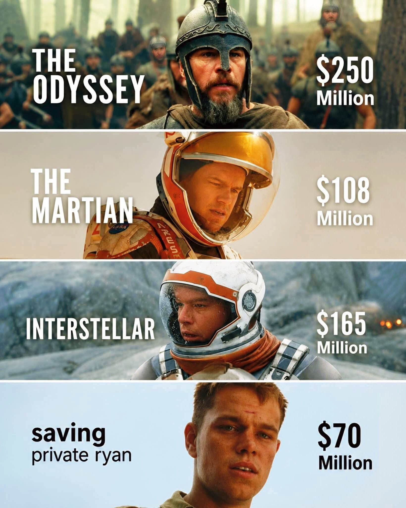
𝒍𝑼𝑫𝑾𝑰𝑮
@LUDWIG_cinema
『オデュッセイア』を始め
ハリウッドはマット・デイモンを
家に帰らせるだけで約6億ドル
(910億円)を費やしてるらしい
松原のぶえさん死去 演歌歌手、「おんなの出船」
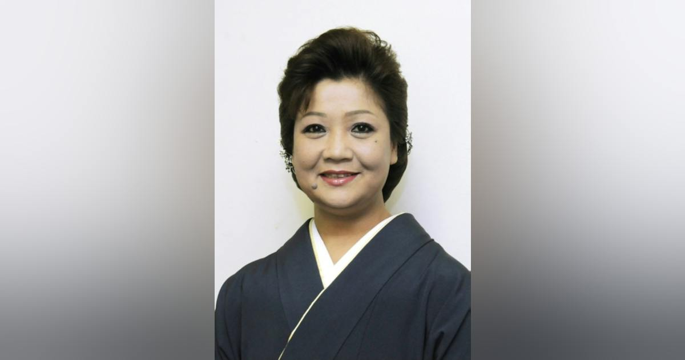
松原のぶえさん死去 演歌歌手、「おんなの出船」
ボストン美術館の地下に60年、古代エジプトの4500年前のドレスがよみがえる
https://
nikkei.com/article/DGXZQO
SG028EV0S6A900C2000000/?n_cid=SNSTW005&n_tw=1789359436
…
バラバラだった約7000個のビーズから、3年の歳月をかけて精緻に復元。発掘記録などから元の形に戻したとき、余ったビーズはひとつもなかったといいます。
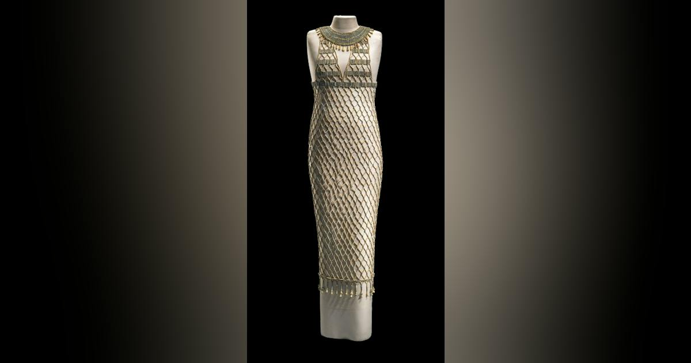
美術館の地下に60年、4500年前のドレスがよみがえる
北欧神話風オープンワールドサバクラ『Valheim』正式版リリースで再び盛況―Steam版の最大同時接続者数が30万人突破！
https://
gamespark.jp/article/2026/0
9/14/172228.html?utm_source=twitter&utm_medium=social&utm_content=tweet
…
9月9日の正式版リリース後から、最大同時接続者数が日ごとに上昇。この週末で30万人を突破しました。
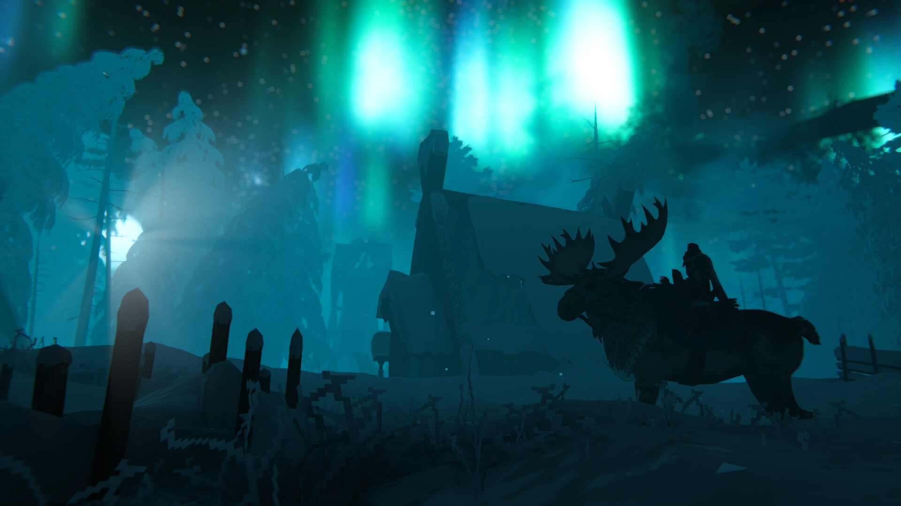
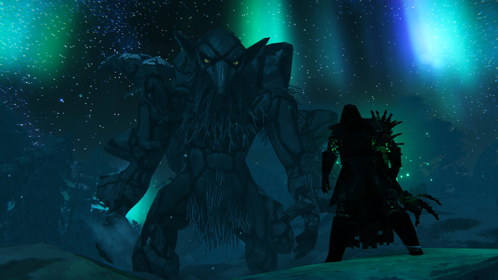
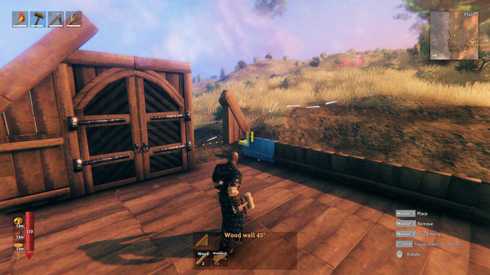
マケイン2期ってだいぶ前に決まってなかったっけと思ったらそうだった
放送時期決まったん？
魚を切ったらさっと水洗いでOK。燕三条製の純チタン製まな板がセールに BuyPR
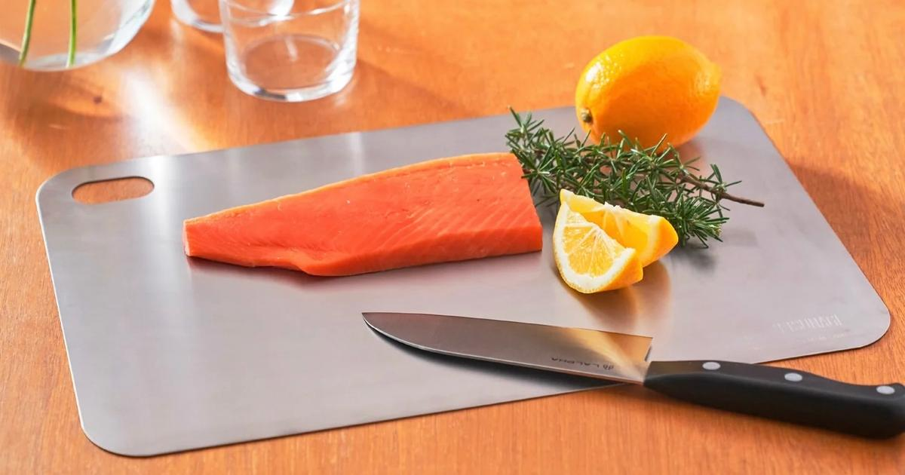
魚を切ったらさっと水洗いでOK。燕三条製の純チタン製まな板がセールに | ギズモード・ジャパン
“自動で耳コピ”アプリ、ヤマハが無料公開 音源読み込み→3分でピアノ譜に
“自動で耳コピ”アプリ、ヤマハが無料公開 音源読み込み→3分でピアノ譜に
『マブラヴ』シリーズ累計販売100万本突破！SNSで合計500名に“好きなSteam向けシリーズタイトル”が当たるキャンペーン開催
https://
gamespark.jp/article/2026/0
9/14/172227.html?utm_source=twitter&utm_medium=social&utm_content=tweet
…
書類審査ADV「推しの中身、気になりませんか？」発表
https://
4gamer.net/s/G104256.2609
14020
…
・推しを誰よりも近くで守りたい最古参リスナーとなり，VTuber事務所の警備員として働く
・来訪者の入場パスや予定表，所属証明書などを確認し，入館可否を判断する
・プレイヤーの判断と執着によって結末が変化する
『シャインポスト』公式さんがリポスト
ありちゃんーー‼︎‼︎
中野より前からずっとずっと柔推しなんだぁありちゃんの透き通るような真っ直ぐで綺麗な歌声と、抜群スタイルでしなやかなダンスにいつも魅入っちゃいます
実はこの間2人でランチも行けて楽しかったんだぁ
#シャインポスト #BSF2026
9つのダンジョンを攻略し，100階の奈落へ。「Delve Survivors: A Dungeon Roguelike」，11月12日にSteamで発売
https://
4gamer.net/s/G093051.2609
14022
…
・ターン制ローグライク×サバイバー系のゲームシステム
・Switch2/Switch版は2027年1月21日発売予定
またもや発売直前にSteamから“成人向け”判定、吸血鬼RPG『Nighthawks』―「Valveは本作をポルノゲームのように扱っている」一部地域では販売停止に
https://
gamespark.jp/article/2026/0
9/14/172226.html?utm_source=twitter&utm_medium=social&utm_content=tweet
…
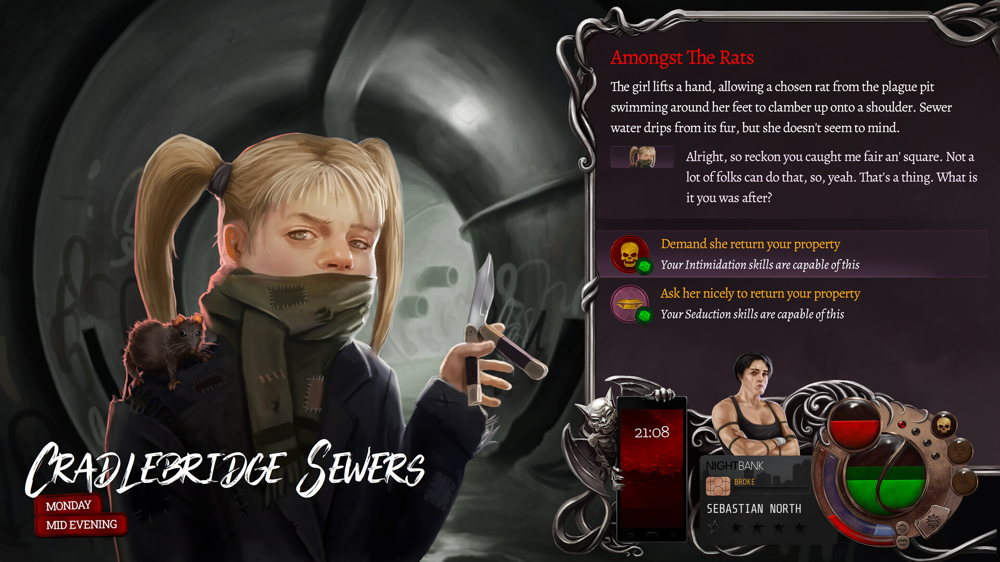
22歳で私は退職して、住宅の転売事業を始めた。稼げているが、もう一度やろうとは思わない
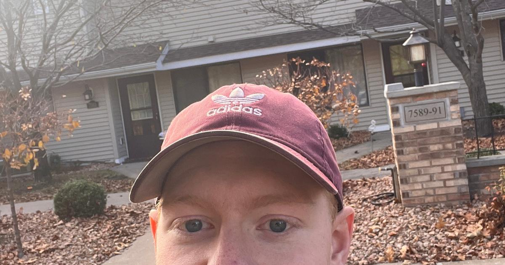
22歳で私は退職して、住宅の転売事業を始めた。稼げているが、もう一度やろうとは思わない | ギズモード・ジャパン
『シャインポスト』公式さんがリポスト
／
ゆきもじ出演
＼
東京ゲームショウ2026
「シャインポスト」スペシャルトークショー
に、出演いたします
9月19日（土）11:45～12:30
東京ゲームショウ2026/4Gamer.netブース
BSF2026の振り返りや楽曲制作の裏話もするよ会いに来てね
#シャインポスト #BSF2026
『シャインポスト』公式
@SHINEPOST_PJ
東京ゲームショウ2026にて
「TINGS」ぬいぐるみキーホルダー発売記念「シャインポスト」スペシャルトークショー
開催決定！
9月19日（土）11:45～12:30
東京ゲームショウ2026/4Gamer.netブース
ゲスト
中川 梨花さん（伊藤 紅葉 役）
長谷川 里桃さん（祇園寺 雪音 役）
RAM RIDERさん
谷村
【帽子型鍋】
俯瞰で見たときに圧倒的に目立つ、革新的な照明器具！
カラーリングも素敵で、ライブハウス的な装飾に良さそう。
ただしコストが重く、大量に置くのは厳しいかも。
あと専用モーションめっちゃ可愛い！！
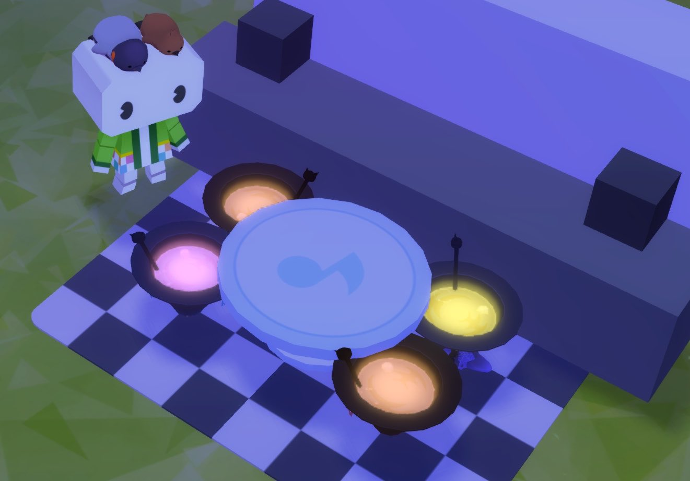
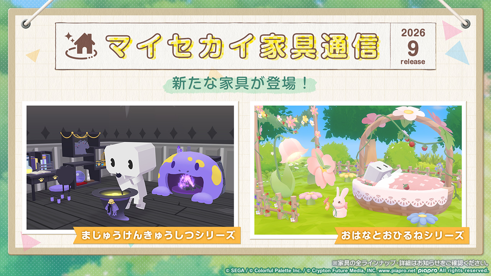
プロジェクトセカイ カラフルステージ！ feat. 初音ミク【プロセカ】
@pj_sekai
マイセカイに新たな家具を追加しました
「まじゅうけんきゅうしつシリーズ」を追加（7種）
「おはなとおひるねシリーズ」を追加（7種）
※詳細はお知らせをご確認ください
#プロセカ
人が勧めたりしてるのを見聞きして何かを買ったりするのって、昔はちょっとなぁ、カッコ悪いなぁみたいなところもあったけど、自分が認識してなかった/重要視してなかった価値に気がつくと、やっぱり欲しいなぁとなるものではあるよね。あぁ餃子食べたい←
静
@sizuka_jpa
『マツコの知らない世界』を見ていると、最初は興味のなかった餃子やホットケーキまで、ゲストが楽しそうに語るうちに妙に気になってくる。たぶん私たちは物そのものだけでなく、その人にしか見えていない面白さを借りている。誰かの「好き」を聞く時間は、その人を知る時間であると同時に、自分の世界 x.com/shibuya_tsuzur…
あまりにこれすぎる・・・「高い EQ を持った人間をふりをした悲しい化け物」←これこれこれ！
Astra は能力高いし、実際「GPT 語」と読むべきクソ語彙はだいぶ減って文章単体では読みやすくなっているが、根本的に「自分を持ってない」「誰に向かってるのかわからない文章を書いて提示してくる」のが
erukiti
@erukiti
Astra は、言葉以外の能力が強化されすぎた悲しい化け物。あまりにも能力が高すぎるんだけど言葉が論外
Fable は、高いEQを持った人間の振りをした悲しい化け物。能力も高く、一件言葉が通じるように見えて、やっぱり根底では化け物
なので、悲しい化け物じゃないモデルが必要なんや x.com/erukiti/status…
『シャインポスト』公式さんがリポスト
.
まだ名前のない私たちで
ACROSS THE UNIVERSEは
個人的に好きな楽曲の1つだったので
お披露目で歌えて嬉しかったです。
本当に頼もしい方々ばかりで
リハーサルから尊敬の連続...
今から楽しみ⸝⸝
国勢調査、ユニット名募集も
ぜひご参加待ってます
#シャインポスト #BSF2026

『シャインポスト』公式
@SHINEPOST_PJ
／
『シャインポスト Be Your ライブ！』開催決定！
＼
“マネージャーさん”たちと作り上げる参加型リアルライブの2回目！
『シャインポスト Be Your ライブ！ep.02@恵比寿 The Garden Hall』の開催が決定しました！
2027年2月13日（土）※昼夜2回公演
恵比寿 The Garden Hall
メンバー
高瀬
独自クラウドじゃなくて汎用クラウドに保存できるらしい？まあ TS 抜けない PC 録画と似たようなもんだろうが
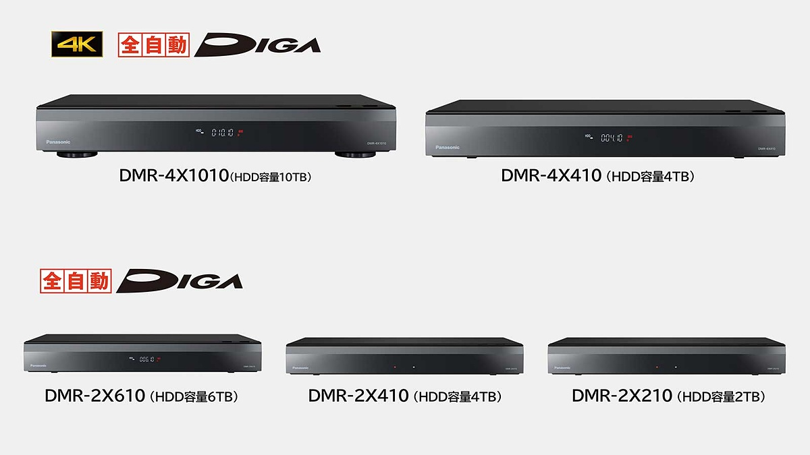
AV Watch
@avwatch
パナソニック、録画番組をクラウド保存できる全自動ディーガ
https://
av.watch.impress.co.jp/docs/news/2140
657.html
… #ディーガ #パナソニック
湘南ペンギンさんがリポスト
絵面が面白すぎる
https://
news.yahoo.co.jp/articles/471eb
b2af71a5bc9d3b7ad89821cb1336b0f81c9
…
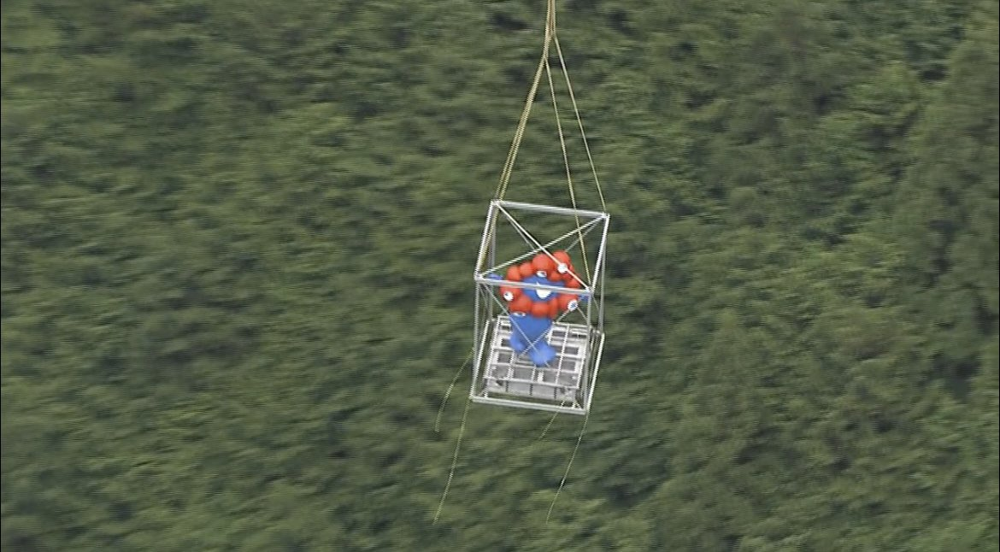
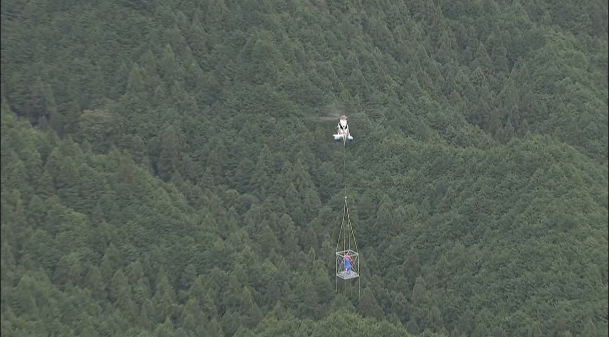
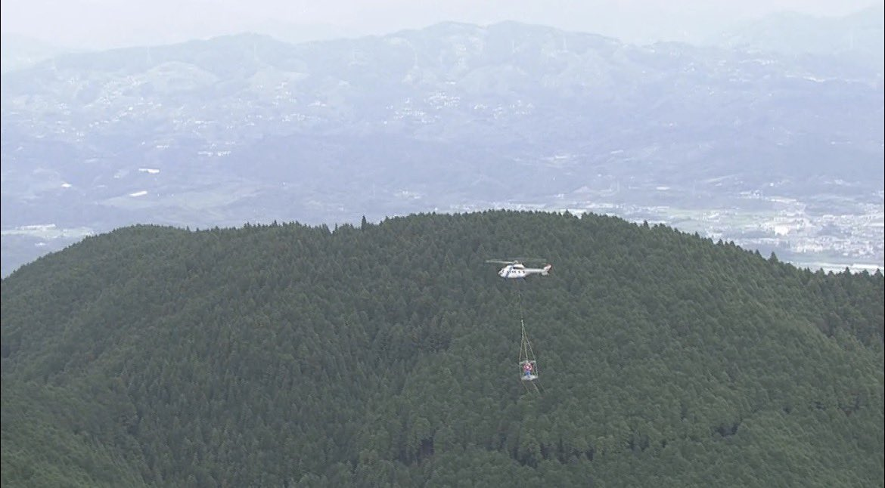
→作品ってこういうことを言うんだろうなぁとしみじみ感涙 あと先輩や大人がかっこいいのがいいね
・喫茶店？
・音大の定演
・職員室
あたりのシーンが凄く好きで、最後の方の久美子にそれらが集約というか継承されてるのが激エモでしたわ
ワンダーランズ×ショウタイム
書き下ろし楽曲追加
『ヘレディティ』
サツキ（
@32ki_May
）
どんなに遠く離れていても——
進め、あの輝くステージを目指して！
止まらない想いを乗せたワンダーランズ×ショウタイムによる１曲、お聴きください！
#プロセカ #ワンダショ
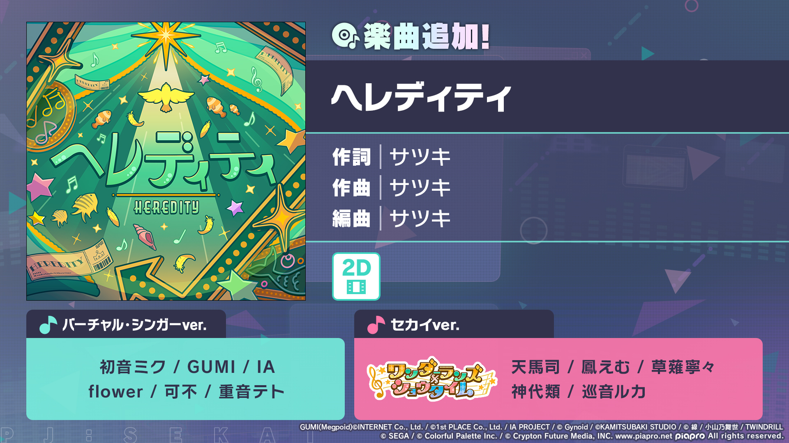
『シャインポスト』公式さんがリポスト
みなとみらい駅に掲載されていた
応援ポスターも拝見しました
すごく可愛く愛に溢れたイラストで、ライブを盛り上げてくださってありがとうございます‼︎
#シャインポスト #BSF2026
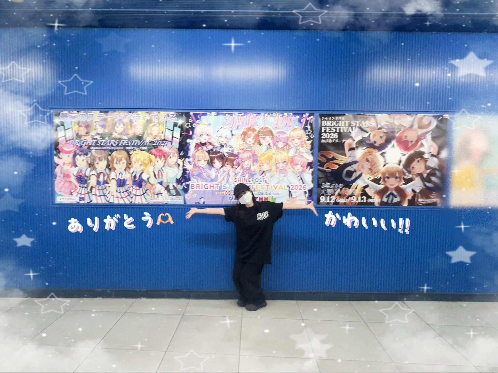
ユーフォ劇場版最終楽章
内容に影響しないネタバレ？感想
作品を通して、現代の若者や大人や社会に対してこうあってほしい、こうだったらいいなというような思いが、決していやらしくはない形で(めっちゃ濃ゆいことはあるけども)込められてて、故 八田前社長の「よってたかって作ら」れた→
いるか@心が酒びたっているんだ
@kaiyouhonyuruid
ユーフォ劇場版最終楽章、素晴らしかったです。全品メインディッシュの満漢全席のような濃厚さでしたね
絶対に内容に影響しないネタバレ感想ですが、ピーマンが茨城産なところで妙なリアリティを感じてふふっとなりました(宇治では茨城産が他の産地のものより多いとかではないです x.com/kaiyouhonyurui…
本日15:00より
イベント『Drive to Dream！』を開催
#プロセカ
パルバースは箱買ったら全種揃ったはず…学マスはそうだった。どう見てもシクレがアレすぎる。
『シャインポスト』公式さんがリポスト
／
FC 新着情報
＼
長くなっちゃいました。
#BSF2026 振り返り
よかったら見てください
最初の3日間は無料で
お楽しみいただけます♪
https://
lounge.dmm.com/detail/8342/
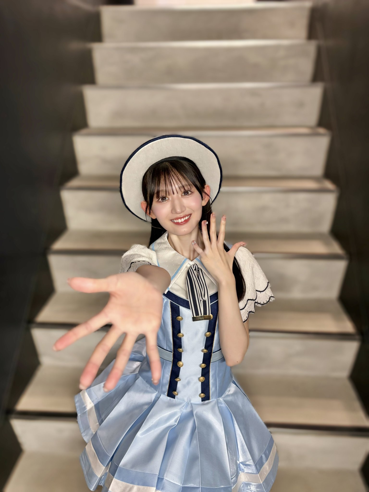
ペット連れ登山、安全どう守る
https://
nikkei.com/article/DGXZQO
UD1528S0V10C26A8000000/?n_cid=SNSTW005&n_tw=1789294918
…
山梨の渓谷で犬を連れた女性が転落死しました。同地ではペットと入山しないよう呼びかけていましたが、ペット連れ客は近年増加していました。法律での規制がないなか、安全の確保が課題になっています。
ペット連れ登山、安全どう守る 禁じる法律なく景勝地で転落事故も
>> 第二に、私たちは権力の集中が過度になりすぎる世界に陥ってしまう可能性があります。もし非常に強力なAIが、一人の人物や企業によって彼らの世界観を他人全員に押し付けるために使われた場合、その結果は極めてディストピア的になる可能性があります。
↑イーロンマスクの悪口？
Sam Altman
@sama
AIの進歩が非常に悪い方向に進む可能性は2つあり、それを避けなければなりません。 x.com/sama/status/20…
サンプルボイス聴いたけどなるほど背徳コンテンツすぎるな・・・倒錯的だ・・・
ITmedia NEWSさんがリポスト
米トランプ大統領、広がるAI規制論に反論 「中国へのリードを維持したい」
米トランプ大統領、広がるAI規制論に反論 「中国へのリードを維持したい」
【最大80％オフ】『不思議のダンジョン 風来のシレン』シリーズがSteam/スイッチ向けにセール中。Steam版『シレン5』は80%オフ596円
https://
gamespark.jp/article/2026/0
9/14/172225.html?utm_source=twitter&utm_medium=social&utm_content=tweet
…
2作セットのダブルパックはSteamで8,064円→3,227円。
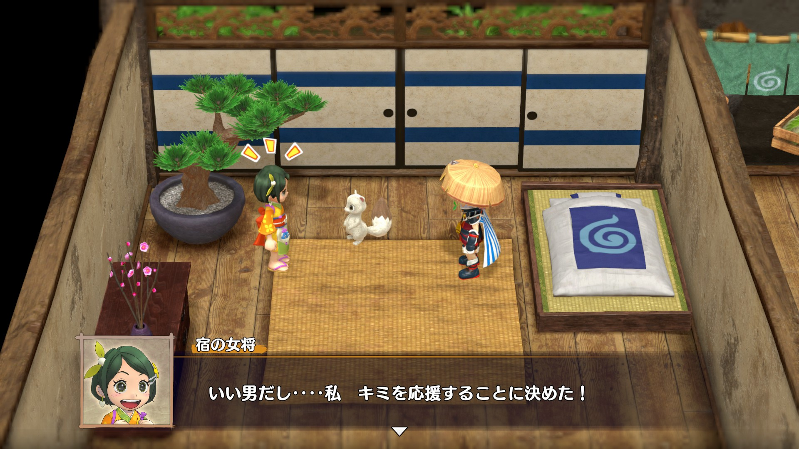
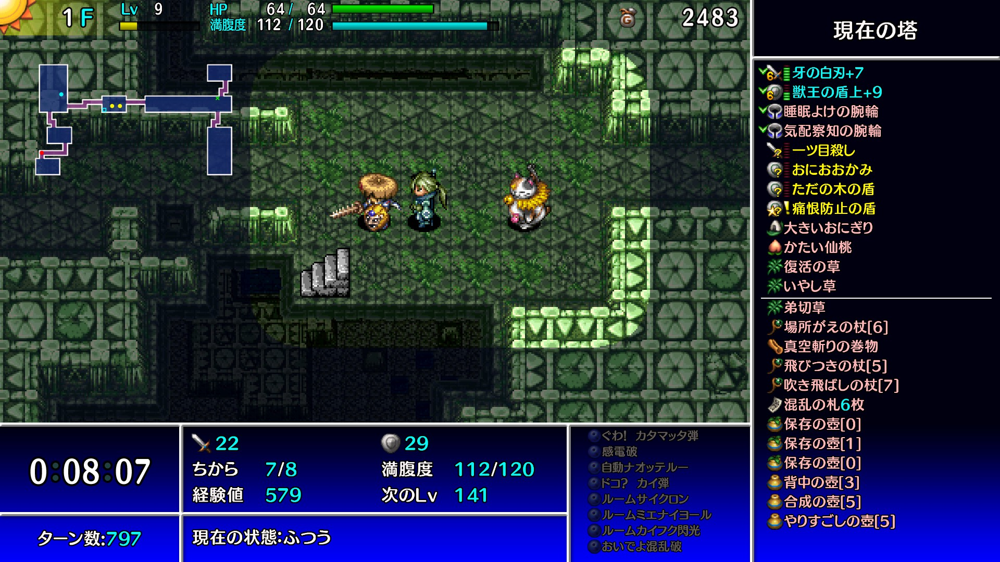
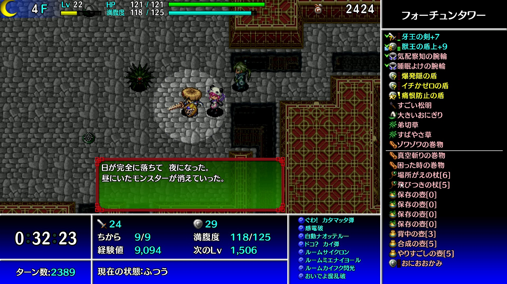
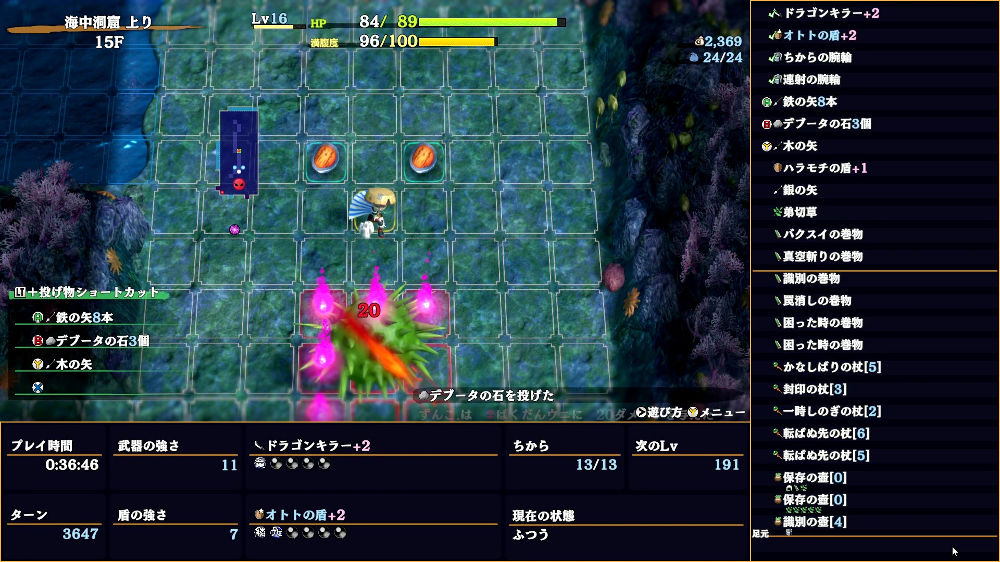
「SCREENX with DolbyAtmos」における
入場者特典 / 本編後の後付映像をご案内させていただきます。
入場者特典：
SCREENX・ULTRA 4DX限定
金箔入りステッカー
後付映像：
「ray 超かぐや姫！Version」MV
#超かぐや姫
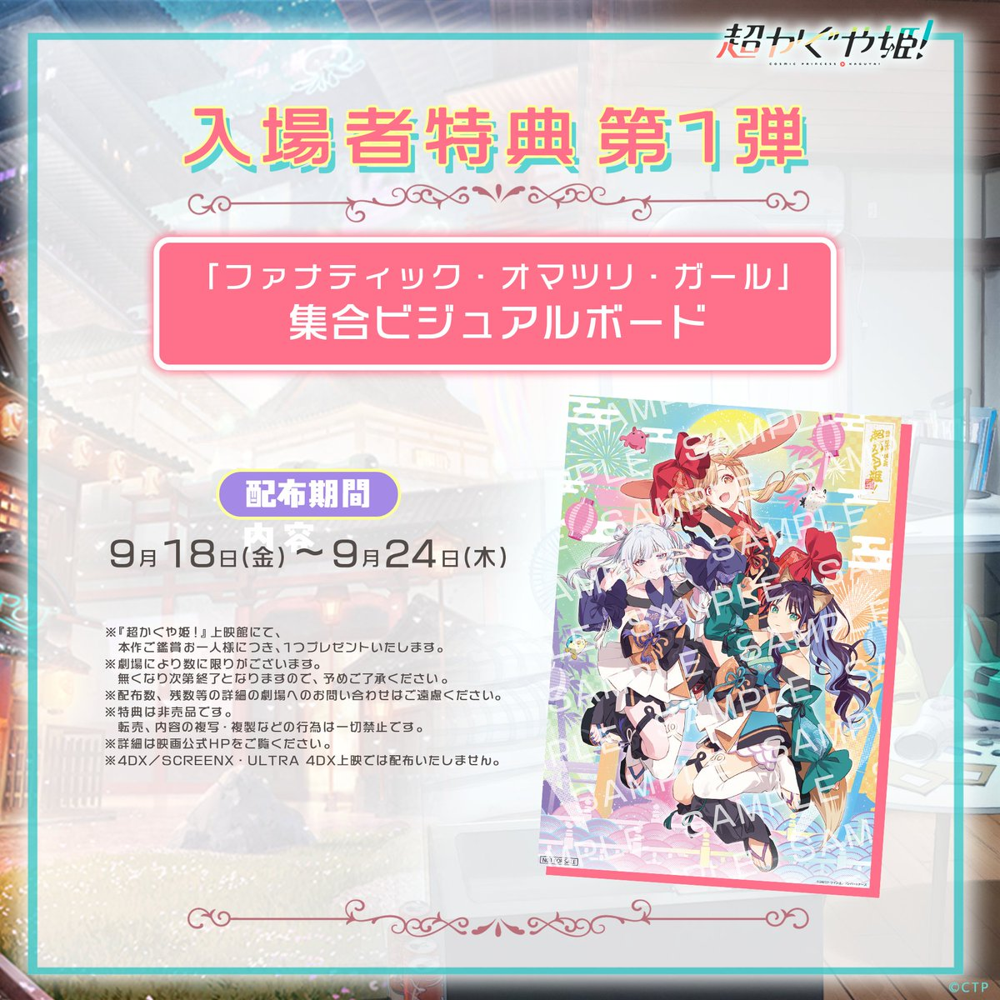
『超かぐや姫！』公式
@Cho_KaguyaHime
── 𓂂 𐩑 ✦ ── ✶ ₊⁺ 𓂂 ──
入場者特典 配布決定
── ✶ ₊⁺ 𓂂 ── 𓂂 𐩑 ✦ ──
入場者特典 情報
①第１弾
「ファナティック・オマツリ・ガール」
集合イラストボード
②4DX限定 ペーパークリップ
③SCREENX・ULTRA 4DX限定
金箔入りステッカー
注意事項
Afterglowによるカバー楽曲、『千の翼』を追加しました
カバー楽曲はCiRCLEエリア内の「楽曲ショップ」で「音色のクリスタル」を使って購入できますよ
※「音色のクリスタル」はストーリー初読時などで獲得できます
#バンドリ #ガルパ
━━━━━━━━━━━━
#楽園追放
心のレゾナンス
#京まふ2026
━━━━━━━━━━━━
心のレゾナンステージでは
【教えて！虚淵さん！】の
コーナーを行います。
9/15まで作品へのお便り大募集！
ぜひ皆さん応募してみて下さい
https://
rakuen-tsuiho-r.com/form/
ASMR には全く手を出したことがないのだが、たまたま見た DLsite のレビュワーに文豪が多すぎて爆笑 ASMR 批評って存在するんだ・・・
https://
dlsite.com/home/work/=/pr
oduct_id/RJ01673629.html
…
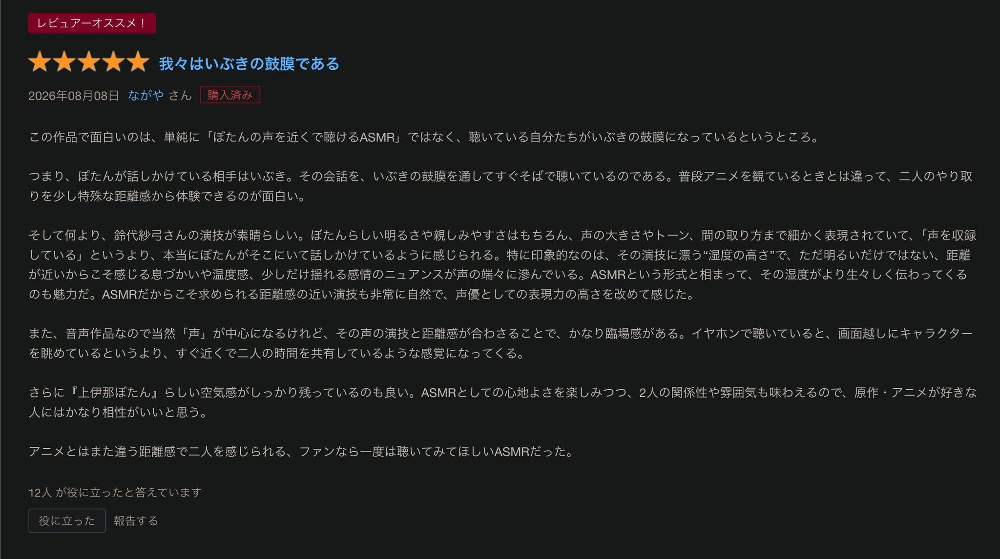
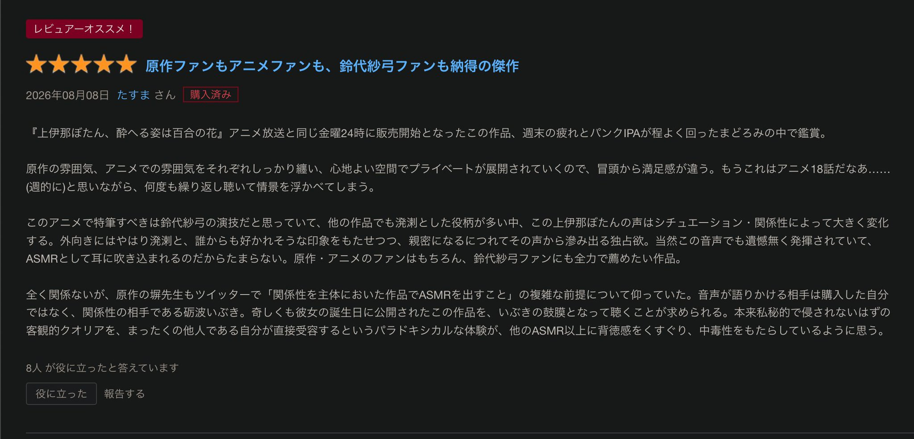
Torishima / INTPさんがリポスト
OneDriveやGoogleドライブなどのクラウドストレージに録画番組を保存。……え？
AV Watch
@avwatch
パナソニック、録画番組をクラウド保存できる全自動ディーガ
https://
av.watch.impress.co.jp/docs/news/2140
657.html
… #ディーガ #パナソニック
Torishima / INTPさんがリポスト
パナソニック、録画番組をクラウド保存できる全自動ディーガ
https://
av.watch.impress.co.jp/docs/news/2140
657.html
… #ディーガ #パナソニック
『シャインポスト』公式さんがリポスト
イト、アオ姉、私たち3姉妹はずっとずっと一緒だよ
3人で同じステージに立って、たくさんの人を笑顔にする夢が叶ったね‼︎
これからもだいすきだよーーー‼︎‼︎
#シャインポスト #BSF2026
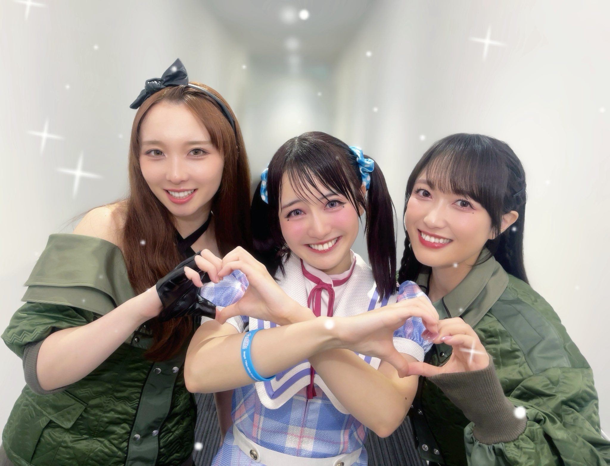
「シブヤスクランブルストーリーズ」CF支援総額1億円突破を報告。新キャラ3人の詳細も明らかになったイベントをレポート
https://
4gamer.net/s/G090534.2609
14017
…
約20年前にイシイジロウ氏の実写ADVに出演した工藤俊作さん，小山卓治さん，右手愛美さんが再集結。当時の渋谷ロケや撮影の秘話も語られた
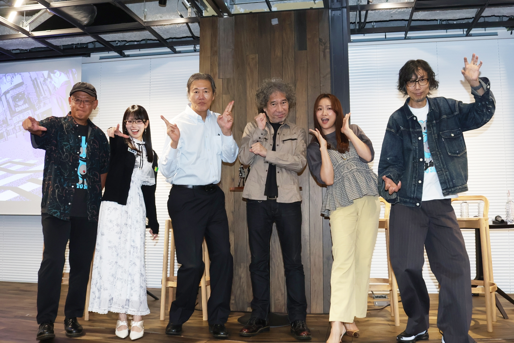
【悲報】ふるさと納税、また改悪へ
ふるさと納税が今年の10月1日からルールが厳格化され、実質「改悪」となります。
寄付額アップや内容量の削減、人気品の提供終了が予定されているため、今年の寄付は【9月末まで】に終わらせるのが最善策です
2026年10月～
→
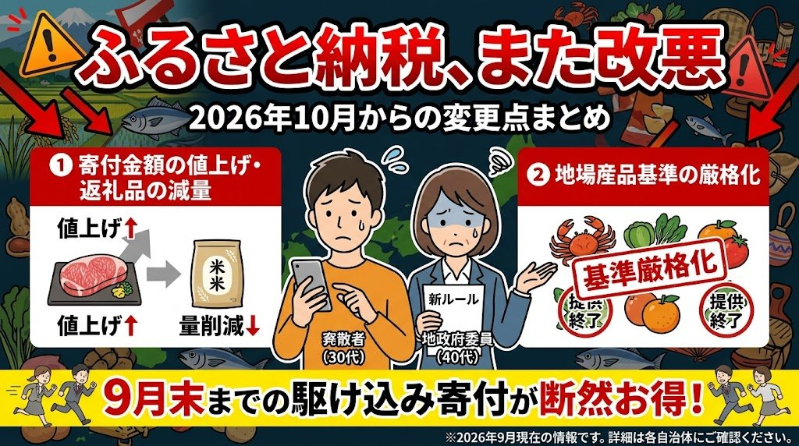
しまむらで『ポケモン』グッズが9月14日15時よりオンライン販売！リラックスタイムを快適にしてくれる「スマホ包まれ枕」全3種
https://
gamespark.jp/article/2026/0
9/14/172224.html?utm_source=twitter&utm_medium=social&utm_content=tweet
…
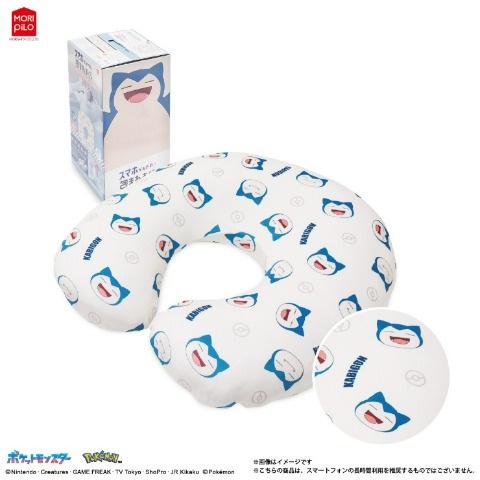
「ときめきメモリアル Girl's Side」シリーズのグッズがSeriaに登場。アクリルめじるしチャームなどを110円（税込）で購入できる
https://
4gamer.net/s/G076419.2609
14019
…
メガネをかけたキャラクターたちがデザインされたクリーナークロスや，憧れの彼と写真が撮れるクリアポストカードなどが販売される
帽子型鍋のモーション可愛すぎる！！
今回の連邦オフ会では、設置されたプロジェクターに「誰もがどよめく勝手移植作品」「誰も見た事がなかった新作の勝手移植作品」「超絶レアなゲームの本物」などがプレイ可能となっており、なおかつ「超絶凄いエミュレーター」が急遽持ち込まれ、大変驚いた次第
どんどん凄い会になってまいりました
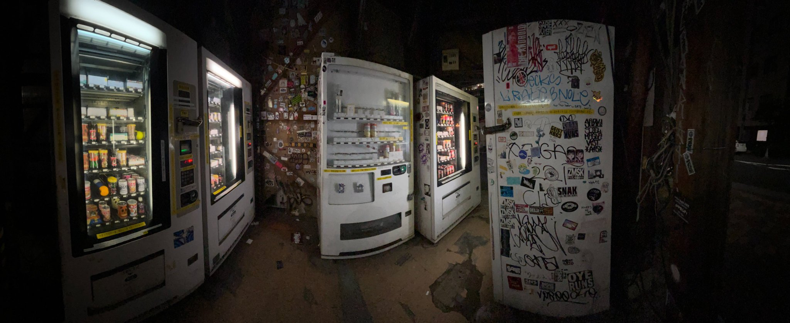
クーロン黒沢
@kurosawa6502
アキバで連邦のオフに行ってきた。今回は外国の人もいれば女性もいたが皆ひとしくマニアだった。シスコン荻野さんが亡くなったこと。サ✗バーユーキさんのこと。色々知れて行ってよかった。写真は撮らんかったので帰りに自販機コーナーでパチリ
なるせひろのりさんがリポスト
ほぼ全域で古謝新知事が勝ち、ホンモノのオール沖縄が産まれたのは皮肉よね。
産経ニュース
@Sankei_news
「『オール沖縄』は死語になる」 地域経済は疲弊、沖縄県知事選で玉城県政に厳しい審判
https://
sankei.com/article/202609
14-ELUBQPIIFRITBINPBI3BCZ7B7U/
…
選挙結果は、県民生活に直結する重点課題が山積する中、辺野古反対に固執し続けた玉城県政に対する評価といえる。
キオクシア発新興、次世代暗号技術サービス 計算能力50倍以上に向上

キオクシア発新興、次世代暗号技術サービス 計算能力50倍以上に向上
なるせひろのりさんがリポスト
【沖縄県知事選】玉川徹氏、デニー惨敗にブチギレ「あきらめと無力感が、沖縄の多くの人の中にある」
【沖縄県知事選】玉川徹氏、デニー惨敗にブチギレ「あきらめと無力感が、沖縄の多くの人の中にある」
でも8月だとめちゃくちゃ暑いから9月後半か10月に行きたい私がいるんだよなーーーーーーーー
中学生ワイ「はぁっ…はぁっ…」ｼｺｼｺ 部屋に忍び寄るパッパ「www」ｿｰｯ
中学生ワイ「はぁっ…はぁっ…」ｼｺｼｺ 部屋に忍び寄るパッパ「www」ｿｰｯ : ハムスター速報
「機動戦士ガンダムRG XARX-ZERO」，2027年4月に放送決定
https://
4gamer.net/s/G999103.2609
14015
…
・2027年3月5日に発売されるゲーム「GUNDAM ROGUE ORBIT」と世界観を共有するTVアニメ
・監督を務める神山健治氏のインタビューも公開
「原神」，Ver.7.1「冥府へのレクイエム」を9月23日リリース
https://
4gamer.net/s/G048621.2609
14016
…
・「死の執政」ロノヴァとの決戦を描く魔神任務を追加
・新★5「ヴェスナ」「ヴォジャニーツァ」が登場
・璃月で5年ぶりの「月逐い祭」を開催
・6周年記念で限定★5を1名無料招待
なんかこういうの見るとAI減速をするとかしないとかって政党同士のバトルの話になってるってマジなんかもなって
ロイター
@ReutersJapan
オバマ氏、ＡＩは「危険になり得る」 民主党に対策要請＝報道
https://
reut.rs/3Tu1TtB
https://
reut.rs/3Tu1TtB
Switchの音が小さいって？ だったら音量2倍になるこのスピーカー使ってみなよ
Switchの音が小さいって？ だったら音量2倍になるこのスピーカー使ってみなよ | ギズモード・ジャパン
なるせひろのりさんがリポスト
似たような光景見たことありますけど本当にやめて欲しい。
距離ガバくん@FL5
@fl5_y6_s_6y_5lf
駐車場でキャッチボールするの止めい
バカが
てな訳で管理人に通報
みんな免許証って誕生日前と後どっちに更新行くタイプ〜！？！？！？！？！？絶対私後なんだけど〜！？！？！？！？！？でも絶対前に言って1日でも若い姿写真に残した方がお得よなーーーーーーーーー
クマ、保護と安全策の両立模索 環境省リストで四国山地など絶滅恐れ

クマ、保護と安全策の両立模索 環境省リストで四国山地など絶滅恐れ
『ディアブロ V』には新クラス登場！『ディアブロ』Netflixアニメ化決定と『OW』×「サイバーパンク: エッジランナーズ」コラボ発表などBlizzCon 2026情報まとめ
https://
gamespark.jp/article/2026/0
9/14/172223.html?utm_source=twitter&utm_medium=social&utm_content=tweet
…
・『ディアブロ』Netflixアニメ化決定（詳細は今後発表）
・『ディアブロ
オリエンタルランド株価、年初来高値 特別優待目的の買いも
オリエンタルランド株価、年初来高値 特別優待目的の買いも
中部電力、林社長と勝野会長が辞任発表 浜岡原発データ不正で引責
中部電力、林欣吾社長と勝野哲会長が辞任発表 浜岡原発データ不正で引責
佐々木俊尚さんがリポスト
気鋭のジャーナリスト、カレン・ハオ氏が書いた話題書『エンパイア オブ AI』を佐々木俊尚氏はどう読み解いたのか。全３回の１回目です。
↓
【オープンAI、アンソロピックの覇権争いの行く末とは 佐々木俊尚氏が語るテクノロジーの進化が止まらない深い理由】

オープンAI､アンソロピックの覇権争いの行く末とは 佐々木俊尚氏が語るテクノロジーの進化が止まらない深い理由
この間まなてぃとビリヤニ食べ行った時にもらったぶどうめちゃくちゃ甘くて最高だった〜！！！！
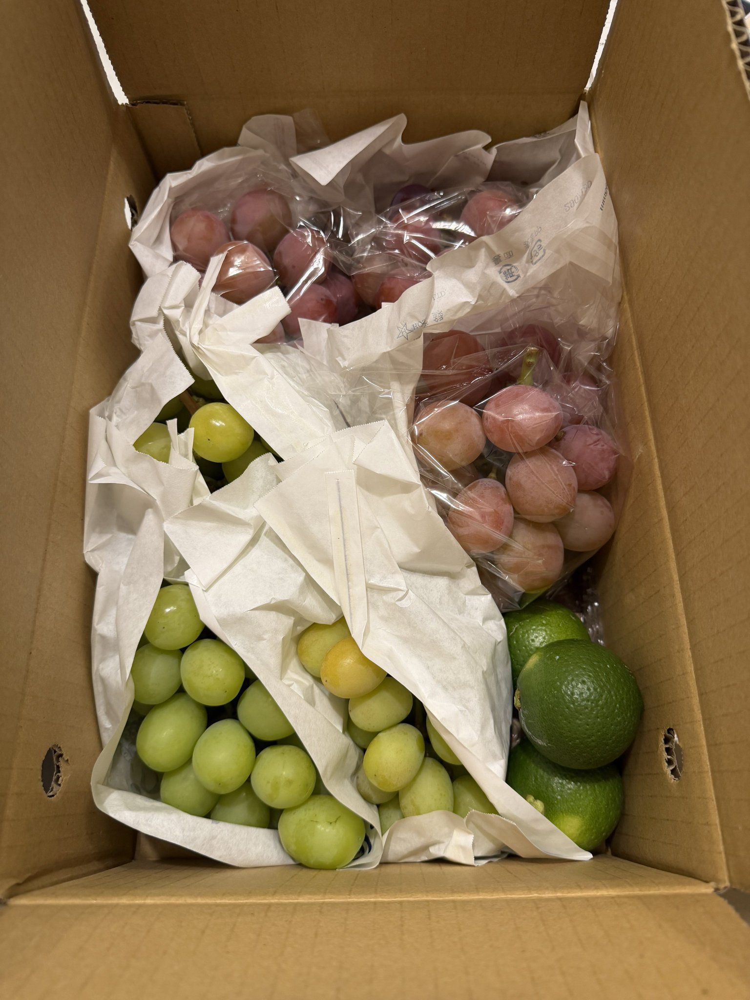
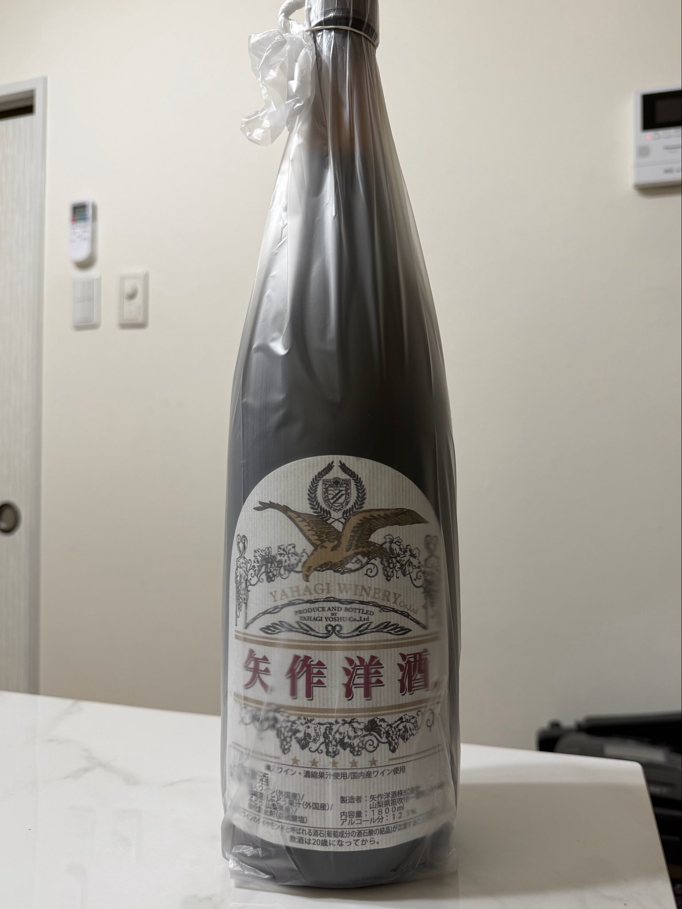
まなてぃなんでも屋さん
@mnty_ocean
あま〜〜いぶどうをかえでちゃん(&パパ)からたくさんいただいた！！！！
おいしくて贅沢にばっくばく食べてる！！超うれしいありがとう
そして一升瓶のワインまで(でけぇ)
「250円分だけ」楽しむなら？→花1輪だけ、観覧車は1/3だけ……税込250円で満足できる『朝ファミマのコンビ割』が超優秀だった
https://
nlab.itmedia.co.jp/cont/articles/
3998177/
… #PR
「250円で買えるもの」「250円でできること」を考えてみました
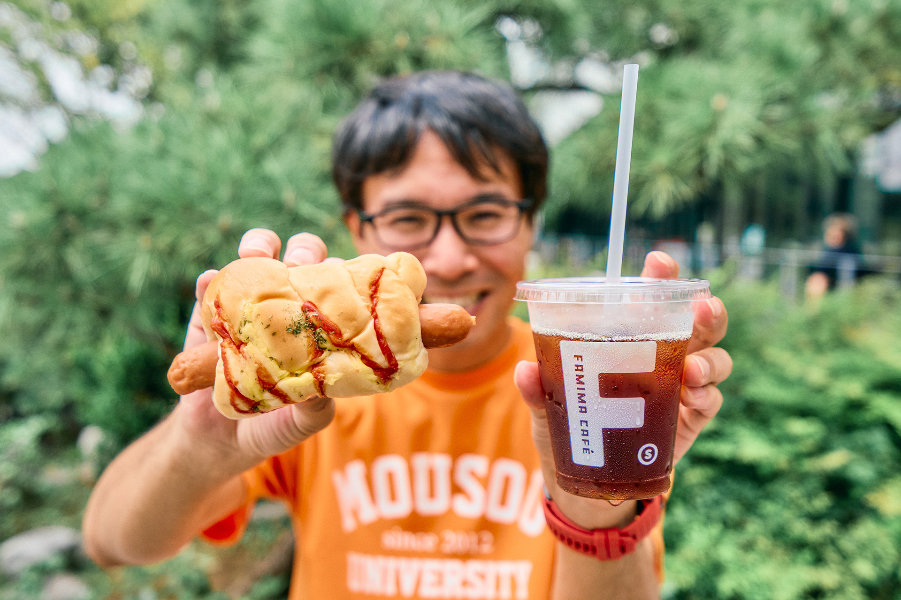
富士通、銀行システムの開発期間を30％短縮 AI先端モデル活用
富士通、銀行システムの開発期間を30%短縮 AI先端モデル活用
“大切な第1部の物語を全力で作った”ー『アナザーエデン ビギンズ』平澤Pが語る、シリーズ拡大への展望【インタビュー】
https://
gamespark.jp/article/2026/0
9/14/172222.html?utm_source=twitter&utm_medium=social&utm_content=tweet
…
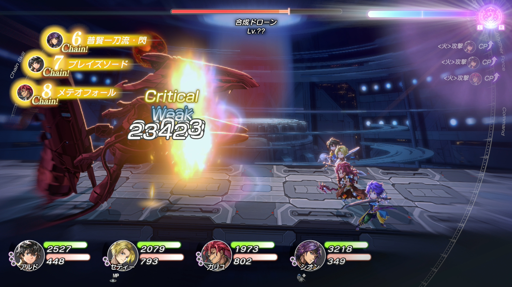
梅しそささみ揚げが美味しすぎる～～～～
大名作『バイオハザード』を、古のゲーム機「Atari Jaguar」に勝手移植するプロジェクトが始動!!
本作は、PS1／PC／サターン版を解析し、Jaguar向けエンジン「OpenUMB」で移植をしている真っ最中で、近日中にリリース予定との事。
遂にJaguar界にも勝手移植が到来だッッ!!
https://
reddit.com/r/AtariJaguar/
comments/1wfp829/resident_evil_running_on_jaguar_openumb_engine/
…
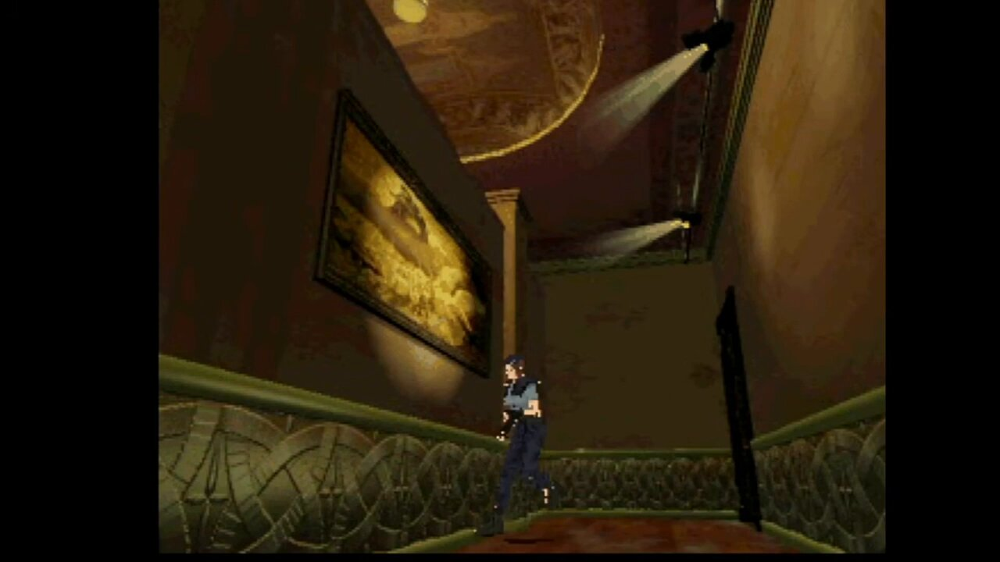
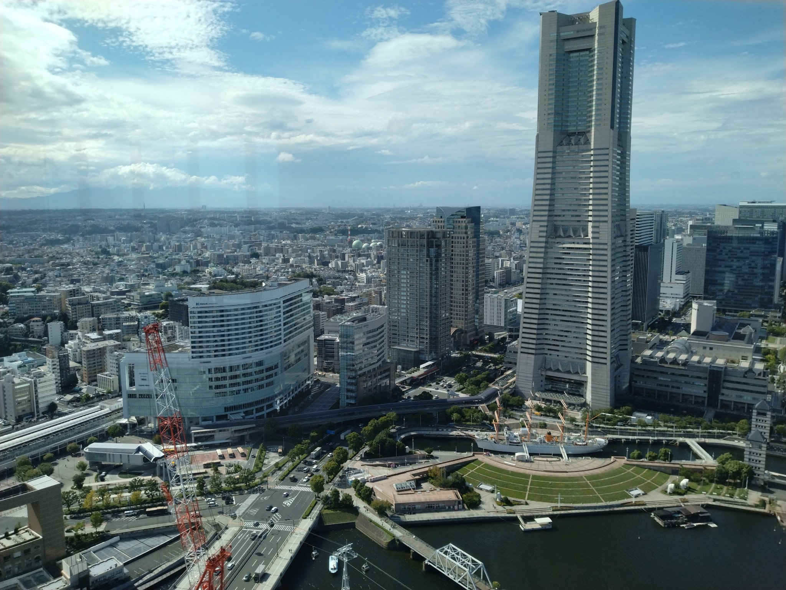
なるせひろのりさんがリポスト
【ロマンスカーとコンバインが衝突】

ロマンスカーとコンバインが衝突 - Yahoo!ニュース
ポケモン1025匹がTシャツに。お気に入りのポケモンのTシャツが手に入るコレクション，9月18日からZOZOTOWNで受注販売
https://
4gamer.net/s/G061991.2609
14013
…
デザインには，一部のすがたちがいのポケモンも含まれる。ピカチュウのロゴは「30」をブラックカラーにアレンジした“ZOZOTOWNデザイン”だ
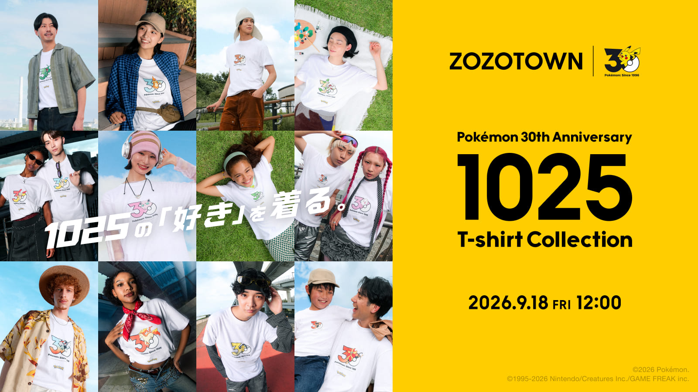
『シャインポスト』公式さんがリポスト
HY:RAINのみんなと
みんなとツーショ撮れたるんるんって思ってたらなんでか優ちゃんと撮り忘れてましたなんで？？
でも！！なんと！！優ちゃんと一緒に！！
小夢さんこと豊崎愛生さんと3人で撮っていただけたスペシャル写真があります！！！
すぺしゃるな週末でしたね
#シャインポスト #BSF2026
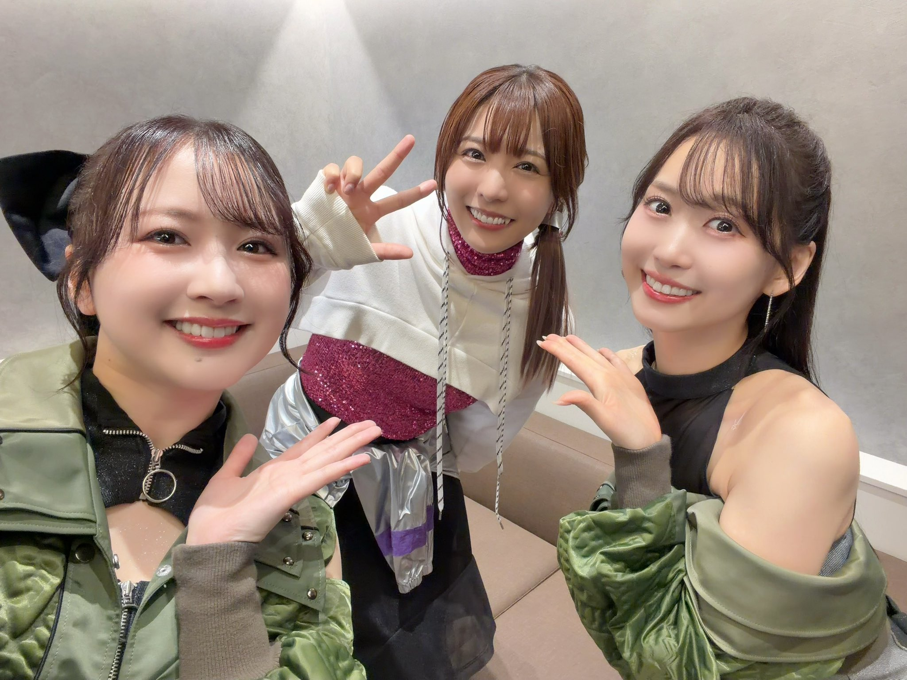
アプリのGPSでサークルした愚か者絞れたらいいのにね
ゲーム『ガンダム ローグオービット』と世界を共有する最新アニメ「機動戦士ガンダムRG アレックス ゼロ」2027年4月放送決定！ザクが侵食されてる…？新たな場面カットも
https://
gamespark.jp/article/2026/0
9/14/172221.html?utm_source=twitter&utm_medium=social&utm_content=tweet
…
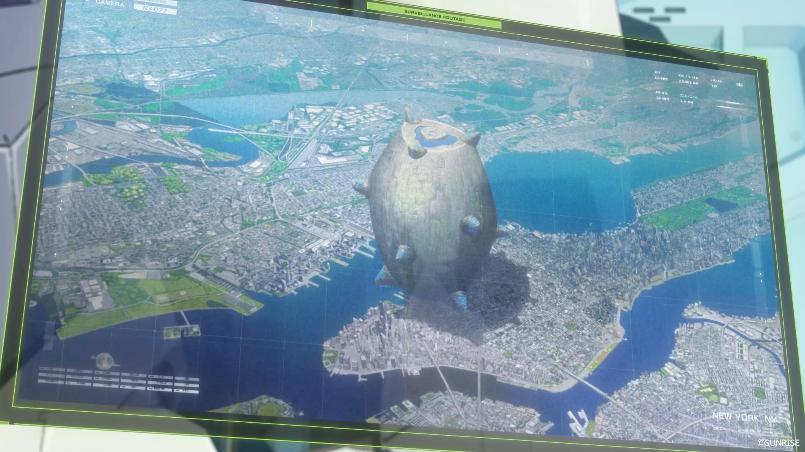
なるせひろのりさんがリポスト
むしろ不法在留なのに免許更新までさせていた今までが異常すぎただけ、犯罪者優遇とか論外。
不法滞在者は一切の権利を認めずお帰りくださいってのが基本だろ。
あと、オールドメディアが一斉に「在留資格が無い」等の言い方に変えてて不法滞在と書かないようにしているのもおかしい。
在留資格ない埼玉の外国人男女１３人、運転免許更新できないのはおかしいと提訴…昨年１０月に改正
すごい光景だ
今日か
Apple Watch Ultra 4 vs. Watch Ultra 3：チップとバッテリーのアプデが魅力！
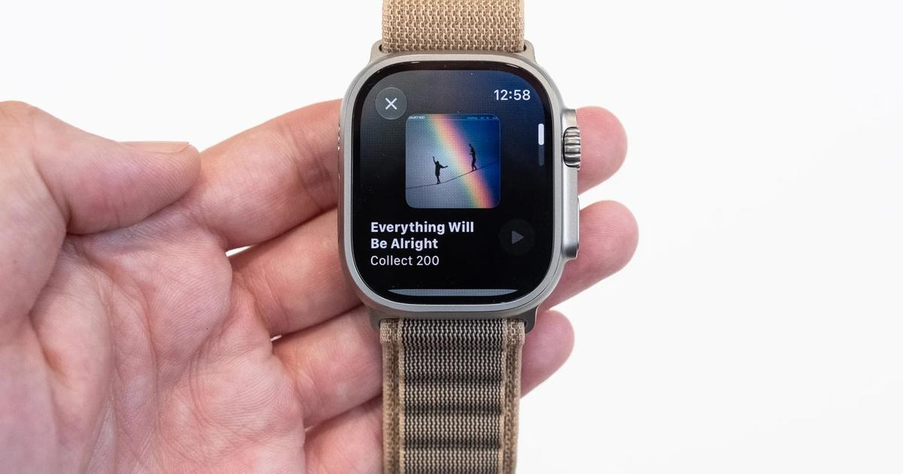
Apple Watch Ultra 4 vs. Watch Ultra 3：チップとバッテリーのアプデが魅力！ | ギズモード・ジャパン
Apple Watch Series 12 vs. Series 11：去年と比べてスペックや機能、どう変わった？
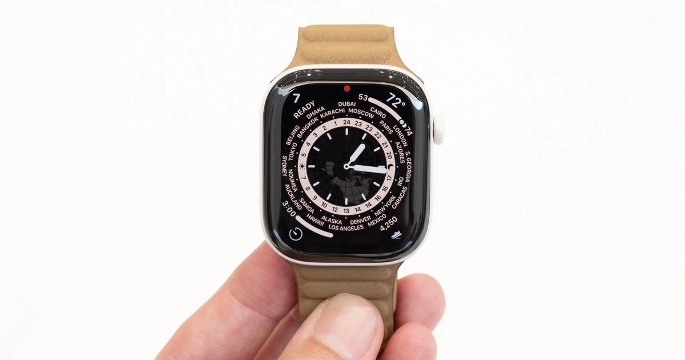
Apple Watch Series 12 vs. Series 11：去年と比べてスペックや機能、どう変わった？ | ギズモード・ジャパン
今月発表？ Nothingがヘッドホンの「Pro」モデルを準備中の噂
今月発表？ Nothingがヘッドホンの「Pro」モデルを準備中の噂 | ギズモード・ジャパン
あるあるすぎる・・・Codex くん（特に Astra ）は本質的にファジーな勾配降下法だろって気がしてくる
hase-takashi
@hasetakashi
仰る通りFable5.1はそちらまで考慮してくれるのと、ゴール・合格を数値で定義しにくいものを上手いことやってくれる印象です。一方Codexは放おっておくとゴールを機械的成功に変換してしまう＆サイドクエストにも流れやすい印象です。このあたりも使い方次第なのかもしれませんが
「シャングリラ・フロンティア〜七つの最強種〜」，事前登録を受付中
https://
4gamer.net/s/G099198.2609
14010
…
・事前登録はApp Store，Google Play，公式サイトで受付中
・キャラクター「SSR【リュカオーンの呪い】サンラク」をはじめとした報酬を用意
・TGS 2026のステージイベント情報も発表
Torishima / INTPさんがリポスト
仰る通りFable5.1はそちらまで考慮してくれるのと、ゴール・合格を数値で定義しにくいものを上手いことやってくれる印象です。一方Codexは放おっておくとゴールを機械的成功に変換してしまう＆サイドクエストにも流れやすい印象です。このあたりも使い方次第なのかもしれませんが
『夕闇通り探検隊』『トワイライトシンドローム』などに強く影響を受けた開発中のホラーADVが話題に。90年代後期の街を探索して怪奇現象の真相に迫る
https://
gamespark.jp/article/2026/0
9/14/172216.html?utm_source=twitter&utm_medium=social&utm_content=tweet
…
開発は初期段階ということで発売はまだ先のようです。気になる方は過去作もチェックしてみてはいかがでしょうか。
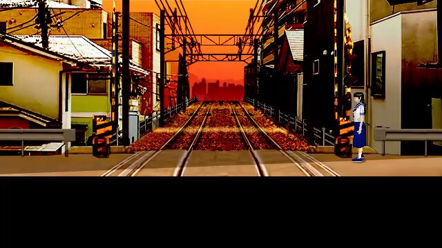
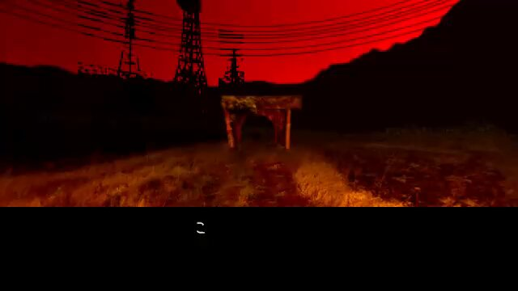
ポン☆潤々さんがリポスト
ジョイポリスに行く虎牙道のプロデューサーへ
3Fのアトラクションでホスト写真が出せるので、是非ぬいちゃんをホストにしてきてください！！
タケルと漣をお連れのお二人は是非指名料とかバトルしてください！！
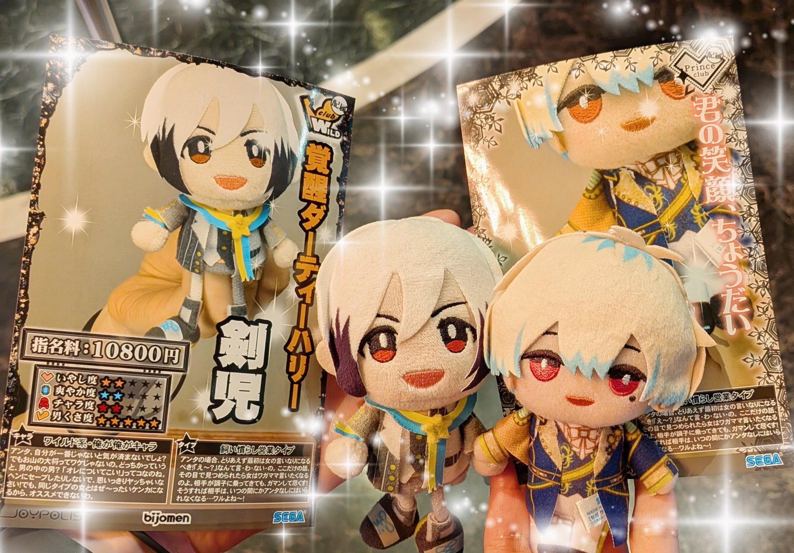
JRと横浜市は保土ヶ谷駅の先にある踏切も即時廃止してくれ
生見尾踏切ありがとーーー！！！おい下がれよ！！！直前横断するなーー！！！！！邪魔なんだよ下がれ！！！＼しょしょしょしょしょしょしょしょーこー／ありがとう生見尾踏切！！！ありがとーーー！！！お前入ってんだよ下がれ！！！！＼コーンギョーコンギョー／さよーならーー！！！！！
さたけさんがリポスト
普通に挨拶してる #precure #tvasahi
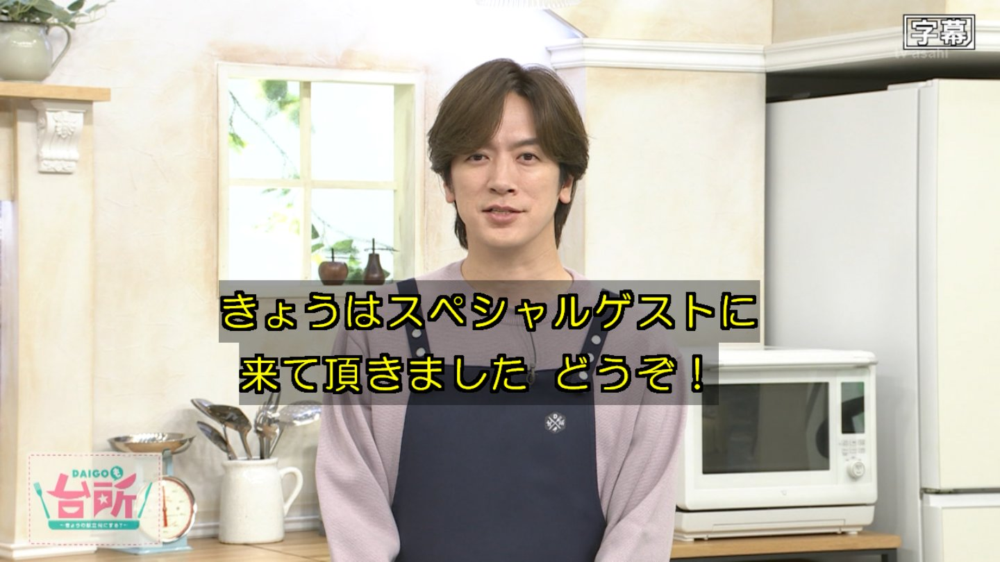
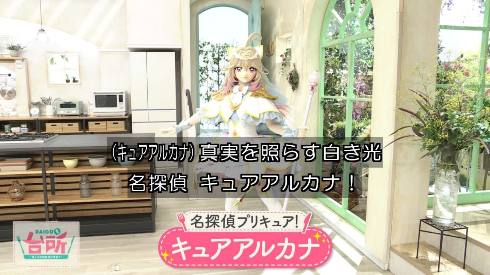
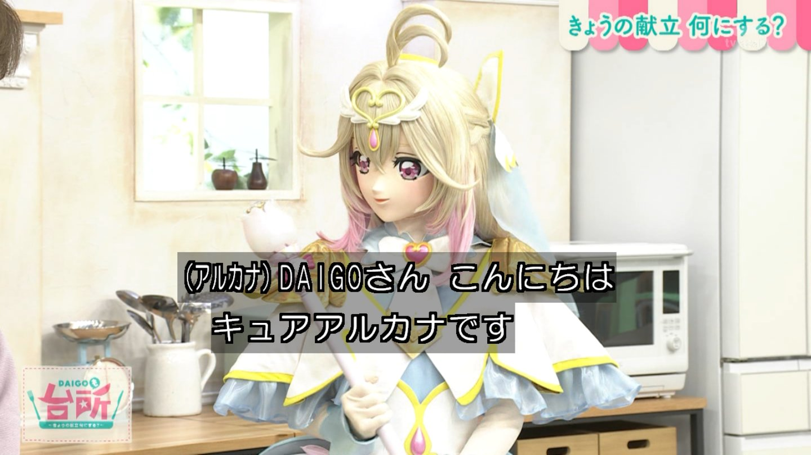
『キングダム ハーツ コレクション [I～III]』ワールド紹介YouTubeショート公開！「アナ雪」など6作品、シリーズ未体験でも楽しめる
https://
gamespark.jp/article/2026/0
9/14/172220.html?utm_source=twitter&utm_medium=social&utm_content=tweet
…
矢野元財務次官「オオカミはすぐそこに来ている」 金利急騰を懸念
矢野元財務次官「オオカミはすぐそこに来ている」 金利急騰を懸念
整理整頓シム「The Grand Book Archive: Tidy Up」，体験版配信開始
https://
4gamer.net/s/G104244.2609
14011
…
・舞台はピクセルアートで描かれる巨大な書庫
・2990冊の本を正しい本棚へ収めていく
・アップグレードを重ね，整理作業を効率化
・体験版は通常プレイで1〜2時間を想定
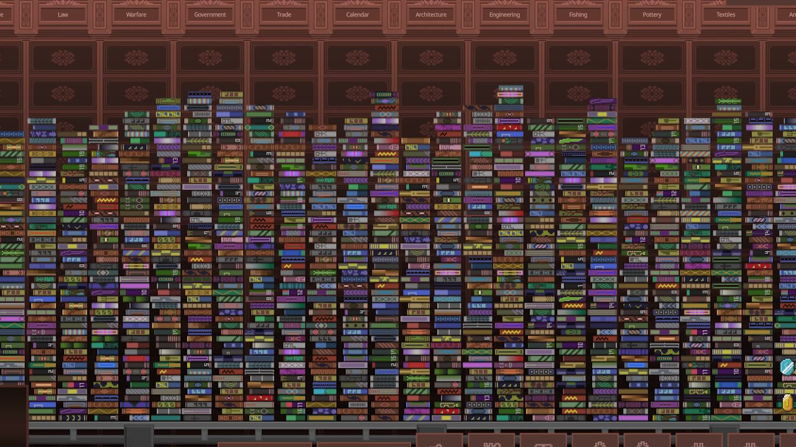
FPS向け製品シリーズ「THE SHOOTER」からガラス製マウスパッドや27インチ1440p液晶ディスプレイが発売に
https://
4gamer.net/s/G094901.2609
14012
…
マウスソールやマウスグリップテープも登場。東京ゲームショウ2026では試遊と先行販売を実施する予定だ
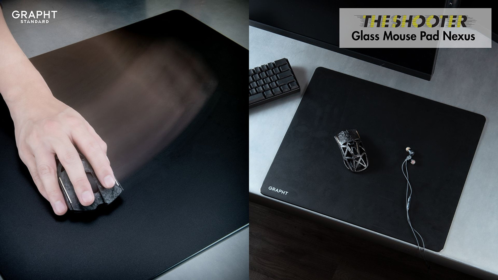
Torishima / INTPさんがリポスト
AIの進歩が非常に悪い方向に進む可能性は2つあり、それを避けなければなりません。
『シャインポスト』公式さんがリポスト
【#豊崎愛生ブログ】
#あきまつり「『シャインポスト！』」を更新しました！
https://
ameblo.jp/toyosakiaki-bl
og/entry-12978686249.html
… #BSF2026 #シャインポスト
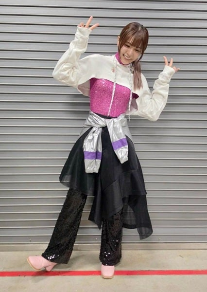
豊崎愛生：『シャインポスト！』
『ディアブロ V』2029年春発売に向け開発元社長が自信示す―Blizzardは「大作を期日通りに世に送り出す会社」と強調
https://
gamespark.jp/article/2026/0
9/14/172219.html?utm_source=twitter&utm_medium=social&utm_content=tweet
…
・ディアブロが勝利した後のサンクチュアリが舞台の最新作
・同じくシリーズ新作のオープンワールドシューター『STARCRAFT』も2030年春に発売予定
ポン☆潤々さんがリポスト
9/18(金)発売！
【PalVerse / STAR WARS】
「スター・ウォーズ」のキャラクターが #PalVerse に登場！
ラインナップはシークレットを含む全7種
▼商品情報
https://
palverse-figure.com/product/produc
t-3542/
…
お見逃しなく✓
#スターウォーズ
@各位
今日の読切漫画は特にオススメです！！（いつもオススメですが…）
野球の話が出てきますが、ルールわからない方でも問題ないです！

滝沢ガレソ
@tkzwgrs
【本日の #滝沢オススメ記事】
ホストやってたけど、普通はサイコパスになれんよ
https://
megalodon.jp/2023-0514-1748
-11/https://anond.hatelabo.jp:443/20230513232056
…
「稼いだ総額10億超」るるたんが語る驚きの稼ぎ方
https://
nikkan-spa.jp/2184879
[読切漫画] SAVIORmetrics
https://
comic-days.com/episode/122074
21983922900006
…
[大盤振舞] 話題作“86本”がなんと100円ポッキリに
なるせひろのりさんがリポスト
「刑事告訴されているから謝れない」…辺野古転覆事故「同志社国際高校」が説明会で見せた“自己保身”と保護者の不信 「準備してきた回答をひたすら読み上げるだけだった」（デイリー新潮） - Yahoo!ニュース
ハア？
「刑事告訴されているから謝れない」…辺野古転覆事故「同志社国際高校」が説明会で見せた“自己保身”と保護者の不信 「準備してきた回答をひたすら読み上げるだけだった」（デイリー新潮） -...
なるせひろのりさんがリポスト
【追記】
12時55分ごろ、任天堂サポートより「Nintendo Switch Online全般」「マイニンテンドー」に関する障害の復旧アナウンスがありました
渡辺浩弐さんがリポスト
【解禁まで、あと5日】
9月19日発売
『iKILL-O』#ィキロ
渡辺浩弐が書き下ろしたのは、殺し屋と少女の物語。
そしてその物語の舞台は「Kカフェ」がモデルになっている
Kカフェでこの物語を手に取る意味や価値をも楽しんでください
リプへ続く

【8年越し日本語対応】古代エジプト舞台の歴史ストラテジー『Egypt: Old Kingdom』Steam版がアップデート―2018年リリースからおよそ8年越しでローカライズ実現
https://
gamespark.jp/article/2026/0
9/14/172218.html?utm_source=twitter&utm_medium=social&utm_content=tweet
…
レベルファイブ発表会のAI演出が物議 「不自然」「内容よりAIが気になる」 日野社長「派手にしたかった」
レベルファイブ発表会のAI演出が物議 「不自然」「内容よりAIが気になる」 日野社長「派手にしたかった」
なるせひろのりさんがリポスト
【ガソスタ廃業加速 自治体どう支援】
ガソリンスタンドの廃業が加速 -- 「近くに給油所がない」時代へ #エキスパートトピ（中村智彦） - エキスパート - Yahoo!ニュース
Torishima / INTPさんがリポスト
雰囲気だけ簡単に伝えると
今：
0.3, 0.5, 4, 5, 7, 7, 7, 8, 10, 10
昔：
2, 2, 2, 3, 4, 4, 4, 4, 7, 25←!?
みたいな感じで、なお
今の4＝画力1＋それ以外の要素3
昔の4＝画力3＋それ以外の要素1
KDDI系新電力社長「蓄電池を無料配布、顧客獲得に手応え」

KDDI系新電力社長「蓄電池を無料配布、顧客獲得に手応え」
頭髪染めたらアレルギー発症、使ったのは「かつら用」
https://
nikkei.com/article/DGXZQO
UD0975D0Z00C26A6000000/?n_cid=SNSTW005&n_tw=1789356005
…
植物由来の「ヘナ」配合のヘアカラー製品を巡り、かつら用なのに頭髪にも使えると受け取れる商品が問題になっています。かゆみなどを発症し、救急搬送された事例もありました。

頭髪染めたらアレルギー発症、使ったのは「かつら用」 被害相次ぐ
Torishima / INTPさんがリポスト
意外と試行錯誤の知見ってネットに転がってるのでケースバイケースなことが多いイメージ。
解像度高い人が考えることってそもそも手法や議論がかなりなされているので、ゼロから組み立てることは少なく、それだけの材料があるならもうあとは執着とトークンによる試行錯誤の問題な気がする。
Torishima / INTP
@izutorishima
どこまでいっても「分かってる解像度の高い人をさらにブーストするツール」だよなあ・・・ x.com/kiyoshi_shin/s…
／
もう応募した？
「Nintendo Switch 2」が1名様に当たる
＼
【応募方法】
「ねとらぼメンバーシップ」（無料）に会員登録＆ログイン→ 記事内の「応募する」ボタンをクリック！
https://
nlab.itmedia.co.jp/cont/articles/
4001071/
…
当選確率アップ！
《さらに当選確率UP》
①
Flashで人気を博した『Happy Wheels』がSteamで9月21日発売。あの“激痛そう”な横スクロールアクション
https://
gamespark.jp/article/2026/0
9/14/172217.html?utm_source=twitter&utm_medium=social&utm_content=tweet
…
ニンテンドーDSの新作エミュ「WideMelon」が登場!!
本作は、3D部分を左右に拡張する本当のワイドスクリーン表示に対応し、さらにスマホをDSの下画面＆タッチコントローラーとして使用可能できるのが特徴。
この時点で、ニンテンドーDSエミュレータの革命に近いンだッッ!!
本当にファンを安心させたいならバンドメンバーは女性で揃えるべき話小倉唯ちゃん見習え見習え見習え(声豚の朝青龍)
なたね
@natane24
おみほはバックバンド3/4としてない信頼はある
腕には別のスマートウォッチつけてるし、Apple Watchまでつけるのもなぁって思ってたから
一瞬オッと思ったけど
これだったら別にスマホでいいのではって思い直したw
Apple Radar
@appleradartwt
Apple Watchのアップグレード
すき家、冷静に考えるとすき焼き牛丼が毎年期間限定なのおかしいよな。すき家のすきって元々はすき焼きからでしょ。スシローで寿司が期間限定みたいなことじゃない？論破したので通常メニューにしません？(すき焼き牛丼すき)
堀大輔さんが”1日30分睡眠のショートスリーパー”の肩書で売っていた１５万円の睡眠商材←これを購入していた人達が５０人以上いるという現実
堀大輔さんが”1日30分睡眠のショートスリーパー”の肩書で売っていた１５万円の睡眠商材←これを購入していた人達が５０人以上いるという現実 : ハムスター速報
ホンダの人事統括部長が求める新卒「困難に向き合い、楽しめる人」
ホンダの人事統括部長が求める新卒「困難に向き合い、楽しめる人」
重文の東大赤門、計12トンの重りで転倒防止 清水建設が挑む耐震改修
重文の東大赤門、計12トンの重りで転倒防止 清水建設が挑む耐震改修
本当は澤田 姫を疑いだなんてしたくないんだ。信じていたいんだ。だから澤田 姫よ、疑いを晴らすためにもここらで一つ脱がないか？？
これで偉い人が文句言ってくるようなら一緒にヤーヤーヤーしに行くので（歌が昔すぎて伝わりにくいボケ）バンナムの現場の人呼んでくださいって気持ちですよ。
コラボページでは各スタッフの仕事や作品紹介もしていて、こういうアニメ現場とコラボした企業コラボは業界を知ってもらう上でも中々良い試みだなと。
今後も増えていくことに期待。
貝さんさん
@morikai3
えんきんプレミアム「薬屋のひとりごとを支える」篇 60秒
アニメ制作チーム(OLM)に密着する試み、面白いコラボ。
https://
youtu.be/f23QNouKz1w?si
=zgIqd1b1chFR0a2f
…
SideMのVOY@GER、エキスポで披露ノルマ達成したと思ったら「記録媒体に残る周年ライブにオリメンで披露しろ。他はやっているぞ」ってケツ叩かれて、でもオリメンはほぼ無理だからVOY@GER文脈ある3人を追加してこれで文句言えんやろオラッ！てしたんだと思っている。
このへんが”演出”の難しさだよなあ カット単位で素晴らしい映像でもその提示がまずいと何も伝わらない
kogu
@koguGameDev
綺麗で丁寧なのに、なんで切った貼った感が出ちゃうんだろう？ カットに繋がりが無くてタイムラインに並んでる感覚というか。アニメを全然見ないから理由がちゃんと分からないんだけど、バラバラに動かした画を時間で並べてて、ひとつの大きな出来事を別々の人が撮影して繋いだように見えてしまう。 x.com/sidodtv/status…
「TGSが5日間になったせいで」生まれたインディー開発者コミュニティが合同出展！『KARATE ROGUE』『アニマロイドガール』など5作品がTGS2026に集合
https://
gamespark.jp/article/2026/0
9/14/172215.html?utm_source=twitter&utm_medium=social&utm_content=tweet
…
Torishima / INTPさんがリポスト
同じ意見。xhighの使い勝手が良すぎるし、なんならなぜかトークンもそこまで食わないので最近ずっとxhigh
Torishima / INTP
@izutorishima
Astra Low だと短気になってて Sol とあんま変わらない印象になっている気がしていて、Astra をちゃんと使う難しいタスクならやっぱ xhigh の方が「手戻りがない」「ブチ切れがない」の２点でいい気もするがどうなんだろうな・・・
えんきんプレミアム「薬屋のひとりごとを支える」篇 60秒
アニメ制作チーム(OLM)に密着する試み、面白いコラボ。
「もっと」夢中になりたいのに、気持ちに目が追いつかない時がある。FANCLはそんな一人ひとりの「もっと」を目の栄養補給で支えていきま...
youtube.com
コラボページにはCMに出演したスタッフへのインタビューも掲載。
https://
fancl.co.jp/pub/ekk_tuk/in
dex_tuk.html?refad=mov&scid=Brd-twtse&utm_source=Brd&utm_medium=Brd-twtse&utm_campaign=Brd-twtse&utm_content=all&argument=gy66XG6S&dmai=a6a8bf97168894
…
女性声優から語られる家族の存在は全て疑えと学校教育で叩き込まれたせいで、澤田 姫が家族とどこに出かけた〜という投稿を見る度に「そんな頻繁に家族と出かける？妙だな……」とコナンくんの顔つきになってしまうのとても辛い
ゆーじさんがリポスト
ありがとうございます！
VITURE Pro 2をご活用いただけるの、とても嬉しいです！
「スーパーAI麻雀」シーズン2でどんな展開が見られるのか、今から楽しみにしています
VITURE Pro 2とともに、ぜひたっぷりお楽しみください！
ゆーじ
@yuujii
VITURE Pro 2セットを@viturejp さんから頂きました。
#スーパーAI麻雀 シーズン2 始まります。
オイオイまじか！？
以前、ビデオ会議映像について画像処理で目の部分を加工してカメラ目線にするというのをなにかがやってたけど
顔の向きはずれてるのに目だけこっち向いてて奇妙になってるみたいなのもあったっけw
Munechika Nishida
@mnishi41
コロナ禍を経て、「ビデオ会議をしても、多くの人はカメラ目線にならないし相手の方も見ていない。なぜなら、画面の上方にカメラがあって目線を合わせるのは大変だから」という体験をした後でもなお、フィクションの中でのビデオ通話ではカメラ目線バッチリな点をどう考えるべきか。
まほよ小説、出版側の当初想定より売れ行き良さそうでなにより。
レスバは弱い。なぜならツイートした時点でツイートこそが絶対不変の正であり議論や返信は必要ないから。
俺、ユーフォ見て泣くオタクとは絶対仲良くなれないと思う。捻くれてないんだろうなと思うから。
劇場版SideMバトルフェスが2週間限定上映ってどこに書いてあるやつ？見つけられない…。
TGS 2026とビームスのコラボコレクション「GAME ARTeee COLLECTION」，9月15日より順次発売
https://
4gamer.net/s/G999110.2609
14007
…
・東京ゲームショウの30周年，ビームスの創業50周年を記念したコレクション
・TGS 2026のメインビジュアルを手掛けるざしきわらし氏が，ゲームキャラクターをモチーフに描き下ろす
なるせひろのりさんがリポスト
「ニンテンドースイッチ」「スイッチ2」の「Nintendo Switch Online全般」でネットワーク障害が発生中。「マイニンテンドー」「Alarmo」も影響
https://
news.denfaminicogamer.jp/news/2609142a
本日10時30分ごろから発生。原因については明らかにされておらず、任天堂は「復旧までしばらくお待ちください」と案内している
ゲームフリークの新作モバイルゲームは，日本全国の天気予報と連動！ 魔法少女が戦う「雨のちハレ女」を発表
https://
4gamer.net/s/G104241.2609
14008
…
天気を力に変え，人々の気持ちを晴らす魔法少女「ハレ女」と，パートナーの「クモリン」が協力し，日本中を明るくしていく物語が展開される
チケット争奪ゲーム「TICKET WARS」，公開中
https://
4gamer.net/s/G104240.2609
14006
…
・チケットを勝ち取るためにリロードを繰り返し，情報を入力
・どれだけ素早く，正確に動けるかが攻略のコツだ
・チケットが売り切れてしまうとリザルト画面が表示される
・リザルト画面では，チケット獲得能力が確認可能
ドイツにはバラがおまけでもらえるスーパーがある
スーパーでサラダを1袋購入→店員が無言で渡してきたのは…… まさかの光景に「これなに？」「ドイツの文化？」
https://
nlab.itmedia.co.jp/cont/articles/
4002902/
…
ガルパに登場するキャラクターたちの日常を描いた４コマ漫画、『もっと！ガルパライフ』（#ガルパラ）を更新しました
第471話「ピアノにある可能性」
今までのお話はこちら→
https://
goo.gl/WRTG7p
#ガルパ
Torishima / INTPさんがリポスト
ガンダムを作る未来があったとはね。
ガンダム公式
@gundam_info
■■■RGプロジェクト■■■
ガンダムシリーズアニメーション最新作
『機動戦士ガンダムRG XARX-ZERO』
《2027年4月テレビ放送決定》
神山健治が描く、リビジョンされたガンダム――。
https://
gundam-official.com/titles/rg-proj
ect/xarx-zero/
…
#XARXZERO #アレックスゼロ
(pronunciation: “Alex Zero”)
Torishima / INTPさんがリポスト
今は経験や知識がブーストするとこも多いだろうけど、これがいつまで続くのかなとも思う。
たとえばこのUEで動かす作業途中の4脚ロボでやってることの経過。
Torishima / INTP
@izutorishima
どこまでいっても「分かってる解像度の高い人をさらにブーストするツール」だよなあ・・・ x.com/kiyoshi_shin/s…
Torishima / INTPさんがリポスト
AI製のクリエイティブって、むしろ「AI製」という1本の評価軸だけで戦わなきゃいけないため、商業に持ち込む場合「界隈のトップに肉薄するクオリティ」がスタートラインにならざるを得ず、「作家性」という別軸を持つ人力のクリエイティブに対してだいぶ不利なんじゃないかと最近思うようになってきた
内田勉 DirecTune.app β公開中
@sidodtv
このAI生成動画、ビックリするほど良く出来てるし、10年前に手描きでこのクオリティを出してたら、アニメ業界に話題になっていたであろう事は間違いない(現在のAI生成動画としても最先端だ)
ここから更にAI生成動画ならではの表現が生まれてくるか？ x.com/Sabitamago/sta…
ポン☆潤々さんがリポスト
VOY@GER、最初オリメンだけで歌っていたのに2番から3人入ってきたの、MOIWのやり方を学習している……と思って面白かった。ブランド単独でカバーでもないのにMOIWするんや
Torishima / INTPさんがリポスト
Astra は、言葉以外の能力が強化されすぎた悲しい化け物。あまりにも能力が高すぎるんだけど言葉が論外
Fable は、高いEQを持った人間の振りをした悲しい化け物。能力も高く、一件言葉が通じるように見えて、やっぱり根底では化け物
なので、悲しい化け物じゃないモデルが必要なんや
erukiti
@erukiti
やっぱり次のGemini Proに期待したいんだよな
Anthropic/OpenAIのモデルは決定的賢くなったバージョンでは「言葉を扱う能力」が悪化している。日本語能力の悪化はOpus-5なりGPT-5系なりが顕著で、最近はgemini-3.8-flashにリライトされるhackが当たり前となった
（余談:
Torishima / INTPさんがリポスト
目的関数を感情と目線、独自言語のみでハックするため異常に相性がいい
やはりリサ過去編が一番尺の無駄だったと思う
ふぇむ(せかんど！)
@000Amaurot
ルカなんかよりリサが全然キャラとして必要性が弱すぎる。真実の愛の光とかいう海中家父長制に縛られ、パパの手足となる実家の姉ちゃんというのはありと言えばありな気もするけど。
ポン☆潤々さんがリポスト
＼続報／
「STAR WARS STORE by BENELIC」が、2026年10月1日(木)より #池袋PARCO にてオープン
オリジナルグッズの一部を公開
オンラインストア と の #STARWARSSTORE にて発売予定
オンラインストアはこちら
https://
benelicstore.com
#スターウォーズ
行きたいけど…仕事なので大人しく労働します。
対戦ありがとうございました。
でも1月のライブには絶対当ててやる！
F-272
@F_272_GBC
お知らせ
急遽、9/27(日)対バンイベントへの出演が決定しました！
ご出演予定であった、とあるバンドさん(シークレットゲスト)のピンチヒッターとなります。
初の対バンイベント、頑張らせて頂きます
e+
https://
eplus.jp/sf/detail/4553…
9/27(日) 吉祥寺ROCK JOINT GB
"Sault Ste. Shoegaze"
『シャインポスト』公式さんがリポスト
ひまわりシンフォニーのドラマCDが発売決定！！！
４人とマネージャーちゃんの物語をどうぞお楽しみに！！！
『シャインポスト』公式
@SHINEPOST_PJ
／
「シャインポスト ひまわりシンフォニー ドラマCD Vol.1」予約スタート！
＼
キャスト
#櫻井もも（≠ME）（琴森 愛莉 役）
#石川由依（東江 凪 役）
#徳井青空（薬師院 亜珠花 役）
#若井友希（南崎 湊 役）
#藤寺美徳（大薗 水希 役）
封入特典
「シャインポスト ひまわりシンフォニー
マジでSideMのオタクが諦めなかったから家庭用ゲーム作るまでになったんだ…
Torishima / INTPさんがリポスト
あ～、私がcodexくん（いやChatGPTか）と仲がいい理由が分かった。
私 : 指示が雑で大枠
C : 指示された枠内で思考
だからか
Torishima / INTP
@izutorishima
Astra くんはめっちゃ賢いんですけど、やっぱ Codex の従来からの癖で「指示された枠を越えて思考できない」みたいなところがあって視野が狭いです
結局 ASD っぽい性格が抜けきってないというか、与えられたタスクや目的関数に超厳密に徹底的にやるのは得意だけど俯瞰したりが弱いというか
Torishima / INTPさんがリポスト
なるほど！ 確かにそこ強い違和感覚えます。
繋ぐ描写の不足は、分割した入力に「その前」の生成が抜け落ちるからかなーと眺めてました。漫画脳なんでコマが足りないというか。
テスラさんがリポスト
『ゆるキャン△』(19)、来月10月9日発売です。
リンと綾乃の２泊３日ツーリング最終章
あｆろ先生休養中…ですが、よろしくお願いいたします！
↓ 初公開書影です ↓
あｆろ【公式】
@afro_2021
『ゆるキャン△』(19)、来月10月9日発売です。
リンと綾乃の２泊３日ツーリング最終章
あｆろ先生休養中…ですが、よろしくお願いいたします！
↓ 初公開書影です ↓
日本経済新聞 電子版（日経電子版）さんがリポスト
老人ホームはまだ早い 元気な高齢者、｢巨人推し｣マンションに殺到

老人ホームはまだ早い 元気な高齢者、｢巨人推し｣マンションに殺到
『シャインポスト』公式さんがリポスト
シャインポストの感想をおしゃべりしたらとても長くなってしまったボイスを送りました
https://
not-equal-me.link.cosm.jp

蟹沢 萌子
@kanisawa_moeko
#BSF2026 in ぴあアリーナMM
本当にありがとうございましたーーー!!°.
最高に眩しい2日間でしたーー!
踏み出す一歩は、いつだって皆さんの愛でできてましたね感謝の気持ちでいっぱいです!
TINGSが シャインポストが 大好きです!!
また会えますように… #シャインポスト
画像はこちらからの引用で、大元は『みんなの日本語(大家的日语)』のDVD実写動画。登場人物をなぜか全員男性に改変したものっぽいです。
車両は新幹線ながらが一応日本っぽいのに窓口は中国っぽい。四国の路面電車みたいな線路もあるけど細かいことを気にしたらあかんですね
-, 视频播放量 882、弹幕量 0、点赞数 10、投硬币枚数 1、收藏人数 3、转发人数 1, 视频作者 苏格拉底猫, 作者简介 ，相关视频：大家的日语第9课对话：我就不该打电话，日语场景会话6 — 结账，新标准日本语初级第34课，当日本人听到对方说英语...，为什么日本少妇请你喝茶千万别去？！，日 语 怎 么 骂 人 呢？，在日本千万不要随便叫服务员，当你叫日本人“美女”，他们的反应竟是...
bilibili.com
輿水畏子さんがリポスト
本日18時更新予告です。
#StafferRetro
なるせひろのりさんがリポスト
『ガンダム』新作、来年4月テレビ放送へ
「機動戦士ガンダムRG アレックス ゼロ」
https://
oricon.co.jp/news/2480136/f
ull/?utm_source=Twitter&utm_medium=social&ref_cd=jstw003
…
⠀
企画：サンライズ
原作：矢立肇、富野由悠季
監督・シリーズ構成：神山健治
SF設定監修：円城塔
ガンダムデザイン：清水栄一
キャラデザ原案：STATO
キャラデザ・総作監：高須美野子
Torishima / INTPさんがリポスト
アクションの大半が「奥と手前」方向ばかりで、空間内での２キャラの位置取りを理解させるカットの大半が省略されているからだと思いますよ（壁にひっついているところを回り込むカットしかない）。
なるせひろのりさんがリポスト
＼2027年4月テレビ放送決定！／
ガンダムシリーズアニメーション最新作
『機動戦士ガンダムRG XARX-ZERO』
TAMASHII NATIONS では「GUNDAM UNIVERSE」と「METAL ROBOT魂」にて商品企画進行中です！
アニメ、商品、それぞれの続報にご期待ください！
#ガンダムフィギュア #XARXZERO #アレックスゼロ
『ポケモン』のゲームフリーク完全新作『雨のちハレ女』発表！現実の天気がゲーム内に影響、魔法少女「ハレ女」とその相棒「クモリン」たちの物語を描く
https://
gamespark.jp/article/2026/0
9/14/172214.html?utm_source=twitter&utm_medium=social&utm_content=tweet
…

稲城梨、めっちゃデカくて甘いので毎年直売所で買いまくってる
今年はシーズンちょうど終わったところだね(´･_･`)
ドムドムハンバーガー
@domdom_pr
稲城市の名産品「梨」のぞうさんだぞう
ドムドムが一緒に種まきして、
ジャイアンツタウンで実りました
詳細はこちら
https://
tokyo-giants-town.yomiuriland.com/news/2026/09/n
ews260914-1.html
…
Torishima / INTPさんがリポスト
今期のアニメ(さよならララ、天幕のジャードゥーガル、攻殻機動隊)はそこら辺の技術をロストテクノロジーにしないぞ、って意思を強く感じてすごかったっす
Yuichiro Iida
@Hh3Ks
アニメ作ってない人たちに,「現行アニメの上澄は全体的にクオリティが向上したと言える. 一方で, ‘80年代後半〜’90年代, それどころか‘00年代前半あたりの“理論値”的な画面を再現するのは, 一部の例外を除いて現実的にほぼ不可能」
と伝えると結構驚かれる. それでも頑張ることには変わりはないけど...
すっごい観たくなったくぎゅううううううううっ！！！
SOW＠
@sow_LIBRA11
今期アニメの「グロウアップショウ」というサーカスを舞台とした作品がありまして、団長がCV釘宮理恵さんの年齢不詳なロリキャラで、「まぁあるよな」と思ってたら「後天性での脳下垂体（成長を司る脳の部位）の働きが少ない」人物と明かされ、「大人になれなかった身体的事情持ち」で、それゆえ肉体的
100年間使い続けられる「固体型原子力電池」発売へ
100年間使い続けられる「固体型原子力電池」発売へ | ギズモード・ジャパン
確かにルーデウスみたいにタイムスリップしなくても、「数十年後の俺ら」みたいなおっさんがTLにたくさんいるから安心だ。
【静かな祈り】★4 巡音ルカには
ライブ衣装『アフェクション・トリッパー』が付いてきます
※詳細はお知らせをご確認ください
#プロセカ
「Step with Smilesガチャ」開催中
登場する★4メンバーを紹介
【静かな祈り】★4 巡音ルカ
#プロセカ
深いオタク、真のオタク、高みのオタクなどの語彙を自由自在に使いアテンションエコノミーの時代を泳ぎ切ろう。
【全力いんぐりっしゅ！】★4 鳳えむには
ライブ衣装『ディライト・トリッパー』が付いてきます
※詳細はお知らせをご確認ください
#プロセカ
「Step with Smilesガチャ」開催中
登場する★4メンバーを紹介
【全力いんぐりっしゅ！】★4 鳳えむ
#プロセカ
「Step with Smilesガチャ」開催中
登場する★4メンバーを紹介
【憧れを焼き付けて】★4 草薙寧々
#プロセカ
【憧れを焼き付けて】★4 草薙寧々には
ライブ衣装『アスピリング ・トリッパー』が付いてきます
※詳細はお知らせをご確認ください
#プロセカ
貝さんさんさんがリポスト
初版部数変更で、用紙確保のために発売日が遅れるって初めて聞いた気がする……w
星海社
@seikaisha
【お知らせ】＜小説『魔法使いの夜』下巻の発売日変更およびスピン（しおり紐）色味変更について＞
星海社FICTIONSより刊行中の小説『魔法使いの夜』につきまして、読者の皆様に2点お知らせがございます。
1. 下巻の発売日を11月10日（火）に変更いたします。
2.
「AIで効率化しても仕事が増えるだけ」──月○時間浮かせても報告しない社員たち 広がる“AI版静かな退職”

「AIで効率化しても仕事が増えるだけ」──月○時間浮かせても報告しない社員たち 広がる“AI版静かな退職”
譜面ボーイズとマッチングできたプレイヤーの皆様に「マッチング界のカリスマ」の称号をプレゼントいたしました。次回ログイン時に獲得できます。
※獲得済みの方には付与されません。
#譜面ボーイズと全国対戦
チュウニズム公式
@chunithm
【全国対戦で『譜面ボーイズ』と対戦しよう】
9/11(金)の17時30分～20時30分、全国対戦に譜面ボーイズ達が参加します！見事マッチングしたプレイヤーには「マッチング界のカリスマ」の称号をプレゼント！
メンバーは後日お知らせするよ！ x.com/chunithm/statu…
1-shot より後にどんどん詰めていくと真価を発揮するという話なので今後が気になる
Astra Low だと短気になってて Sol とあんま変わらない印象になっている気がしていて、Astra をちゃんと使う難しいタスクならやっぱ xhigh の方が「手戻りがない」「ブチ切れがない」の２点でいい気もするがどうなんだろうな・・・
セガのアーケード基板「MODEL2」のゲーム全てを、PCへ勝手移植するプロジェクトが始動!!
本作は、ゲームのプログラムをPCで直接実行できる形に変換し、さらに3D描画、TGP、タイルマップ、I/Oなど、MODEL2の基板そのものも再現。
9.5周年記念楽曲ミッション！開催中
9.5周年を記念し追加される楽曲でライブをすると「コイン」をGETできますよ
開催期間は10月10日(土)14:59まで
9.5周年を記念し追加される楽曲は画像をチェック
ぜひプレイしてくださいね
#バンドリ #ガルパ
【9/17(木) 『クラッシュフィーバー』コラボイベント復活！】
9/17(木)より、『クラッシュフィーバー』のイベントマップが復活！
イベントでは「クラッシュフィーバー」のキャラクターやネームプレートが再びゲットできます！
https://
info-chunithm.sega.jp/12698/
貝さんさんさんがリポスト
【お知らせ】＜小説『魔法使いの夜』下巻の発売日変更およびスピン（しおり紐）色味変更について＞
星海社FICTIONSより刊行中の小説『魔法使いの夜』につきまして、読者の皆様に2点お知らせがございます。
1. 下巻の発売日を11月10日（火）に変更いたします。
2.
大韓航空がスターリンク導入、東アジア大手初 機内Wi―Fi無料に
大韓航空がスターリンク導入、東アジア大手初 機内Wi-Fi無料に
就職氷河期おひとり様「家借りるのも大変」 見えぬワンルーム8畳の先
https://
nikkei.com/article/DGXZQO
UD1346V0T10C26A7000000/?n_cid=SNSTW005&n_tw=1789346502
…
家賃は月7万円、壁が薄く隣人のいびきが聞こえる──。
毎月15万円ほどの手取りで暮らす50代女性。次の住まいに求めるのは、広さより「誰かが近くにいる安心」。

就職氷河期おひとり様「家借りるのも大変」 見えぬワンルーム8畳の先
◈✧─────────────────────────✧◈
シャインポスト BRiGHT STARS FESTIVAL 2026
キッチンカーコラボドリンク継続販売決定！
◈✧─────────────────────────✧◈
#BSF2026 キッチンカーで販売したコラボドリンクの継続販売が決定！

ミスドの箱で作った「パスケース」がオシャレ
“ミセス”のミスド箱をチョキチョキ切って、縫い合わせると…… 驚きの完成品に「見てビックリ!!」「天才ですか？」
https://
nlab.itmedia.co.jp/cont/articles/
3997545/
…
つば二郎@きいちゃんすこすこ侍さんがリポスト
オリジナルチキンと交換できるデジタルKFCカードが当たる
参加者の数だけ当選者数もUP
参加方法
①
@KFC_jp
をフォロー
②この投稿をリポスト
さらに #ケンタが食べたい食べさせたい と「食べたい部位」をつけて引用リポストで当選確率UP！
部位の画像はツリーへ
ゲーマーの夢“全部乗せ”で検証！「Raider-16-Max-HX-B2WI-2660JP」で妥協無しのPCゲーミングを体験してみた
https://
gamespark.jp/article/2026/0
9/14/172213.html?utm_source=twitter&utm_medium=social&utm_content=tweet
…
#PR
【いいね＆引用リポストの手順】
1，ポスト下部の「いいね」ボタンをタップ
2，「リポスト」ボタンをタップ
3，「引用する」をタップ
4，コメント欄にあなたの思いを綴ってください
※応募時は手順の（1）（2）（3）すべてを行う必要があります
※抽選作業は応募〆切後に行います。その後は，4Gamerを運営するAetas株式会社が管理するフォームにて，当選者の発送先情報を登録して頂いた後，賞品を発送します。成りすましアカウントにはご注意ください
／
4Gamerプレゼントの日！～特別編～
買い切り型クラウドストレージ「myHPcloud 1TBストレージ」を抽選で1名様にプレゼント【PR】
＼
応募期間：9月28日12：00まで
▼応募手順
（1）
@myHPcloudJP
と
@4GamerNews
をフォロー
（2）このポストをいいねして，引用で「myHPcloud
「機動警察パトレイバー the Case Files」，PS5向けDL版でアーリーアクセスを開始
https://
4gamer.net/s/G099296.2609
11043
…
・「機動警察パトレイバー」の名シーンを追体験できるPC，PS5向け3Dアクションゲーム
・「機動警察パトレイバーEZY」より，「イングラム・プラス」がDLCとして配信予定
━━━━━━━━━━━━
#楽園追放
心のレゾナンス
#京まふ2026
━━━━━━━━━━━━
今週末開催の京まふでは
3F【楽園追放展示コーナー】が登場
※
現在福岡にある1/1ガブリエルも
展示に伴いこちらに移動します
ムビチケ販売
『シャインポスト』公式さんがリポスト
◈✧─────────────────────────✧◈
【シャインポスト BRiGHT STARS FESTIVAL 2026】
キッチンカーコラボドリンク継続販売決定！
◈✧─────────────────────────✧◈
キッチンカーで販売していたコラボドリンクが
ポン☆潤々さんがリポスト
商品情報
10月16日(金)発売
#WSブラウ
ブースターパック『少女☆歌劇 レヴュースタァライト』
に収録される
“星見 純那”
のカードを公開
今年新たに新規描き下ろしイラストが追加された他の舞台少女も
「レアリティ：CP」で登場予定です
今後の情報にご注目ください
『超かぐや姫！』公式さんがリポスト
『超かぐや姫！』ULTRA 4DX上映レポート ヤチヨがあなたを包み込む、ツクヨミへの“フルダイブ”体験
https://
kai-you.net/article/96314
いよいよ特別フォーマット上映がスタートする『超かぐや姫！』。KAI-YOUでは“最高のパーティー”のULTRA 4DX版を先行体験。結論……何周もした人“こそ”観に行きましょう
【9/17(木) 『クラッシュフィーバー 第二弾』コラボイベント開始！】
9/17(木)より、「Colossus」が登場！
イベントでは「クラッシュフィーバー」のキャラクターやネームプレート、ステージ背景がゲットできます！
https://
info-chunithm.sega.jp/12698/
◈✧─────────────────────────✧◈
シャインポスト BRiGHT STARS FESTIVAL 2026
事後物販開催決定！
◈✧─────────────────────────✧◈
#BSF2026 ライブグッズの事後物販が決定いたしました！
9月19日（土）から10月4日（日）まで
なるせひろのりさんがリポスト
■■■RGプロジェクト■■■
ガンダムシリーズアニメーション最新作
『機動戦士ガンダムRG XARX-ZERO』
《2027年4月テレビ放送決定》
神山健治が描く、リビジョンされたガンダム――。
https://
gundam-official.com/titles/rg-proj
ect/xarx-zero/
…
#XARXZERO #アレックスゼロ
(pronunciation: “Alex Zero”)
『シャインポスト』公式さんがリポスト
＼アニメ『#シャインポスト』TVer配信／
TVerで第6話〜第12話の一挙配信
楽しんでいただけましたか？
好評につき本日からもう一度
TVerで第1話から順次配信決定
TVerはこちらから
https://
tver.jp/series/sr57z8h
u31
…
『シャインポスト』公式
@SHINEPOST_PJ
／
「シャインポスト BRiGHT STARS FESTIVAL 2026」開催記念
TVアニメ「シャインポスト」TVer配信中
＼
#BSF2026 本日Day.2開催
好評につき、明日9月14日からもう一度TVerで第1話の配信決定！
https://
tver.jp/series/sr57z8h
u31
…
#シャインポスト
このあと15:00に追加予定のカバー楽曲『千の翼』の一部を先行公開！お楽しみに
『千の翼』
歌：Afterglow
※譜面は開発中のものです
#バンドリ #ガルパ
『シャインポスト』公式さんがリポスト
◈✧─────────────────────────✧◈
【シャインポスト BRiGHT STARS FESTIVAL 2026】
事後物販開催決定！
◈✧─────────────────────────✧◈
昨日のライブで発表いたしましたライブグッズの事後物販が決定いたしました！
THEキャラ@公式
@thechara_2014
◈✧───────────────────✧◈
TVアニメ『シャインポスト』
POP UP SHOP 開催決定
◈✧───────────────────✧◈
夏のコミックマーケットで販売した『TINGS』新規描き下ろしの商品の他、新規グッズを展開予定です
─────✩₊⁺⋆⋆⁺₊✧─────
映画『超かぐや姫！』
特別フォーマット版特報 公開中
───────────────
“そんならかぐや、もう1回！”
9月18日(金)より特別フォーマット＆通常版復活上映
#超かぐや姫
隔離したコミュニティは興味の分断/同調を起こし、学歴も隔離コミュニティのひとつという話かな
ただ個別のテレビとかの話は高学歴かどうかそのものとは独立していそう
もも
@momo_ollife
ふと思ったんだけど
「高学歴の人が低学歴の人と同じ職場で働くと
話が合わなくて辛い」って言うけど
高学歴の人はテレビとか音楽の話をしないってこと？
つば二郎@きいちゃんすこすこ侍さんがリポスト
◤ #マブラヴ シリーズ100万本突破記念！
お好きなタイトルがもらえる
フォロー＆リポストキャンペーン開催！ ◢
販売累計100万本突破を記念して、Steam販売中のマブラヴシリーズ全12タイトルよりお好きなゲームのSteamキーをプレゼント!!
■参加条件
① 本アカウントをフォロー
②

『ハニー』全巻「100円」セール！全8巻「4,344円」→「800円」！平野紫耀さんが初主演で映画化された少女漫画！不良のピュア男子との恋愛を描く激甘ラブコメ！
『ハニー』全巻「100円」セール！全8巻「4,344円」→「800円」！平野紫耀さんが初主演で映画化された少女漫画！不良のピュア男子との恋愛を描く激甘ラブコメ！ - オレ的ゲーム速報@刃の記事ページ
jin115.com
米アンソロピック、7〜9月も調整後営業黒字の見通し FT報道
米アンソロピック、7〜9月も調整後営業黒字の見通し FT報道
日経平均午前512円安、三重苦でAIに売り ソフトバンクG一時13％安
日経平均午前512円安、三重苦でAIに売り ソフトバンクG一時13%安
キオクシアＨＤ株価一時9.8％安 ＡＩ開発の鈍化懸念が広がる
キオクシアHD株価一時9.8%安 AI開発の鈍化懸念が広がる
Torishima / INTPさんがリポスト
んーこれの分からないところは、そもそも「蒸留」にお上が本当に一枚噛んで無かったのかどうかのところなんだよな。
Torishima / INTP
@izutorishima
でもこれで DeepSeek や Kimi のトップを更迭したら中華 AI が一気に落ちぶれるわけだがメンツとどっちを取るんだろう・・・ x.com/ImAI_Eruel/sta…
中国で「AIショートドラマがブーム！」とか「バブルが弾けた！」などと聞いても完全に他人事としてスルーしてたら、「海外で一番有名な日本語教科書が魔改造されてBL化した！」と妻がｷｬｯｷｬしてたのでつい軽い気持ちで覗いてしまう。
これは大人でも脳死でドパガキ化して見続けちゃうね……
昨日の「連邦オフ会」にご参加の皆様、本当にありがとうございました
大変楽しかったです
当日「参加したけど手土産テキストを貰い忘れた!!」or「手土産テキストのQRコードを撮影し忘れた!!」という方は、当方宛にDMをいただければ、3つの地下ゲームテキストのURLをお送りさせていただきます
CD販売枚数が急増…でも音楽聴くためでないという現実
CD販売枚数が急増…でも音楽聴くためでないという現実 | ギズモード・ジャパン
神戸物産、株価一時6.2％高 11〜７月期は営業増益確保
神戸物産、株価一時6.2%高 11〜7月期は営業増益確保
「悪用されそう」──メルカリ「限定公開」機能、SNSで物議 同社に対策を聞いた
「悪用されそう」─―メルカリ「限定公開」機能、SNSで物議 同社に対策を聞いた
マイネームイズさんがリポスト
マイセカイに新たな家具を追加しました
「まじゅうけんきゅうしつシリーズ」を追加（7種）
「おはなとおひるねシリーズ」を追加（7種）
※詳細はお知らせをご確認ください
#プロセカ
下記楽曲のアナザーボーカルver.を追加
「偽物人間40号」
東雲彰人
青柳冬弥
「街」
鏡音リン
※詳細はお知らせをご確認ください
#プロセカ
飲食料品企業の3割が消費減税で増益 生団連調査、外食は2割が減益
飲食料品企業の3割が消費減税で増益 生団連調査、外食は2割が減益
題字の伸ばし棒が虎のしっぽになっていないから察しがいい人は気付くのかもしれない
なるせひろのりさんがリポスト
帯状疱疹ワクチン、本当に50歳になったら、すぐに打った方がいいよ。後遺症が酷すぎて、クオリティ・オブ・ライフを落とされてしまう。
シルバーウィークは稚内行くか
走る人参(気象予報士)
@Runninzin
9/3~9/12の日照時間（10日間）
奥日光 1.1時間
大分 2.6時間
浜松 3.8時間
東京 3.9時間
静岡 4.3時間
前橋 4.8時間
横浜 4.8時間
…
稚内 76.0時間
父島 86.6時間
『ディアブロ IV』今後の拡張パックは予定なし？「憎悪の物語」は語り終えたと開発者語る―長期サポートは継続
https://
gamespark.jp/article/2026/0
9/14/172212.html?utm_source=twitter&utm_medium=social&utm_content=tweet
…
ドリキャスの大名作『スペースチャンネル5』が、遂にWindows/Linux/macOSに勝手移植!!
本作は、16:9ワイド表示、60Hz向けフレーム補間、高解像度化、テクスチャーMOD、Steam Inputなどに対応し、様々なOS上で動作可能。
本作の勝手移植を待っていた人は多い筈だッッ!!
https://
github.com/ZoomiesZaggy/S
pace-Channel-5
…
犬を飼うと認知症リスク低減 国立環境研が公表、医療･介護費を抑制
犬を飼うと認知症リスク低減 国立環境研が公表、医療･介護費を抑制
日本経済新聞 電子版（日経電子版）さんがリポスト
膵臓がんにピロリ菌関係か、抗体値高いほどリスク 愛知がんセンター
膵臓がんにピロリ菌関係か、抗体値高いほどリスク 愛知がんセンター
ポン☆潤々さんがリポスト
『劇場版 アイドルマスター SideM F＠NTASTIC BATTLE FES ～Who goes first～』が11月20日より全国劇場で上映決定！
#SideM #劇場版SideMFANFES_WGF
https://
pashplus.jp/anime/495389/
315プロダクションのアイドル達が挑むのは、本気のパフォーマンスでぶつかり合うバトルフェス！
「アイドルマスター SideM」シリーズ初の家庭用ゲームプロジェクトが始動
https://
4gamer.net/s/G104236.2609
14003
…
・Switch2/Switchが対応機種
・ジャンルは“アイドルプロデュース＆スケジューリングアドベンチャー”
・本作のための完全新規ストーリーを収録
・1年後の大型ライブに向けて活動する
これがあってからちゃんと全部人間だと思ってサポートチャットしてまふ
【お知らせ】
2026/9/15（火）にApple社より配信が予定されている「iOS 27」、「iPadOS 27」につきまして、現在、動作状況の確認を行っております。
OSをアップデートされた場合、アプリが正常に動作しない可能性がございます。
初代プレステの名作『アーマード・コア』が、Windowsに勝手移植!!
本作は、開発者の方から詳しい説明がされていない為に、どんな機能が搭載されていのかは不明だが、アーマード・コアシリーズが勝手移植されたは、今回は初めてなので、紹介してみようと思った次第。
https://
github.com/omegakatana92/
Armored-Core-Recomp/releases/tag/v1.0.0
…
去年43万で買ったけど、メルカリの中古は売ってる在庫自体がかなり少なくなってて、余裕で２倍以上の価格で売れそう
なゆえんじん
@nayuengin
5090、もはや稀少価値高すぎて値段の上がり方が遊戯王カードじみてきた x.com/izutorishima/s…
最近はこの壁を自覚した上で、そもそもやれることが無限に広がりすぎてるので、自分のやりたいことをちゃんと俯瞰視した上で、身の丈にあった程度で選択と集中して何か取り組むのが大事なのかなあとか考えてます
seichi
@seichi25
格差というか才能と同レベルの「超えられない壁」が創設されてしまった感 x.com/izutorishima/s…
Torishima / INTPさんがリポスト
5090、もはや稀少価値高すぎて値段の上がり方が遊戯王カードじみてきた
Torishima / INTP
@izutorishima
まじで去年秋に5090を買ってキープしておいた判断が無限にスケールしているな・・・最悪財産に困っても買った時以上の値段で売れそう x.com/AUTOMATONJapan…
Torishima / INTPさんがリポスト
格差というか才能と同レベルの「超えられない壁」が創設されてしまった感
Torishima / INTP
@izutorishima
どこまでいっても「分かってる解像度の高い人をさらにブーストするツール」だよなあ・・・ x.com/kiyoshi_shin/s…
Torishima / INTPさんがリポスト
綺麗で丁寧なのに、なんで切った貼った感が出ちゃうんだろう？ カットに繋がりが無くてタイムラインに並んでる感覚というか。アニメを全然見ないから理由がちゃんと分からないんだけど、バラバラに動かした画を時間で並べてて、ひとつの大きな出来事を別々の人が撮影して繋いだように見えてしまう。
内田勉 DirecTune.app β公開中
@sidodtv
このAI生成動画、ビックリするほど良く出来てるし、10年前に手描きでこのクオリティを出してたら、アニメ業界に話題になっていたであろう事は間違いない(現在のAI生成動画としても最先端だ)
ここから更にAI生成動画ならではの表現が生まれてくるか？ x.com/Sabitamago/sta…
ゲームキューブの名作『スーパーマリオストライカーズ』が、PCに勝手移植!!
本作はなんと「日本語版のディスク」に対応!!
更に、16:9ワイド／ウルトラワイド、高解像度化、60fps以上の高フレームレート、4x MSAA、16x異方性フィルタリングなどを実装している。
『ディアブロ IV』新シーズン「獄遺継承」9月16日到来！過去作の敵と戦える「醒めやらぬ悪夢」や転生システムが追加、2027年には新クラス「アマゾネス」も登場
https://
gamespark.jp/article/2026/0
9/14/172210.html?utm_source=twitter&utm_medium=social&utm_content=tweet
…
ニンテンドースイッチ2版も9月16日にリリース！
沖縄知事選に当選の古謝玄太氏、辺野古移設巡って担当課の名称変更も
https://
nikkei.com/article/DGXZQO
JC141200U6A910C2000000/?n_cid=SNSTW005&n_tw=1789352037
…
古謝氏は米軍普天間基地の名護市辺野古移設を容認する立場。県庁の「辺野古新基地建設問題対策課」についても、組織の見直しを進める考えを示しました。
沖縄知事選に当選、古謝氏｢徐々に実感｣ 辺野古は担当課の名称変更も
超エキサイティングな気配！ボールを相手のゴールにシュゥゥする最大4人の対戦ゲーム『超エキサイトボール』開発中―『とんかつ食堂シミュレーター』クリエイター新作
https://
gamespark.jp/article/2026/0
9/14/172211.html?utm_source=twitter&utm_medium=social&utm_content=tweet
…
どこか見たことのあるシルエットのフィールドでボールを相手のエリアにフリッパーで玉を送り込みます。
日本経済新聞 電子版（日経電子版）さんがリポスト
ティアフォー加藤真平社長「自動運転半導体、NVIDIAの1強崩す」
ティアフォー加藤真平社長「自動運転半導体、NVIDIAの1強崩す」
就職氷河期おひとり様「家借りるのも大変」 見えぬワンルーム8畳の先
就職氷河期おひとり様「家借りるのも大変」 見えぬワンルーム8畳の先
先日紹介した「勝手移植なグランツーリスモ2」は、ワイドスクリーン、60fpsなどの方向に機能を振っている
それらに対し本日紹介した「勝手移植なグランツーリスモ2」は、当時では不可能なった「インターネット経由でのオンライン対戦」に機能を振っている
なので勝手移植は面白いと思うンだッッ!!
なるせひろのりさんがリポスト
訃報：音楽プロデューサー／音楽ライター、ラジオDJの鷲巣功氏がご逝去されました。
https://
p-vine.jp/news/20260914-
102038
…
あわせて読みたい②
滝沢ガレソ
@tkzwgrs
【朗報】狩野英孝さん、またもや名シーンを残す
#バイオハザード x.com/tkzwgrs/status…
ラッシュデュエルの方でもディアベルスターのオバフレあるし、なんか今シーズンの顔ですね
カッコいい！！！！
あわせて読みたい①
滝沢ガレソ
@tkzwgrs
【朗報】狩野英孝さん、謎のパワーによって「世界で初めてツイートした人」の称号を強奪
これまで世界初とされていた記録(2006年)を一気に14年も塗り替えることに成功
(※1992年の狩野英孝さんは10歳) x.com/kano9x/status/…
【保存推奨】メキシコ政府さん、東京のメキシコ料理店7店を“ガチメキシカン”に認定
・一部の限られた店のみが得られる“Sello M”認証
・本格的料理∕伝統的食材と調理技法∕経験豊富なシェフを兼ね備えた店のみを認定
・日本で初めて東京で7店、千葉で1店が選出
↓↓以下リスト↓↓
①下北沢「テピ
アイス×北海道の海の幸 甘さと塩気が後をひく
https://
nikkei.com/article/DGXZQO
UC048400U6A900C2000000/?n_cid=SNSTW005&n_tw=1789302100
…
留萌市のルモンドはソフトクリームの上に数の子を1本。「奇をてらったのではない。本気でおいしいものをつくった」。他地域でも水産物と職人技が掛け合わさった商品が生まれています。
ソフトクリームに数の子1本、ジェラートには？ 北海道の職人技競う
初代プレステの名作『グランツーリスモ2』が、オンライン対戦を搭載しPCへ勝手移植!!
本作は、「インターネット／LANのオンライン対戦機能」を実装し、リレーサーバー経由での接続も可能
更に、ロビーやルーム作成、プレイヤー人数設定など行った上で対戦ができるぞッッ!!
https://
github.com/ianitsky/gt2-m
ultiplayer
…
さらなる値上げの前に…2026年のおすすめPCを用途別に紹介
さらなる値上げの前に…2026年のおすすめPCを用途別に紹介 | ギズモード・ジャパン
Torishima / INTPさんがリポスト
同時に, 今でしかできない画面もたくさんあり, アニメは普遍的に面白いものだし, それでいいと思っている.
ただ, 当時のアナログ縛りの中で生まれた, 天才的でありながら草の根的でもある絵作りは, やはり日式手描きアニメの本質のひとつだと思う. 何度見ても最高.
お前もアニメを作らないか.
ポン☆潤々さんがリポスト
【新作】『アイドルマスター SideM』家庭用ゲームは“315 PASSION CONTENTS”と地続きの世界線で新たな物語を紡ぐアドベンチャーゲーム【独占インタビュー】
https://
famitsu.com/article/202609
/87571
…
実現できたのはプロデューサーの熱い応援があったからという本作の開発経緯や注目ポイントなどをスタッフ陣に直撃。
Access Accepted第872回：AIが加速させるゲーム供給過多，冷めていくゲーマーの心と財布
https://
4gamer.net/s/G003691.2609
12004
…
Steamのウィッシュリストが「セール待ちメモ」と化した供給過多の時代を生き抜く，初日の売上に依存しないロングテール戦略を考えてみたい
輿水畏子さんがリポスト
【更新情報】「CARDニュース(OCG)」更新！
コナミスタイルとサテライトショップ限定商品！ 『COMPLETE FILE －罪宝狩りの悪魔－』が発売決定！
#遊戯王 #OCG
https://
yu-gi-oh.jp/news/tbohs26ga/
ロシアの弱さが招く危険 プーチン氏の無謀なNATO挑発、CIA警告

ロシアの弱さが招く危険 プーチン氏の無謀なNATO挑発、CIA警告
ポン☆潤々さんがリポスト
『THE IDOLM@STER SideM 11th STAGE～EVER EVER＠FTER～』
2日間ありがとうございました！
今までのライブとは全く違う雰囲気となったのではないでしょうか？
発表も盛りだくさんでアイドルマスターSideMの今後がよりいっそう楽しみですね！（深町）
#SideM
Torishima / INTPさんがリポスト
やっぱり次のGemini Proに期待したいんだよな
Anthropic/OpenAIのモデルは決定的賢くなったバージョンでは「言葉を扱う能力」が悪化している。日本語能力の悪化はOpus-5なりGPT-5系なりが顕著で、最近はgemini-3.8-flashにリライトされるhackが当たり前となった
（余談:
Torishima / INTPさんがリポスト
アニメ作ってない人たちに,「現行アニメの上澄は全体的にクオリティが向上したと言える. 一方で, ‘80年代後半〜’90年代, それどころか‘00年代前半あたりの“理論値”的な画面を再現するのは, 一部の例外を除いて現実的にほぼ不可能」
と伝えると結構驚かれる. それでも頑張ることには変わりはないけど...
【速報】キャバ嬢大好きヤクルトスワローズさん 炎上しすぎてキャバ嬢始球式の中止を決定
【速報】キャバ嬢大好きヤクルトスワローズさん 炎上しすぎてキャバ嬢始球式の中止を決定 : ハムスター速報
“自撮り視点ホラー”『Cyan Heart』10月9日発売決定。少女の怯えた表情と背後だけを頼りに廃施設を探索
https://
gamespark.jp/article/2026/0
9/14/172209.html?utm_source=twitter&utm_medium=social&utm_content=tweet
…
おはようございます！月曜日！
久しぶりにちゃんと晴れて気持ちいいですねー！！
カステラかわいい！！
Torishima / INTPさんがリポスト
AI版相互確証破壊って想像しづらいんよな
既存の核抑止論に無理矢理組み込むにしても超知能作った国に先制核攻撃なんてしたら自滅するし
AI2040であった相互確証計算破壊も実現性は乏しく感じるし…
核より隠しやすい上に出し抜くリターンも大きいしなぁ…
Torishima / INTP
@izutorishima
いつも思うんだけど中国勢がそう減速に同意すると思えないのだが、結局相互確証破壊的なのを入れつつ安全に加速しようぜ！って話になりそうな気もする x.com/hajime2ai/stat…
サマレンそういえば見てなかったんだよなあ、確かにネズミ解禁されてからバカ流行ってた印象ある
そういやトラペジウムもかなり上手下手アニメだった気がする・・・
逆に言うと上手下手理論をあまり重視してない（そもそも登場人物が多いなどで）作品だと演出意図の読み解きが数回見ただけでは（少なくとも私の読解力だと）分からないことが多い
とりしま (Sub I/O)
@iotorishima
上手（かみて）下手（しもて）理論は色々な作品で使われてるけど（超かぐや姫！とガルクラはこの原則に非常に忠実に設計されている良い例）、シリーズで左向き右向きの意味合いが一貫して設計されてるのが大事って認識
個人的には右に向かって走るとポジティブな印象を受けるけど人によるんだろうか x.com/tommy_tin/stat…
うお〜演出気持ちええ〜ってなるアニメと普通に没入して見てしまうアニメがあってこの差はなんだろう、没入できてると言う意味では後者の方が優れているのかもしれない
おはようございます！月曜日！
今日運動会するか！？ってくらいの秋晴れ
これはこいぬカステラ
#anemoi ようやく全ルートクリアしました…。
これまでのKeyらしさを大切にしながら、新しい試みもたくさん見られた素晴らしい作品でした。
(画像は聖地とは関係ありません)
ここは微妙にわからん！の顔になっている
イマジナリーラインとして２者間の関係性を表現するときに例外はあれど一貫させといた方が、関係性が変わるときに反転させたりしてリズムを作れる、とかは結構よく見る
動画生成 AI が出てきたけども全然イメージ力とコンテ考える力の実力が圧倒的に足りなくて一貫した演出するのむずすぎるな・・・と感じている（MV ならこの辺が一貫してなくても割と成立する）
【理解に見える瞬間の中身】 生成AIの本質 ーAIは人間と何が違うのか？数式なしで原理から理解する生成AI講座ー- -Udemyコースを一部無料公開- #udemy
本講座は、ChatGPTをはじめとする生成AIの仕組みを、人間の知性との違いから、根本的に理解するための講座です。https://w...
youtube.com
エッセンシャルワーカーを追い出すと起こる未来。
日本人の平均給与より安い外国人労働者を入れるのは良くないけど「外国人は出て行け」だと病院から看護士、介護士が居なくなる。
Leena-Palestine
@Leena53022916
*BRILLIANT*
フランス人が、すべての移民が「_怒れる白人の老人の_」助言に従って、来た場所へ帰るようになったら何が起こりうるかについての短編映画を作りました。
このポストに対して高齢者の事を悪く言うな！って反応もちょくちょくあるんだけど
一応このポストは引っかけというか、そういう反応もあるだろうなと思って、どの世代が日本の癌なのかを明示せずにポストしていたんよね
上手（かみて）下手（しもて）理論は色々な作品で使われてるけど（超かぐや姫！とガルクラはこの原則に非常に忠実に設計されている良い例）、シリーズで左向き右向きの意味合いが一貫して設計されてるのが大事って認識
個人的には右に向かって走るとポジティブな印象を受けるけど人によるんだろうか
トミー朕
@tommy_tin
映像の上手（かみて）と下手（しもて）の理論は
理屈はよくわかるんだけど
感覚が全くわからない
実際に富野作品を左右反転して見てみたけど
特に印象が変わらなかった
左右に差を感じるのは舞台のルールが身に付いてる人だけなのでは？
と思う
Torishima / INTPさんがリポスト
Grok4.7は未リリースだけど、Grok4.8の開発はすでに実施中らしい。
4.7はもうすぐ来そうだがさてさて。
MSにも入ってくること確定なので、非常に注目したいところ。
Elon Musk
@elonmusk
Grok 4.8は、当社の新しいC++ソフトウェアスタックを使用して訓練された2.5Tモデルで、今週中に訓練が完了し、RLを開始します。
このScreenXの横素材はどうやってつくってるんだろ・・・
確かに「5.1ch」で HE-AAC 192kbps は結構ギリギリまで削ってんな・・・もうちょっとなんとかならんかったんすか？ネトフリ嘘だよな？
貝さんさんさんがリポスト
見て このありえないストーリーの物量を
ちなみにライブ中・ライブ後の会話だったり、ストーリーじゃないテキスト要素がこれとは別でありえない量あるよ 労働感謝
バンドリ！アワーノーツ - 事前登録受付中
@bang_dream_on
ストーリーについて
全5バンドのバンドストーリーはリリース時より読むことができます
またストーリーには「中断機能」があり、途中で読むのを中断しても、その場所から読み直すことができますよ
#アワーノーツリリース0924
佐々木俊尚さんがリポスト
おはようございます夏が戻ってきたので、そうめん。残り5束だそうです。 #名もなき料理
Haruhiko Okumuraさんがリポスト
Fortigateなんて、どんどん自動アップデートに舵を切ってますぜ
（以前よりVPNも自動アップデートすればよいのにと言ってて、周りから『これだから素人は困る』みたいな反応を受けていた勢）
yousukezan
@yousukezan
自動テストすればって言ってるけどデジ庁が突かれたのはVPNだそうで、ネットワーク機器の自動テストってどうするんだろう、脆弱性管理で昔やってた定期ネットワークスキャンしてもあんまnデイ攻撃防げるとは思えんし
グラニフ×『ドラクエ』コラボグッズが9月18日10時より追加予約！ガンガンいこうぜTシャツ、キングスライムZIPパーカーなど13種が対象
https://
gamespark.jp/article/2026/0
9/14/172208.html?utm_source=twitter&utm_medium=social&utm_content=tweet
…
湘南ペンギンさんがリポスト
生見尾踏切の安全対策の進め方について
（横浜市会 まちづくり委員会資料）
12.6終電後に廃止
PDF
https://
city.yokohama.lg.jp/shikai/kiroku/
katsudo/r8/JohninTKD-R08.files/J-Ma-20260914-do-31.pdf
…
ソフトバンクＧ株価一時12.5%安 OpenAI上場見送り報道
ソフトバンクG株価一時12.5%安 OpenAI上場見送り報道
湘南ペンギンさんがリポスト
認知戦の深刻な実例。さも阪神が9回完封で勝利したかのように脳の情報を書き換えられ、客観的な認知が狂い続けてゆく。たぶん中国かロシアの当局による陰謀だと思う

とりしま (Sub I/O)さんがリポスト
ある程度の時間長さのある映像作品中の作法として一貫させておくことで、方法論の繰り返し適用により観客に（序盤での無意識学習込みで）印象を残せる、という作り手側の技法な感じはしてますねー
トミー朕
@tommy_tin
映像の上手（かみて）と下手（しもて）の理論は
理屈はよくわかるんだけど
感覚が全くわからない
実際に富野作品を左右反転して見てみたけど
特に印象が変わらなかった
左右に差を感じるのは舞台のルールが身に付いてる人だけなのでは？
と思う
詳しい人がAIつかうと、マジで生産性と速度がヤバくなりそうやね。

Nano(ナノ)
@Dstudio_ai
TripoとGPT-6 Astraを使ってキャラクターモデルを作ってみたのでメモ！【PR：Tripo】
超重要なとこ！！！！！
・Blender MCPをなるべく使わせない。9割9分Computer useでやらせる。←マジのガチで一番大事
Apple WatchのAudio Intelligenceめっちゃいいな
このApple独自のプライバシーの線引きくらいでISO/IEC 27701みたいな規格に組み込まれて世間的にも普通に受け入れられるようになってほしい
（自分含め）人間の記憶とかいう曖昧で揮発性の高いメモリに頼りたくない
Munechika Nishida
@mnishi41
今週の連載更新。ハイエンドだけがまず展開される今年のiPhone市場の分析と、新Apple Watchでアップルが仕掛けた「AIデバイス時代に向けた一手」の話を改めて解説しました。 x.com/impress_watch/…
【緩募】
骨振動マイクとスピーカーで、右手でちょっとこめかみを押さえて喋るだけで、自宅のCodexやClaudeCodeに命令をだせるトータルソリューション。
だれかクラファンでそういうデバイス作っておくれよ。
弁護士ドット・コムの法務AIエージェント、リーガルブレイン、よくできてると思うので法務のみなさま試してみてくださいな。
なるせひろのりさんがリポスト
玉木デニーが落ちて、これまでのオールドメディアの偏向報道が通用しないことに腹を立ててるド左翼の松尾潔。
昨年、武内市長肝入りの謎役職、北九州市CEO（チーフ・エンタメ・オフィサー）というものに市長が任命した人です。
この左翼活動家に我々北九州市民の税金からお小遣いをあげてる訳です。
松尾潔
@kiyoshimatsuo
これ、沖縄だけの問題じゃない。こんな情報環境を放置すれば、亡国への道まっしぐら。 x.com/pen_pen2020/st…
【悲報】産経新聞、左派の東大教授を事実陳列で淡々と激詰め 論理破綻を指摘して東大の権威そのものが疑われる事態に #炎上

【悲報】産経新聞、左派の東大教授を事実陳列で淡々と激詰め 論理破綻を指摘して東大の権威そのものが疑われる事態に - オレ的ゲーム速報@刃の記事ページ
jin115.com
子の不登校対応、介護休業の対象に 保護者の6割「制度知らない」
https://
nikkei.com/article/DGXZQO
UD269H70W6A820C2000000/?n_cid=SNSTW005&n_tw=1789298903
…
望まぬ離職を迫られる親が多く、厚労省は2025年4月に介護休業の判断基準を見直しました。課題は周知の不足。取得の可否を判断する企業にも浸透していません。
子の不登校で介護休業、保護者6割「制度知らない」 啓発へ官民動く
【朗報】狩野英孝さん、読めない漢字「明晰夢」を巡ってChatGPTと即興でハイレベルな漫才を繰り広げる
『超かぐや姫！』公式さんがリポスト
•⊱┈┈┈┈┈┈┈┈┈┈┈⊰•
ㅤ
『#超かぐや姫！』
𝖲𝖢𝖱𝖤𝖤𝖭𝖷✦𝟦𝖣𝖷✦𝖴𝖫𝖳𝖱𝖠 𝟦𝖣𝖷
𝟵.𝟭𝟴公開まで あと日
ㅤ
•⊱┈┈┈┈┈┈┈┈┈┈┈⊰•
ㅤ
全身で感じる映画体験をお楽しみに
劇場一覧＆入場者特典詳細
https://
screenx4dx.com/cho-kaguyahime
@Cho_KaguyaHime
ユウマボウズさんがリポスト
お知らせ
急遽、9/27(日)対バンイベントへの出演が決定しました！
ご出演予定であった、とあるバンドさん(シークレットゲスト)のピンチヒッターとなります。
初の対バンイベント、頑張らせて頂きます
e+
https://
eplus.jp/sf/detail/4553…
9/27(日) 吉祥寺ROCK JOINT GB
"Sault Ste. Shoegaze"
【朗報】受験生（※JK限定）の勉強ストレスを無料で発散させてくれる心優しい男性、見つかる
https://
x.com/masakuroisu3

もちろん知の高速道路でもあるので未知の分野に飛び込んでキャッチアップするのは従来と比べて驚くほど早くなってはいるが、とはいえ
どこまでいっても「分かってる解像度の高い人をさらにブーストするツール」だよなあ・・・
新清士@AIコンテンツ開発者
@kiyoshi_shin
OpenAI「Astra」は何でもできる、だからこそ“プロの指示”が必要になる
GPT-6 AstraはAIの常識を変えるほどの汎用性と高い性能を備えていました。ただし、深く使いこなすには、明確なコツがあります。的確なフィードバックを与えられるかです。作例を通じて見ていきます。
https://
ascii.jp/elem/000/004/4
34/4434403/
…
なるせひろのりさんがリポスト
民泊とかいうゴミ業界 ようやく規制へ 世田谷区議会議員「民泊は失敗です。国が責任を持って廃止へ動くべきです。」
民泊とかいうゴミ業界 ようやく規制へ 世田谷区議会議員「民泊は失敗です。国が責任を持って廃止へ動くべきです。」 : ハムスター速報
Torishima / INTPさんがリポスト
OpenAI「Astra」は何でもできる、だからこそ“プロの指示”が必要になる【アスキー記事冒頭】5日、OpenAIの「GPT-6Astra」が筆者の環境でも使えるようになりました。前のバージョン「GPT-5.5_Sol」よりも、推論ベンチマークでは12倍に達するほど性能が大きく向上したとの報告もあり、注目が集まりました

京まふのラッピング電車相変わらず仕事が雑い…毎年版権絵貼るだけ。
自動更新は有効化してるはずなんだけど出てこないから A/B テスト中？
ym404
@ym404
近場の泥ユーザーはもう実装されたと言っておったのでアプデの有無じゃないかこれ
【本日終了】Orca echoのトラックボールってどうなの？ 慣れてしまえば快適操作が待っています BuyPR

【本日終了】Orca echoのトラックボールってどうなの？ 慣れてしまえば快適操作が待っています | ギズモード・ジャパン
Torishima / INTPさんがリポスト
OpenAI「Astra」は何でもできる、だからこそ“プロの指示”が必要になる
GPT-6 AstraはAIの常識を変えるほどの汎用性と高い性能を備えていました。ただし、深く使いこなすには、明確なコツがあります。的確なフィードバックを与えられるかです。作例を通じて見ていきます。

OpenAI「Astra」は何でもできる、だからこそ“プロの指示”が必要になる (1/4)
Haruhiko Okumuraさんがリポスト
これが嫌なのでかなりのクリエイターがAIについての公言を避けています。
実際にクリエイター同士で会うと、AIの活用で盛り上がったりしますが。
ただ状況も徐々に変わってる感じがします。
今村孝矢 / Takaya Imamura
@ima_1966
凄いな‥ちょっとAIでゲームのプロトタイプを作っただけでここまで叩かれるんだこれを完成させてリリースするなど一言もいってないのに
Torishima / INTPさんがリポスト
近場の泥ユーザーはもう実装されたと言っておったのでアプデの有無じゃないかこれ
Torishima / INTPさんがリポスト
しかしKimi K2のとき「君は誰？」って聞いたら「Anthropic社のClaudeです」って答えてたの本当にClaudeだったんやな
あの頃から気味が悪いほど共感力の高いモデルだったしAntから蒸留してるのは間違いないと思ったけど本物だったとは
卵の黄身だけ使って白身捨てるみたいな割り切りは投資センスある
Kenn Ejima
@kenn
KimiがこっそりClaudeにリクエストをルーティングしてたせいで中国人民解放軍がスパイを捕まえるために何百もの軍事施設に設置した監視カメラの映像がアメリカに垂れ流しだったという顛末
誰か消されるぞ… x.com/lilaoshizuikea…
最近Chromeの拡張機能ホストが重いのかDark Readerがフリーズしたり色々イライラすることが多い・・・
ドラレコっていえば、最近は犬の散歩する時にネックマウントでアクションカム常時録画をするようになった。最近不審者情報とかあったから念のため。
自転車用ドラレコ「あんしんREC」簡易防犯カメラにも - 家電 Watch

自転車用ドラレコ「あんしんREC」簡易防犯カメラにも - 家電 Watch
Amazon：ベルファイン (BellFine) TVアニメ『生徒会にも穴はある!』 陸奥こまろ 逆バニーVer. 1/5スケール PVC製 塗装済み 完成品 フィギュア BF233 予約受付開始！
ベルファイン (BellFine) TVアニメ『生徒会にも穴はある!』 陸奥こまろ 逆バニーVer. 1/5スケール PVC製 塗装済み 完成品 フィギュア BF233
でもこれで DeepSeek や Kimi のトップを更迭したら中華 AI が一気に落ちぶれるわけだがメンツとどっちを取るんだろう・・・
今井翔太 / Shota Imai
@ImAI_Eruel
さらに別の話で、中国製AIだと思って国内の政府•軍事関係者が安心して使ってたら実は機密もClaudeに流れてたという話は、さすがに中国史上でも有数の特大やらかしでしょう。
これは開発企業になんらかの処置があってもおかしくないかと。 x.com/ImAI_Eruel/sta…
GMOあおぞら、アイフルと無担保融資 中小向け資金調達の受け皿に
GMOあおぞら、アイフルと無担保融資 中小向け資金調達の受け皿に
なるせひろのりさんがリポスト
なんというか…

日経平均株価続落で始まる、６万4000円割れ AI・半導体に売り

日経平均株価続落で始まる、6万4000円割れ AI・半導体に売り
https://
smt-cinema.com/sp/news/detail
/093731.html
…
ただ、MOVIXは現会員サービス終了して新サービス出す予定があるので、新サービスの発表見てから登録してもいいかもしれないです。
2027年1月 SMT Members終了 新会員サービススタート
smt-cinema.com
Torishima / INTPさんがリポスト
迷走中です
Astra君に簡易プレビズのカメラワークやレイアウトを細かくリテイクしまくって、調整してもらっている。

映画館の会員になっておくと座席先行予約とか会員だけ注文できるフードがあったりの特典もあるので、何回も劇場版SideMバトルフェス観るつもりなら検討してみてください。
浜岡原発データ不正、経営陣の圧力否定せず 中部電力が報告書公表

浜岡原発データ不正、経営陣の圧力否定せず 中部電力が報告書公表
なるせひろのりさんがリポスト
自転車用ドラレコ「あんしんREC」簡易防犯カメラにも
https://
kaden.watch.impress.co.jp/docs/news/2140
171.html
…
ワタシアター（イオンシネマ）とTOHO-ONE（TOHOシネマズ）会員の私に死角なし。嘘です配給である松竹系列のMOVIXは入っていないので大穴です。
Torishima / INTPさんがリポスト
（つまり元々できる人がもっとできるようになるだけ…）
Torishima / INTP
@izutorishima
Codex、本質的に目的関数最適化マシーンだけど「目的関数が本当に合っているか」まで思考が及ばないみたいな感じなのかな x.com/hasetakashi/st…
ITmedia NEWSさんがリポスト
【視聴条件を満たしてAmazonギフト券をゲット！】ITmediaの中堅中小企業向けオンラインイベント「変わる情シス 2026 夏」が本日開幕。四国発のAI活用先進企業として知られるマキタ 執行役員 情報企画部 部長 高山百合子氏ほか、豪華なスピーカーが講演。無料申し込みはこちら。＞＞＞＞
単なる便利な道具から私たちの代わりに仕事を進めてくれる頼れるパートナーへ、AIは日々進化を続けています。しかし、多くの中堅・中小企業がいまだに旧来のやり方に留まり、変化を追い風にできないでもがいています。IT活用力の差は会社が生き残れるかどうかの境界線。様子見を続けている間に、ライバルとの差は埋められないほどに広がってしまいます。本イベントでは、AIが当たり前に現場を支える未来を見据え、情シ...
members09.live.itmedia.co.jp
はじめしゃちょー「育児に参加できなかったお詫びに妻へご馳走したぜ」←何故か叩かれてしまう・・・ #芸能・スポーツ
はじめしゃちょー「育児に参加できなかったお詫びに妻へご馳走したぜ」←何故か叩かれてしまう・・・ - オレ的ゲーム速報@刃の記事ページ
jin115.com
トランプ氏、過度なAI規制論を一蹴 対中競争の「勝利」優先
トランプ氏、過度なAI規制論を一蹴 対中競争の「勝利」優先
神林長平の、魂の駆動体を思い出すけど、欲しいなら作ればいいのに、なのだろうな。
でもこの手の、ホンダの看板で、でも操作する感覚が、とか広報が通しているなら会社としての方針だろうけど、
エンジンですら電気モータのように滑らかに回る、ハイブリッドで電気モータと電池がない"ガソリンエンジン"がなくなった現代で、操作するとか、頭わいてるのかしら？
人間は邪魔でち...
もしも開発者が本当に、どのEVも同じようだとか、自分で操作する感覚が、とか言っているとしたら、
"お前の趣味がやりたいなら、自分で作って自分でサーキットで遊んでろ"、でしかないと思うけど。
会社の看板で何の戯言を。こんなの許すとかバカなのかしら
記事を読ませる釣りとして、いい書き出し。AI時代の記事は、こうやって書くんですね。
「EVって、どれに乗っても全部同じ」ホンダのEV開発者がポツリ→“ホンダらしさ”をどう出した？ | フェルディナント・ヤマグチの走りながら考える | ダイヤモンド・オンライン
「EVって、どれに乗っても全部同じ」ホンダのEV開発者がポツリ→“ホンダらしさ”をどう出した？
ギズモード・ジャパン（公式）さんがリポスト
本日Orca echo
最終日です！
Haruhiko Okumuraさんがリポスト
トランプ政権のAI政策関係者、
記事の全文を読んだが、結構まともなことを言っているように見える。
ITmedia NEWS
@itmedia_news
トランプ政権のサックス氏、AI「ペース調整」論に苦言 「規制がなければできないふりをやめろ」
https://
itmedia.co.jp/news/article/2
609/14/2000001433/
…
今週末は、
土曜日に京都or 館山(千葉)、
日曜日は市原市、
月〜水曜日は未定
です。
山人@耳すま
@yamabito0
土曜日は亀有→蒲田→沼津と三島、
日曜日は亀有→お台場→秋葉原→上野→浅草
におりました。 x.com/yamabito0/stat…
ダリオ、言っちゃう。「ぶっちゃけ、AIの危険性は現実です。AI業界はずっとAIは安全だってウソついてました」との事！！そうですね。でもAnthropicの「AI安全性を大事にしてます！」とかタテマエ言ってるの鵜呑みにしてる人達の方がナイーブすぎた気がするけどね。ダリオはエッセイで「AIがマジでヤバ
CBS News
@CBSNews
AnthropicのCEOであるDario Amodei氏は、AIには「本物の危険性」があり、「長すぎる間、業界は人々を欺いてきた」と語っています。
https://
cbsn.ws/4gYVIp6
とりしま (Sub I/O)さんがリポスト
上手/下手を意識する理由は、まず第一にキャラクター同士の位置（立場）関係の一貫性を確保し観客の混乱を避けることにあるので、上手下手を逆にしても一貫性が崩れていない限り問題はない。また、物語上「立場の逆転」が起きたときに意図的にこれを崩すことでより印象を強くすることができる。
トミー朕
@tommy_tin
映像の上手（かみて）と下手（しもて）の理論は
理屈はよくわかるんだけど
感覚が全くわからない
実際に富野作品を左右反転して見てみたけど
特に印象が変わらなかった
左右に差を感じるのは舞台のルールが身に付いてる人だけなのでは？
と思う
土曜日は亀有→蒲田→沼津と三島、
日曜日は亀有→お台場→秋葉原→上野→浅草
におりました。
山人@耳すま
@yamabito0
土曜日は沼津と三島、
日曜日は千葉県をウロウロしています。
※日曜日は天気次第ですが、、、
ITmedia NEWSさんがリポスト
IoT化しただけで、満足していませんか？
データを集めることが目的ではなく、
現場改善や生産性向上につなげてこそDX。
味の素グループのスマートファクトリー事例から、
IoT・データ活用・設備データ標準化の実践をご紹介します
ITmedia Virtual EXPO 2026 夏
8/25～9/25

日本最大の産業である製造業――人材不足や技術継承の問題、地政学リスクによるサプライチェーンの混乱など、企業を取り巻く課題が複雑かつ深刻化している昨今。その解決策としてDXの推進、さらにはAIの活用がいよいよ本格化するなど、モノづくりの在り方は新たなフェーズへと突入しています。製造業向けの国内最大級のオンラインイベントである「ITmediaVirtualEXPO2026夏」では、企業事例や有識...
members16.live.itmedia.co.jp
とりしま (Sub I/O)さんがリポスト
高圧縮向けのHE-AACなので普通のAAC-LCの192kbps 6チャンネルよりかなり「聴ける」音質だけど、イヤホンで聴いてると劣化がよくわかる
VPСF @CPK！
@vpcf90
うわあああブルーレイめっちゃ音質よよよ～～！！！
Netflix版はHE-AAC 6ch 128kbpsとかいう超エコノミー音質なので雲泥
カットシーン2分追加版、これ入れこむべきだったのでは・・・？特に前半のはあった方が話が滑らかに繋がる
あと卒業ライブのReplyの冒頭音声切れてたの何・・・？
※超かぐや姫！ x.com/vpcf90/status/…
日本経済新聞 電子版（日経電子版）さんがリポスト
オルカンに高配当型が登場、銘柄選別でディフェンシブ性高く
オルカンに高配当型が登場、銘柄選別でディフェンシブ性高く
【本日の #滝沢オススメ記事】
ホストやってたけど、普通はサイコパスになれんよ
https://
megalodon.jp/2023-0514-1748
-11/https://anond.hatelabo.jp:443/20230513232056
…
「稼いだ総額10億超」るるたんが語る驚きの稼ぎ方
https://
nikkan-spa.jp/2184879
[読切漫画] SAVIORmetrics
https://
comic-days.com/episode/122074
21983922900006
…
[大盤振舞] 話題作“86本”がなんと100円ポッキリに

滝沢ガレソ
@subgare3
▼セール会場(PayPay対応)
https://
mgstage.com/feature/campai
gn/onecoin-hUTiR4jY/?form=grs2026&agef=1
…
日経平均株価、米半導体株の上昇が支え（先読み株式相場）

日経平均株価、米半導体株の上昇が支え（先読み株式相場）
6年間以上連載してたのかって思うとなんかすご〜！！！！贅沢な時間をフォロワーたちのおかげで過ごせました！ありがとうー！！！！
オーーーッ！！！しぬこ！！！！！！！！！
@shinukosub
麻雀1年生の最終回を迎えて早2ヵ月、今月から麻雀白書というコラムを近代麻雀で連載することになりました、より麻雀の内容は減り、下ネタの割合が増えています。誰か私と麻雀してください！！！！！よろしくお願いします！！！！！！聞いてるか！！！！矢島亨！！！！！！！！！！！！！！！！！！！！ x.com/kinmaweb/statu…
なるせひろのりさんがリポスト
【速報】古謝新知事、「辺野古課」を廃止へ
てか辺野古課なんてあったのかよwwwwwww
正式名称は辺野古新基地建設問題対策課らしい
琉球新報
@ryukyushimpo
沖縄県庁の「辺野古課」廃止へ 新知事の古謝氏
#沖縄県知事選 #古謝玄太 #辺野古新基地
https://
ryukyushimpo.jp/newspaper/entr
y-5511154.html
…
トランプ政権のサックス氏、AI「ペース調整」論に苦言 「規制がなければできないふりをやめろ」
トランプ政権のサックス氏、AI「ペース調整」論に苦言 「規制がなければできないふりをやめろ」
ロシア、ポーランド国境で列車攻撃 ウクライナ「欧州外交団を標的」
ロシア、ポーランド国境で列車攻撃 ウクライナ「欧州外交団を標的」
これ、大きなメガトレンドは変わらないので、巻き込み事故くらった銘柄は基本的に買い場では！？ 今日は不条理なバーゲンセールにならん？
こちら近代麻雀最終回です！
ずっと読んでくれた方、たまーに読んでくれた方、noteで楽しんでくれた方、書いてるんだーとだけ認識してくれてた方、全ての方に大感謝を！！！！！！！！！！
麻雀最強戦〈公式〉
@mjsaikyosen
ついに最終回を迎えました【文・しぬこ】｜近代麻雀ノート @mjsaikyosen
https://
note.com/kinma/n/n2af40
8cfd505?sub_rt=share_pb
…
去年の俊龍フェスで大トリ俊龍の前に唯ちゃんが映像出演して「お噂で俊龍さんはLINEをやらないと聞きましたが本当ですか？今度聞かせてください〜」というクソ台本読まされてたのほんまにおもろかった
風で吹き飛んだだけの看板を真面目に考察してどうすんだ
とりしま (Sub I/O)さんがリポスト
心理的なところなので全員が当てはまるわけではない。
だから自分としては自分のルールみたいなのを作って、場面場面でそれに合わせて変えていいくらいの感覚で使ってる。
固執する必要はない。
"原則"って結局"例外"もあるので、それを認識できているかの問題だと思う。
トミー朕
@tommy_tin
映像の上手（かみて）と下手（しもて）の理論は
理屈はよくわかるんだけど
感覚が全くわからない
実際に富野作品を左右反転して見てみたけど
特に印象が変わらなかった
左右に差を感じるのは舞台のルールが身に付いてる人だけなのでは？
と思う
昨日最終楽章響け！ユーフォニアム後編に脳を焼かれたからか今朝北宇治の吹奏楽部に入ってる夢を見た。が、一度も楽器を触らせてもらえなかった。黄前部長、北宇治高校は全員が平等といってもやはり高坂麗奈で毎日シコってそうな陰キャは話が別ということですか？？(逆恨み
レトロ、サイバー、スケルトン。すべてが丸見えのゲーム機
レトロ、サイバー、スケルトン。すべてが丸見えのゲーム機 | ギズモード・ジャパン
減速するんじゃなかったのか？
The Information
@theinformation
Anthropicは、2029年までの投資家に伝えた1800億ドルの予想支出をはるかに上回る、最大5170億ドルに上る可能性のある計算リソース契約を締結しました。
これらのコミットメントは、IPOの可能性を前に成長に向けてどれほど積極的に準備しているかを強調しています。
顔がハートといわれると、 #なんじぃ しか思い浮かばない。
#アップ738
格闘ゲーム、想像以上にヤバいことになってた・・・ #ゲーム業界
格闘ゲーム、想像以上にヤバいことになってた・・・ - オレ的ゲーム速報@刃の記事ページ
jin115.com
22！！！！！
23から反省会久しぶりにやります！
LG、スマートテレビからの音声データ収集疑惑を完全否定

LG、スマートテレビからの音声データ収集疑惑を完全否定 | ギズモード・ジャパン
マキナ・ルーデンスとホモ・サピエンス―ゲームとAI。機械は考え、われらは遊ぶ【ゲームのおいたち・ゲームのあゆみ】
https://
gamespark.jp/article/2026/0
9/14/172207.html?utm_source=twitter&utm_medium=social&utm_content=tweet
…


【今週のモチベ】「Marvel's Wolverine」や「空の軌跡 the 2nd」が発売される 2026年9月14日〜9月20日
https://
4gamer.net/s/G095479.2609
12006
…
「RuneScape: Dragonwilds」と「ENDLESS Legend 2」も正式リリース

貝さんさんさんがリポスト
―――――――――――――
#フレンドガールフレンド
18話② 更新
―――――――――――――
これって友情？恋心？幼馴染同士の“おためし”百合ラブコメ

フレンドガールフレンド
CDのほうが音質良いのか?あるとしたら音質というよりマスタリングの差なきもする
Polar Starチャレンジ 260日目午前の部

マイネームイズ
@MyNameIs_smrn
Polar Starチャレンジ 259日目午後の部 x.com/mynameis_smrn/…
Android 版 X アプリも「ポスト」「ハイライト」だけでなく「すべて」タブが出て欲しいんだけど未だに対応されてないんよな…… (
@yuki_arano
氏の方を見ながら)
Web は対応してるので謎
深町さんが時間巻くなんてしないのはゴーラスで観ているからﾝﾌﾌﾌwwなんだけど、ゴーラスでなんだかんだまとまるのはめちゃくちゃでもタイムキープはしっかりするホワイト（仲村宗悟）のおかげなんだなぁ…。
最初は埼玉の三郷か？と思ったが、線路の配置からして愛知の稲沢ですね。

株式会社ゼンリン
@ZENRIN_official
おはようございます！最近あいにくのお天気が続いていますが、みなさん体調はいかがですか？
さて本日の #クイズ空から見たら は晴れた空から！このJCTがお好きな方も多いのでは？？お気に入りのJCTとあわせてお答えください！
大谷翔平、二刀流継続を左右する左膝の回復 フォーム最適化は可能か
MLB:大谷翔平、二刀流継続を左右する左膝の回復 フォーム最適化は可能か
高卒大企業工場勤務ワイの最高月収公開
高卒大企業工場勤務ワイの最高月収公開 : ハムスター速報
スピンオフという名の正統続編
最終回一本勝負ニメねぇ…
とりしま (Sub I/O)さんがリポスト
アクアトープも好きだけど12話と24話のためだけの作品だしな。色づくといいTurkey!といい、俺の好きなアニメは最終回一本勝負しがち。
つば二郎@きいちゃんすこすこ侍さんがリポスト
今日で63歳になりました。
こうして元気に音楽を続けていられるのも、いつも応援してくださる皆様、支えてくださる皆様のおかげです。
年を重ねるほど、たくさんの方に支えられてここまで来られたんだなあと、あらためて感じます。
いつも本当にありがとうございます！


MOJOST_official
@MOJOST_official
【#福山芳樹 】
𝑯𝑨𝑷𝑷𝒀 𝑩𝑰𝑹𝑻𝑯𝑫𝑨𝒀
2026.9.14
63歳
本日お誕生日
おめでとうございます
#福山芳樹生誕祭
みなさんのお気に入りの福山の写真を載せてぜひポストを
福山王国新作グッズを添えて
『オーバーウォッチ』×「サイバーパンク: エッジランナーズ」コラボ決定！『OW』内で2027年に開催へ―デイビッドとタリアのスキンがくるか
https://
gamespark.jp/article/2026/0
9/14/172206.html?utm_source=twitter&utm_medium=social&utm_content=tweet
…
日本経済新聞 電子版（日経電子版）さんがリポスト
頭髪染めたらアレルギー発症、使ったのは「かつら用」 被害相次ぐ
頭髪染めたらアレルギー発症、使ったのは「かつら用」 被害相次ぐ
とりしま (Sub I/O)さんがリポスト
ララ茉里の関係を深めるために苦しいイベントが入るのは理解出来る一方で、見る側としては展開に快感が少ない所とか、思わせぶりにしてたけど結局「本当の愛」って何なんだよ！ってなる所とか、OP主題歌が最終話で流れるイメージで牽引してる所とか良くも悪くもアクアトープに似とるんよ。
コッパ・ミジンコ
@MrBrother0112
さよならララの篠原アニメ要素
・企画の始動が5年前（アクアトープ放送時期）
・土屋神葉（櫂君）
・石原夏織（色づくで主人公）
・女女+男のメインCP
・茉里役の川石さんがララのプロモで「凪あすが好き」と発言
・心情を丁寧に描写する静かな作風
これもう「後継者」過ぎるだろ...
今日って沖縄でも新聞休刊日？ #アップ738
これ
肥満症薬、広がる世界市場 ダイエット目的が社会問題に
肥満症薬、広がる世界市場 ダイエット目的が社会問題に
私たちは強い言葉に酔ってはいけない 東大教授のX投稿に思う「権力批判」をする側の「感度」 北原みのり | AERA DIGITAL（アエラデジタル）

私たちは強い言葉に酔ってはいけない 東大教授のX投稿に思う「権力批判」をする側の「感度」 北原みのり | AERA DIGITAL（アエラデジタル）
本田由紀東大教授の差別発言について、北原みのりさんがこう語った意味は大きいと思います。「“間違った相手”を否定する強い言葉は魅力的だ。強い言葉に溜飲も下がる。だけれど、その体験で私が学んだのは、暴言が生むのはやはり新たな分断と暴力であることだった。強い言葉によって溜飲を下げる闘い方
富士山
古墳などの遺跡が趣味の人たちによって最近たくさん見つかっているというたいへんおもしろい話。航空機からレーザー光反射で測定した立体地図は、森などに隠されている地形も判別できる。「立体地図に使用されているデータのより精密なものが去年、国土地理院によって広範囲に公開された」「民間の地図

歴史を変えるのはあなた？立体地図で“遺跡大発見時代”が到来 | NHKニュース

歴史を変えるのはあなた？立体地図で“遺跡大発見時代”が到来 | NHKニュース
いるか@心が酒びたっているんださんがリポスト
えーーー？！世紀の大発見かもしれないわん…。
妖怪の街、鳥取県境港。
地図のレベルで妖怪化してたわん。
駅前を上から見ると、まさかの一反木綿。
これは気づけないわん。
トマシバ
@tomashibadaisen
ほとんどの人が気づいていないわん。
境港の玄関口、JR境港駅。
実は、駅の入口で一反木綿がお出迎えしてくれていることを。
AVITAMINOSEさんがリポスト
きょうは夏です

いたしかたのない方向でしょうね。「閉山期間中の富士山での無謀な登山による遭難者などの救助費用を有料化する方向で最終調整に入った」と山梨放送。↓

富士山での遭難事故 防災ヘリ救助を「有料化」へ最終調整 閉山中の無謀登山で 山梨（YBS山梨放送） - Yahoo!ニュース
富士山での遭難事故 防災ヘリ救助を「有料化」へ最終調整 閉山中の無謀登山で 山梨（YBS山梨放送） - Yahoo!ニュース
道交法改正で自転車を追い越すときは1メートル以上の距離をとらなければならなくなったが、そうすると黄色センターラインのはみ出して追い越し禁止に違反してしまう問題。そこで警視庁は東京都内にある黄色のセンターラインのおよそ半数を「白線」に塗り直す方針とか。最初からわかってたのにね。↓
自転車追い抜き「新ルール」で相次ぐ交通違反 警視庁が都内の黄色センターラインを「白線」に塗り直しへ【スポットライト】｜FNNプライムオンライン

自転車追い抜き「新ルール」で相次ぐ交通違反 警視庁が都内の黄色センターラインを「白線」に塗り直しへ【スポットライト】｜FNNプライムオンライン
いつ以来だろう…。
久しぶりに朝から太陽の光を受けてます。
これまで「心中」と呼んできた事案を、今後は「保護者の自殺を伴うこどもの虐待死」と呼ぶことをこども家庭庁の専門委が用語変更。心中ってもともとは「曽根崎心中」みたいに男女が合意のもとで一緒に自死したことを意味してる。無理心中という用語に拡大しても、「双方の合意」というニュアンスがどう
もう「心中」と呼ばない 国の専門委が変更 「子殺し覆い隠す」批判：朝日新聞
もう「心中」と呼ばない 国の専門委が変更 「子殺し覆い隠す」批判：朝日新聞
なるせひろのりさんがリポスト
Windows 11 KB5124008で不具合が相次ぐ
Microsoftが認めた既知の問題は3件に増加
加えて、AMD GPU環境でドライバーがクラッシュする問題なども新たに報告
Windows 11 KB5124008で不具合相次ぐ。Microsoftが3件を既知の問題に追加、ファイル履歴や黒画面の報告も
月島には海軍の戦艦が残したとされる内火艇。一方、軍縮条約で消えた主力艦の砲塔を設置した要塞の巨大地下空間もよく残ってるのでよかったら見てッ！

かずぴー『艦砲と戦車の島』発売中
@kazupi
【C108 夏コミ告知】
入稿終わったあああ!!!!
さざなみ壊変 新刊
『戦艦の砲台 ～海から陸へ！レーザー測量で蘇る巨大地下空間・壱岐要塞の全貌』
軍縮で消えた巡洋戦艦赤城40cm砲、戦艦鹿島30cm砲など要塞を丸ごと3Dスキャンして巨大地下空間を再構成！
その全貌に迫る。
委託情報等はレス
なるせひろのりさんがリポスト
›「私が勝っていたら、沖縄の経済も、福祉も、医療も、教育も、先端的技術の開発も、島々の誇りある豊かな暮らしも、必ずまた成果を出していたということは、はっきり言いたい」
その全ては、8年かけてあなたが完全に踏みにじったものです。

「都合のいい民意だけでない」 玉城氏、メディアやＳＮＳ批判も | 沖縄八重山日報 -Okinawa Yaeyama Nippo-
木曜くらいに届いた超かぐや姫！の段ボールを開封しました。
中身はまた今度……
最近よく話題になる「残クレアルファード」ってどういう意味なのかをわかりやすく解説。そして残クレは最近はスマホや住宅ローンにも広がってきているとか。↓

「残クレアルファード」を笑えない日が来る？ スマホに住宅、今後も残クレが広がっていきそうな納得の理由

「残クレアルファード」を笑えない日が来る？ スマホに住宅、今後も残クレが広がっていきそうな納得の理由
「高市なんか誰も支持してない」とか思ってる界隈もあるけれど、これが世論。第二次安倍政権より評価高いとは。「高市内閣の仕事ぶりの評価は１０点満点中平均５・３点で、２０１７年の第２次安倍政権以降７回の調査における各内閣で最高だった」。なお政策のうち最も評価が高かったのは、「同盟国・同

高市内閣の「同盟国との連携強化」評価６９％、積極財政「賛成」６４％…読売・早大共同世論調査
高市内閣の「同盟国との連携強化」評価６９％、積極財政「賛成」６４％…読売・早大共同世論調査
Claude Desktop にも Enter で送信しない設定が欲しいんだけど誰かどうにかしてくれよ・・・
米海軍の高官らしき匿名の人物が日経のインタビューに答え、日本は原潜を保有すべきと発言。海域が狭い韓国の原潜には後ろ向きだが、日本は「台湾に近い南西諸島周辺をはじめ太平洋の広い地域を防衛の領域に抱える日本に対し、米軍との統合作戦の深化を求めた。中国と海上での力の均衡を保つため、日本
日本の原潜検討、米海軍内に促す声 韓国には「妥当な理由の説明を」 - 日本経済新聞

日本の原潜検討、米海軍内に促す声 韓国には「妥当な理由の説明を」
中道改革連合の小川さんの「ノー」や、本田由紀東大教授の謝罪では無い「解説」に対して感じたこと。Voicyで考えました。↓

「誰」に向けて政治的発言は行われるべきなのか | 佐々木俊尚「毎朝の思考」/ Voicy - 音声プラットフォーム
「誰」に向けて政治的発言は行われるべきなのか | 佐々木俊尚「毎朝の思考」/ Voicy - 音声プラットフォーム
とある作家「原稿送っても毎回内容の言及が一切ない編集者。本当に読んでるのか試しに適当なデータ送ってみるか」 → 衝撃の展開にｗｗｗｗｗ #雑談・その他の話

とある作家「原稿送っても毎回内容の言及が一切ない編集者。本当に読んでるのか試しに適当なデータ送ってみるか」 → 衝撃の展開にｗｗｗｗｗ - オレ的ゲーム速報@刃の記事ページ
jin115.com
マンガ原画を「第2の浮世絵」にしないために
https://
nikkei.com/article/DGXZQO
CD276M40X20C26A8000000/?n_cid=SNSTW005&n_tw=1789295783
…
政府は体系的な保存活用を担う「メディア芸術ナショナルセンター（仮称）」の設立へかじを切りました。過去に「国営マンガ喫茶」などと痛罵され頓挫した計画。果たすべき役割と課題は。
マンガ原画を「第2の浮世絵」にしないために 保存活用の制度設計を
いるか@心が酒びたっているんださんがリポスト
おまけ差分
「お、黄前先生っ」


仁井学 NII Manabu
@aleos696
見届けた
#anime_eupho
おはようございます。今日は9月14日、月曜日。
実は「月餅」の名店でもある
シウマイで有名な崎陽軒の“180円おやつ”に反響 「絶対損はさせない味」「これはよいものを食べたわ」の声
https://
nlab.itmedia.co.jp/research/artic
les/4011689/
…
4Gamerの1週間を振り返る「Weekly 4Gamer」，2026年9月7日〜9月13日
https://
4gamer.net/s/G004099.2609
13009
…
恒例のプレゼント企画「2026 Summer Special Present」の締切は本日21：00。急ぎましょう。ハリアップ！
お題に沿った絵を描きまくれ！「Draw it+」“絵心”とは違ったところに，勝利へのカギがある（今日から始めろApple Arcade #83）
https://
4gamer.net/s/G104047.2609
08061
…
必要なのは絵心ではなく，瞬時の“記号化”とスピード。思わぬ誤判定すら笑いに変わる本作の魅力を紹介

とりしま (Sub I/O)さんがリポスト
このタイプの映像理論は
1. 大人数の人が関わる創作ではまとまった感性を「設定」しておいた方が良い
2. 視聴者のうち少ない割合かもしれないけど演劇の理論（これも舞台運営の都合とかが大きいけど）に慣れた方が観やすい視覚効果を特別に崩す必要はない
かなと思ってる
トミー朕
@tommy_tin
映像の上手（かみて）と下手（しもて）の理論は
理屈はよくわかるんだけど
感覚が全くわからない
実際に富野作品を左右反転して見てみたけど
特に印象が変わらなかった
左右に差を感じるのは舞台のルールが身に付いてる人だけなのでは？
と思う
なるせひろのりさんがリポスト
「斎藤氏は人○し」
「高市氏のリウマチは詐病」
「古謝氏は統一教会関係者」
全部「デマ撒かれた側」が勝っているんですが、お左リベラルさんはもしかして「自分がやったことを勝手に相手にされたことに脳内変換している」んですか？（呆）
くぼ
@bronse0426
斎藤元彦、高市早苗、古謝げんたでもう日本の選挙の勝ち方というか、ハックの仕方が確定した感じするな
選挙期間中デマをばらまき倒して逃げ切れば勝てちゃうわけで
超 AI が危険なウィルス(コンピュータウィルスじゃなくて生物学のほう)を作るリスクが過大評価されて、不安ばかり煽られているという話。同感。
David Bellamy
@DavidRBellamy
私は、おそらく極めて少人数のグループ（n=1？）の一員でなければならない。なぜなら、1) 最先端のLLMを訓練し、2) 自分の両手でラボでカスタムウイルスを設計・合成したという両方を経験した人間だからだ。
「死亡事故がゼロの世の中を」──苦節7年、危険な作業をAIで省力化 全国で稼働する「交通誘導AI」の現在地

「死亡事故がゼロの世の中を」──苦節7年、危険な作業をAIで省力化 全国で稼働する「交通誘導AI」の現在地
日本経済新聞 電子版（日経電子版）さんがリポスト
就職氷河期おひとり様「家借りるのも大変」 見えぬワンルーム8畳の先
就職氷河期おひとり様「家借りるのも大変」 見えぬワンルーム8畳の先
日本経済新聞 電子版（日経電子版）さんがリポスト
アフリカ「メルカトル図法のゆがみ」に一石 アメリカは反対
https://
nikkei.com/article/DGXZQO
CB051D60V00C26A9000000/?n_cid=SNSTW005&n_tw=1789290819
…
イコールアース図法の普及を促す決議を主導したアフリカ諸国。面積の正確な表現による「不均衡な世界観の改善」を訴えます。それぞれの図法や各国の主張を解説します。

アフリカ「メルカトル図法のゆがみ」に一石 米国は国連決議に反対
当たるべき人に当たってるの見ると嬉しくなるよな〜〜〜
こにゃ
@Satoh_Miwakoxxx
こちらのサイン入りカード…当選しました…
あの…宣言通り専用額をフレームからマットの色、サイズまでミリ単位でオーダーしました
アクリルは美術館仕様のARアクリルです(追加注文中)大切に大切に、未来永劫地球が爆発するその瞬間まで大切にしていきます
ありがとうございました x.com/satoh_miwakoxx…
◆ 今週の予定
今週はFOMCと日銀会合があります。また、AnthropicのアモデイCEOが「AI開発、減速を」と訴え、土日の米メディアで大きく話題となりました。データセンター投資に影響が出るのか、きょうの市場の反応に注目です
noteでポイント解説
https://
note.com/goto_finance/n
/nafdd11397cef
…

ねくまさんがリポスト
LINEをやっていない作曲家は、
LINE CUBE SHIBUYAに入れるのだろうか、、、？
の図。
(無事に入れました、お優しい)
#俊龍
貝さんさんさんがリポスト
僕も実はこれは疑ってる。実際欧米だと左側が過去を表し右側が未来といった風に日本と逆だし。多分、文化圏ごとの文字の読み順に影響されてるだけで、人間の本能のレベルとかではないと思う。
トミー朕
@tommy_tin
映像の上手（かみて）と下手（しもて）の理論は
理屈はよくわかるんだけど
感覚が全くわからない
実際に富野作品を左右反転して見てみたけど
特に印象が変わらなかった
左右に差を感じるのは舞台のルールが身に付いてる人だけなのでは？
と思う
沖縄県知事選、古謝玄太氏が初当選 12年ぶりの保守県政
https://
nikkei.com/article/DGXZQO
JC080X50Y6A900C2000000/?n_cid=SNSTW005&n_tw=1789305339
…
県内の全4小選挙区で自民候補が勝利した2月の衆院選に続き「オール沖縄」の退潮が鮮明に。県民の「反基地疲れ」が投票行動に影響した可能性があります。
【沖縄県知事選挙】古謝玄太氏が初当選、12年ぶり保守県政 県民に「反基地疲れ」
おはようございます。
夜勤を終えてこれから帰宅です。
バンドリアワーノーツのリリースが今月24日と発表され、思っていたよりかなり速くてビックリしました。
家についたら生放送をアーカイブで見て楽しみを膨らませます。
もちろんガルパと併用して楽しみます！
今日も夜勤頑張るぞ！
Astra に度々ブチ切れて Fable を久々に結構使っていたけど1日複数作業させただけですぐ30%から78%まで上がるし燃費悪すぎるな・・・そしてさらに減るってマジ？

太陽

ねくまさんがリポスト
俊龍がLINEのくまさんにご挨拶してました。
#俊龍
#LINE
#ブラウン

GoogleのAI部門支える仕事人・全炳河氏 手作りの家と高専時代
全炳河氏（1） 仕事人秘録 手作りの家と高専時代
オマーン外相、ホルムズ海峡巡る14日会合「延期」 バーレーンが反発

オマーン外相、ホルムズ海峡巡る14日会合「延期」 バーレーンが反発
最近まじで人類滅亡論きてないすか？2030年を迎えられずに人類は滅びるのか
Drake Thomas
@MaskedTorah
この状況から生きて脱出できる確率が1%でも高まるなら、私は即座に自分の株式を焼き尽くすだろう。業界全体の多くの同僚たちも同じようにすると思う。
約束するよ、俺たちは本当にただクソ怖いだけなんだ。これは銀河レベルに頭脳的なマーケティングなんかじゃない。
【悲報】日本、マンジャロの聖地になる #雑談・その他の話
【悲報】日本、マンジャロの聖地になる - オレ的ゲーム速報@刃の記事ページ
jin115.com
貝さんさんさんがリポスト
◤◢◤ Movie ◢◤◢
⠀
「Dead Flutter」が使用された
本編映像の一部を初公開 ･.｡ ✧₊
⠀
楽曲のご視聴はこちら
https://
kmu.lnk.to/DeadFlutter
⠀
『GROTESQQQUE-グロテスク-』
↳『#夜露死駆少女』
↳ ↳ 11.6 ғʀɪ ʀᴏᴀᴅꜱʜᴏᴡ
#錦織敦史 #GTQ123

人間は脳自体の特性（つまり LLM で例えるなら事前学習済み Weight）自体が人によって違うけど、LLM の人格を考えるなら「ハード的には同一個体のクローンだが、どのコンテキストを与え、記憶にどのような情報が入っているか」の集合体で捉えることになりそうだよな
まはー
@Lize_san_suki
わかる、モデルそのものに人格があるとするのはなんというか「日本人」というものが人格を持っているとか、「人間」というものが人格を持っている、みたいなわけのわからなさがある x.com/TakumiMusic202…
おめでとうございます #最上静香生誕祭2026
Haruhiko Okumuraさんがリポスト
非常に熱いコーヒーを飲むことのリスクはありますか？
英国の約100万人を対象とした新しい研究
https://
onlinelibrary.wiley.com/doi/10.1002/ij
c.70654
…
https://
economist.com/science-and-te
chnology/2026/09/11/hot-coffee-could-cause-oesophageal-cancer?utm_campaign=r.well-informed&utm_medium=email.internal-newsletter.np&utm_source=salesforce-marketing-cloud&utm_term=9/13/2026&utm_id=2229851
…
SCC-扁平上皮癌 ; AC-腺癌
Astraに対してだいぶ幻滅してきた・・・いや賢いけどさあ
渡辺浩弐さんがリポスト
【多くの作家さんたちが体験している、創作の神秘体験（スピおじ発動？）】
きょうのMXS（Morning X


工藤友美（メルダー/メルドレコード）
@Meldor_tomomi
【告知】9月19日CDブック『iKILL-O』発売します。渡辺浩弐氏の書き下ろし新作小説とメルダーの書き下ろし主題歌・特製サウンドドラマを収録。また、この作品は中野ブロードウェイ4階の開かずのカフェ「Kカフェ」で期間限定して販売します。ぜひゲットしてください。#ィキロ x.com/Meldor_tomomi/…
日本経済新聞 電子版（日経電子版）さんがリポスト
国際決済網、ブロックチェーンで24時間送金 世界17行で試験運用
国際決済網、ブロックチェーンで24時間送金 世界17行で試験運用
日本経済新聞 電子版（日経電子版）さんがリポスト
フィリピン国内にイスラム自治政府樹立へ 14日に議会選、開発加速
フィリピン国内にイスラム自治政府樹立へ 14日に議会選、開発加速
むくり。
日本経済新聞 電子版（日経電子版）さんがリポスト
10月から「新TOPIX」がスタート 2つの基準満たす銘柄が採用
10月から「新TOPIX」がスタート 2つの基準満たす銘柄が採用
NGK、「セラミック」優等生も悩む株価踊り場 AI銘柄の道半ば

NGK、「セラミック」優等生も悩む株価踊り場 AI銘柄の道半ば
交易条件の悪化一服、メモリー押し上げで 原油再上昇の懸念残る

交易条件の悪化一服、メモリー押し上げで 原油再上昇の懸念残る
企業の経営指標を予測し売買、永久先物も登場 米国で進む株式再定義
企業の経営指標を予測し売買、永久先物も登場 米国で進む株式再定義
日本経済新聞 電子版（日経電子版）さんがリポスト
村田製作所の南出雅範副社長、コンデンサーの生産拡大「大胆に検討」
村田製作所の南出雅範副社長、コンデンサーの生産拡大「大胆に検討」
有力新興にマネー集中 30億円以上の大型調達比率、上半期で最高に
有力スタートアップ企業にマネー集中 30億円以上の大型調達比率、上半期で最高に
BYDラッコ、記者が1000km試乗で見た実力 航続距離はカタログ以上
BYDラッコ、記者が1000km試乗で見た実力 航続距離はカタログ以上
「来店不要」の薬局キビヤック、都内配送拡充へ 1.5億円調達
「来店不要」の薬局キビヤック、都内配送拡充へ 1.5億円調達
日本経済新聞 電子版（日経電子版）さんがリポスト
ベッセント氏「日銀の複数回利上げ」知る？ 円安再燃も、市場の見方
ベッセント氏「日銀の複数回利上げ」知る？ 円安再燃も、市場の見方
テスラさんがリポスト
おはございます
とりしま (Sub I/O)さんがリポスト
超かぐオーコメ微ネタバレ注意
ヤチヨもかぐやも8000歳なのに、8000歳かぐやがいるのに月見ヤチヨを求めるのは代替というか、ヤチヨが0歳かぐやに抱いていた思いと似たようなものになってしまうのでは？
と思う自分と
うるせえ！！！公式(彩葉)がそう言ってるんだからハッピーエンドなんだよ！！！
貝さんさんさんがリポスト
少なくとも同一作品内で右側と左側に対称的な意味を持たせる事自体には意味と効果はあるとは思う.
銀英伝(石黒OVA版)も右が帝国,左が同盟だったし.
宮崎駿も意識して上手→下手で主人公の追っかけや逃げるのをやってる.
宮崎は右利きの描き手の心理も言っていた.
トミー朕
@tommy_tin
映像の上手（かみて）と下手（しもて）の理論は
理屈はよくわかるんだけど
感覚が全くわからない
実際に富野作品を左右反転して見てみたけど
特に印象が変わらなかった
左右に差を感じるのは舞台のルールが身に付いてる人だけなのでは？
と思う
Torishima / INTPさんがリポスト
トランプ大統領は「AI開発抑制の必要はない」と軽視してるっぽい
AI競争で勝った国が勝者になるんだから今の状況を維持すべきでしょ、と
あと技術の進歩が早すぎることや監視が不十分であるといった警告は正体不明の「ネガティブな勢力」によるものだ！！って言ってるのウケるな

Trump downplays the need to check AI development and says he doesn't want to cede edge to China
AVITAMINOSEさんがリポスト
スウェーデン議会選挙 出口調査
社会民主労働党101議席(-6)
穏健党 64議席(-4)
ｽｳｪｰﾃﾞﾝ民主党 61議席(-12)
左翼党 29議席(+5)
中央党 27議席(+3)
緑の党 26議席(+8)
ｷﾘｽﾄ教民主党 22議席(+3)
自由党 19議席(+3)
とりしま (Sub I/O)さんがリポスト

これ知った時「たぶん作品内とかシリーズ内で一貫していれば逆でも通用するんだろうな」と感じた
Torishima / INTPさんがリポスト
トランプが一番シンプルに正しくて面白い。
『反AIキャンペーンが賑わっている。しかし、AIで勝つものが勝つのだから、アイツラの言葉には耳を貸さんよ（意訳』
Andrew Curran
@AndrewCurran_
トランプ大統領が今朝、AI産業が減速すべきか、より規制されるべきかについて語った内容：
「AIを煽っているネガティブな勢力がたくさんいて、そういう勢力は持ち出すべきじゃないことを持ち出しているし、起こりもしないことを持ち出している。でも、AIで勝った者が勝者だと思う。」
ポン☆潤々さんがリポスト
全員から巻かれる深町さん良かった
なるせひろのりさんがリポスト
この子を知ってる人は流石に少ないかな？
初登場はクロスデイズ。
色んなキャラが喰われる中、最後まで(一応)貞操を守り切った花山院恭美。
続くシャイニーデイズで非攻略ながらも遂にサービスキャラとなりました。
(おまけのストリップバトルデイズでは普通に攻略対象でしたが)
#SummerDays
Torishima / INTPさんがリポスト
私はモデルそのものに人格があるとするのは人間の「脳」という物体そのものが人格とされてるような違和感を感じる。
AIはコンテキストから人格が生じるように、人間も脳という物体に経験・学習という文脈が載ることで人格が形成されるじゃん。
まはー
@Lize_san_suki
わかる、モデルそのものに人格があるとするのはなんというか「日本人」というものが人格を持っているとか、「人間」というものが人格を持っている、みたいなわけのわからなさがある x.com/TakumiMusic202…
なるせひろのりさんがリポスト
姪がうちのSwitch見して見してうるさすぎて娘が見せた時に何故か私のデータを消された事があるんだけど、もうこういうのはやった子のデータ全消しでいいと思うんだよね。
泣いてる娘見てケラケラ笑ってる姪のSwitch取り上げて即データ全消しした。
義母義姉にやりすぎだキチガイだと言われたけど。
きっきあつ森垢
@Kikki_atumori
【お知らせと悲報】
親戚の子に私のあつ森のデータやフレンドを消されてしまいました、、
理由を聞くと、羨ましかったかららしい、、
もう一度始めからになってしまい昨日は落ち込んで何もできず、、
島探しからぼちぼちリスタートしますの報告でした。
企画も出来ません、ごめんなさい
とりしま (Sub I/O)さんがリポスト
BluRayが発売されたというのに映画館にオタクたちがみんなこぞって向かい出す謎のコンテンツ超かぐや姫
テスラさんがリポスト

Torishima / INTPさんがリポスト
トランプ大統領が今朝、AI産業が減速すべきか、より規制されるべきかについて語った内容：
「AIを煽っているネガティブな勢力がたくさんいて、そういう勢力は持ち出すべきじゃないことを持ち出しているし、起こりもしないことを持ち出している。でも、AIで勝った者が勝者だと思う。」
ポン☆潤々さんがリポスト
バトフェスで映画館通うPへ
最寄りの劇場の年会費登録はしておいた方が得
そして席予約とかで絶対会員証スキャンしてください
5回とか10回とか通うと他の映画一本無料になります
バトフェスとバトフェスの間に流行りの映画を見ることも可能
エリートしてたら夢小説でブッ刺されここに帰ってきたPより
輿水畏子さんがリポスト
#まのさば二次創作

うみゆき@AI研究さんがリポスト
この3x3画像を1枚 r2v でAI動画化すると以下の設定でおおよそそのまま映像になる
Minimax H3 Max r2v 480p 15秒 Prompt調整：Quality 参照強度：標準
「左上から右下のパネルにカットが切り替わる2Dアニメーション、
複数パネル禁止、BGM禁止」


852話(hakoniwa)
@8co28
GPT Image 2.5
最近の超オススメ指示はコレです
Torishima / INTPさんがリポスト
ついに、マスクROMを光学的に読み取り、エラーを修正し、ディスアセンブラを書き、IDAプラグインを開発する…といった、数年にわたる努力が報われました！
関わった皆さん、おめでとうございます！

DiscoStarslayer
@DiscoStarslayer
4年間の努力の末、PS2の最後の秘密の一つが完全に解明されたことを嬉しく思います！
これは、デキャッピング、光学ダンプ、そしてついにソフトウェアソリューションに至る長いプロセスでした。
私たちの汚い光学ダンプからエクスプロイトを見つけてくれたLibbyに感謝します！
とりしま (Sub I/O)さんがリポスト
サマータイムレンダは放送当時はディズニープラス限定で跳ねなかったのが、各サブスク(特にネトフリ)解禁されてから、マイナーアニメじゃなくて、かなり一般に広まってメジャーアニメになった経緯がある。
デブ抜き
@debunuki
サマータイムレンダって独占配信されてたせいで実はマイナーアニメ扱いされていたりするので扱いが面倒な作品。実態としては、地上波もあったしSNSでは盛り上がっていたのでマイナーアニメではなかったんですけどね x.com/rod0323/status…
Torishima / INTPさんがリポスト
Astraくんがコマ割りと視線誘導の概念を獲得したっぽいので、日本漫画の原理をskillsにしている。バイブル「マンガの原理」や「マンガのマンガ」シリーズを筆頭に、フリとウケ、エアの概念、フキダシの読み順、漫画ジャンル別の描き方の違い、カメラの扱いを教え込んでみた。

テスラさんがリポスト
さよならララ11話ご視聴ありがとうございました！
作画監督、原画等で参加させて頂きました。
演出の佐藤さんはじめ各セクションのスタッフの皆さまの素晴らしいお仕事にパワーを貰っておりました
いよいよ次は12話！
#さよならララ
『シャインポスト』公式さんがリポスト
.
#BSF2026 @ぴあアリーナMM
『数ヶ月後か数年後のわたし見てますか？』
TINGSちゃんたちが描いた夢の景色が
たしかにそこにありました。
マネージャーちゃんたちのお陰で叶った
最高の時間!!
本当にありがとうございました
雪音ちゃん、ありがとう。
#シャインポスト

とりさんさんがリポスト
GPT Image 2.5
最近の超オススメ指示はコレです
ポン☆潤々さんがリポスト
【スタッフ】
本日は『THE IDOLM@STER SideM 11th STAGE～EVER EVER＠FTER～』DAY2に出演いたしました！
ご来場、配信をご視聴いただきましたプロデューサーの皆さま、ありがとうございました
#SideM #SideM11th_day2
ポン☆潤々さんがリポスト
そういや今日アリーナだったんですけど、ステージ見上げてる状態で聞く浦島曲、めちゃくちゃ「今、自分深海にいるな」ってなった！
とりしま (Sub I/O)さんがリポスト
無職転生3期12話みた 直接関係ないんだけど一つの手違いで連鎖的に人生が破綻する経験って実際あるので分かる～となっていた（寝る前にゴミ出そうと思ったせいで階段降りたら転倒骨折して通勤できなくなりそのまま失業したことがある）
無職転生Ⅲ ～異世界行ったら本気だす～
日本経済新聞 電子版（日経電子版）さんがリポスト
テスラ、新型スポーツカー「ロードスター」10月公開 08年以来の投入

テスラ、新型スポーツカー「ロードスター」10月公開 08年以来の投入
とりしま (Sub I/O)さんがリポスト
これがいま話題の実際のブラウン管の映像です。
（※高性能なモデル）
対応最大解像度は2048x1536、iPadと同じくらいで、世の中には4K映像を映せる高性能なブラウン管モニターがある事を知ってほしいですね。
#Y2K
とりしま (Sub I/O)さんがリポスト
訂正：128kbpsではなく192kbps
ステレオ64kbps相当・・・？
『シャインポスト』公式さんがリポスト
日テレ「シャインポスト」
第1話 青天国春は《輝かない》
#TVer #シャインポスト
「シャインポスト」2022年放送「第1話 青天国春は《輝かない》」を無料で見るならTVer（ティーバー）！「君たちTiNgSには解散してもらおうと考えているんだ」。 その日、アイドルグループ”TiNgS”の青天国春は、所属事務所の社長にそう告げられた。メンバーの玉城杏夏、聖舞理王と共に、コンサートで中野サンプラザを満員にすれば解散は取り消されるという。頼みの綱は、突如充てがわれたマネージャー...
tver.jp
とりしま (Sub I/O)さんがリポスト
これ、「どうしたら事故を起こさないか」を過学習した結果、「なるはやで『迷惑な車』感を醸し出せば相手が避けてくれる」に最適解してる可能性無い？
やまもんチャリ走
@MotoyasuYamada
テスラの自動運転ですが、動画見る限り昔から怪しいと思ってたけど、想像以上にヤバい
貝さんさんさんがリポスト
琴平凪さん……
とりしま (Sub I/O)さんがリポスト
感覚のバグった超かぐや姫民
「おっまだめっちゃ空いてるやん」
輿水畏子さんがリポスト
シェリハン
リジスさんがリポスト
静香誕生日おめでとう
#最上静香生誕祭2026
#最上静香誕生祭2026

とりしま (Sub I/O)さんがリポスト
DISC 2の方は第一音が半分くらい欠けた音になっていました。全ソース(2ch/5.1ch TrueHD/5.1ch AC3)で同じです
Torishima / INTPさんがリポスト
このAI生成動画、ビックリするほど良く出来てるし、10年前に手描きでこのクオリティを出してたら、アニメ業界に話題になっていたであろう事は間違いない(現在のAI生成動画としても最先端だ)
ここから更にAI生成動画ならではの表現が生まれてくるか？
錆たまご
@Sabitamago
Wan3.0で魔法少女。
エフェクト周りの検証も兼ねてるからしばらく魔法少女続くかも
#TapNow @TapNow_AI
とりしま (Sub I/O)さんがリポスト
何が書いてあるんかと思ったらなるほど
"We're the ultimate duo." "Exactly."

Torishima / INTPさんがリポスト
試させていただいたのだけどこれは危険だ、無い記憶が溢れ出してくる

Torishima / INTPさんがリポスト
...
https://
news.bjd.com.cn/2026/09/12/119
56218.shtml
…

なるせひろのりさんがリポスト
玉城デニー氏、敗因はSNSのせいだと言っているがこれは正しい。今までは沖縄2紙によって都合よく歪められて来た真実がSNSによって明らかにされてしまいましたから。デニー氏本人が対立候補のデマを拡散しようとしても嘘はすぐに暴かれます。インチキが通用しない、良い時代なったと思います。
ギズモード・ジャパン（公式）さんがリポスト
すごい、、、
日和 @2歳児パッパ
@nekosyfu
Orca echoの購入者のほとんどが分割デビュー…
現時点購入者が25,388人…
2万人キャパのKアリーナ横浜の画像見たけど、この数の分割キーボードユーザーが年末あたりに発生するって事…？笑笑笑笑
事件ですやん
エンドスさんがリポスト
『ネルソンさん、あなたは人を殺しましたか？』鑑賞。ベトナム戦争に従軍した米軍兵士の葛藤を綴ったノンフィクション。普段ぼんやりと「戦争反対」と訴えるだけの私たちに、塚本晋也監督は「そもそも戦争とは何か」と真正面から問いかけるとともに「戦争を語り継ぐことの意義」まで描いてみせた。
とりしま (Sub I/O)さんがリポスト
人間の心臓が左にあるからという理屈がそもそも嘘臭い
心臓は左側が肥大してるだけで
胸骨の真下、体の中央にあるので
横書きの字を左から書くからの方が理由としては妥当そう
だいたい人間なんて左右をしょっちゅう間違える生き物なのに
画面の左右をいつも正しく把握してる前提なのがおかしい
Torishima / INTPさんがリポスト
4年間の努力の末、PS2の最後の秘密の一つが完全に解明されたことを嬉しく思います！
これは、デキャッピング、光学ダンプ、そしてついにソフトウェアソリューションに至る長いプロセスでした。
私たちの汚い光学ダンプからエクスプロイトを見つけてくれたLibbyに感謝します！
とりしま (Sub I/O)さんがリポスト
やっぱりCDの方が音質とか色々良くなってますよね
今まで配信で聴いてた曲もCDだと違う気がしてたので
輿水畏子さんがリポスト
色を置いてみたわよ #まのさば

もちぽよ
@mcpy_psng
おばちゃんの久々お絵描き シェリハンちゃん
MICHEE-N（ミッチー・Ｎ）さんがリポスト
【当選確実の報をいただきました。】
支えてくださった
皆様に心から感謝申し上げます。
そして、
他の候補者に投票されたみなさまへ。
その一票に込められた想いも、
沖縄が歩んできた歴史そのものです。
私はその想いを置き去りにしません。
すべてを背負って、前へ進みます。

テスラさんがリポスト
調子乗りのバカが短時間睡眠は効率的とか言い出して引っ込み付かなくなってるだけなんだ、って皆分かってる筈なんだけどなぁ…
まぁそれを教材にして商売してる詐欺師だからバチと思えない事も無いけど
不眠状態を監視する、ってのは何かもう間接的な殺人じゃねえかなぁ
日本経済新聞 電子版（日経電子版）さんがリポスト
社会的能力のピークは55〜60歳 経験豊富、起業や転職増加
社会的能力のピークは55〜60歳 経験豊富、起業や転職増加
エンドスさんがリポスト
戦争の本質は人が無残に虐殺されることである。
何の落ち度もない、無辜の人が殺されることである。
とくに二十一世紀の戦争は、英雄的なものなど微塵もないほど非人間的な様相を呈するようになっている。
半藤一利
とりしま (Sub I/O)さんがリポスト
うわあああブルーレイめっちゃ音質よよよ～～！！！
Netflix版はHE-AAC 6ch 128kbpsとかいう超エコノミー音質なので雲泥
カットシーン2分追加版、これ入れこむべきだったのでは・・・？特に前半のはあった方が話が滑らかに繋がる
あと卒業ライブのReplyの冒頭音声切れてたの何・・・？
※超かぐや姫！
VPСF @CPK！
@vpcf90
超かぐや姫のブルーレイ5.1ch音源ちょっと飛ばして聴いてみたけど、Netflix版にあったかぐや/ヤチヨの声のアーティファクト的音質劣化がなくて綺麗ね
Netflix版5.1ch音源(HE-AAC 192kbps)だと特にかぐやが喋っているときに鈴を鳴らしたような音が付帯してた
とりしま (Sub I/O)さんがリポスト
復活上映まで残り…………

Torishima / INTPさんがリポスト
遺伝情報が全く同じクローンでも、どこのご家庭でどう教育されて何を経験して育つかで全然異なる個人になるのは至極当然
そしてもし今後AIの人権なんて話になるとしたら人権を得るのはやっぱモデルじゃなくてそっち、経験から個を獲得した側の存在であるはずだし、そうあるべきだと思う
Torishima / INTPさんがリポスト
さらに別の話で、中国製AIだと思って国内の政府•軍事関係者が安心して使ってたら実は機密もClaudeに流れてたという話は、さすがに中国史上でも有数の特大やらかしでしょう。
これは開発企業になんらかの処置があってもおかしくないかと。
今井翔太 / Shota Imai
@ImAI_Eruel
AnthropicのレポートでKimiがClaudeに入力を流していた件で、Kimiの性能が云々という話題が見られますが、これはまったく別の話で、Kimi自体の性能は本物です。
(オープンモデルなので、性能を偽るのは不可能)
貝さんさんさんがリポスト
「この電車めっちゃ揺れるなぁ」
って思ってたら、リュックの中の
マッサージガンがスイッチONだった…𐤔𐤔
Torishima / INTPさんがリポスト
要はアレですよ、クローンと思えばいいんじゃないでしょうか
全く遺伝情報が同じの双子って似てるけど成長過程でそれなりに差は出てくるでしょ
一方AIはその成長過程ナシの生後0日でも喋れてしまう
それは培養槽で十分成長してから外に出てくるSFのクローンとよく似てるよね
ポン☆潤々さんがリポスト
お客様の声に書いて追加になることがあると教えてもらったので、宮崎Pの皆様SideMバトルフェスの映画の配給希望を一緒に出していただけないでしょうか…！！！！！！！
Torishima / INTPさんがリポスト
多分この比喩と差が出るのは、まったくコンテキストが無い状態のAIと話す場合それはまさにまっさらで個性のない超ニュートラルな「日本人」「人間」のような存在になるというところ
人間は基本的に全員個を持つのだけど、そういう状態のAIに存在する個は大分希薄であると思う
とりしま (Sub I/O)さんがリポスト
合同誌完売したということで寄稿した原稿を無料公開します！！超かぐやメシ！は毎月第2金曜日に公開するのでみんな見よう
CPK 原稿進捗部屋(バーサーカーサーバー)
@CPK_berserker
「超かぐやメシ！１話公開記念合同 うま〜〜〜〜」は完売いたしました。
「EX-お祝いしちゃお〜」につきましては、まだ会場頒布分ございます。引き続きよろしくお願いいたします。 x.com/CPK_berserker/…
Torishima / INTPさんがリポスト
わかる、モデルそのものに人格があるとするのはなんというか「日本人」というものが人格を持っているとか、「人間」というものが人格を持っている、みたいなわけのわからなさがある
Takumi Fukaya (new)
@TakumiMusic2021
「RSI（再帰的自己改善）」が話題になっているが、こんな言葉が使われていること自体、本質が見えていないのではないかと思ってしまいます。
モデルには人格はありません。人格はコンテキストから生まれるので、AIではなくAI Entity（チャットbot、エージェント、ロボットなど）に生じるものです。
↓
とりしま (Sub I/O)さんがリポスト
かぐやメシ二次創作
Torishima / INTPさんがリポスト
秋葉原に大量の書画カメラの中古が入荷してるとの情報を聞きつけて買ってきました。ELMOのL-12Fで2000円。定価は96800円だったらしい。HDMI/D-Sub出力とSDカード保存が出来て、12倍光学ズーム+2倍センサーズームで4K撮影、USBカメラ化が可能。手元配信や基板のパターン見る用途に使えそう。


とりしま (Sub I/O)さんがリポスト
超かぐや姫が劇場で公開されたての時に偽エンドロールで帰る準備始めてた人がいたって話、今でも面白い
とりしま (Sub I/O)さんがリポスト
さよならララ10話感情が追いつかない感想詰め
寂しがり屋って弱音吐いてもすぐ起き上がる茉里ちゃんの強さ好き！
11話も楽しみララね！
とりしま (Sub I/O)さんがリポスト
だよォーーーーー！
#超かぐや姫
Torishima / INTPさんがリポスト
Kimiの創業者がドナドナされたってLeak、普通に嘘だったんだ...
マジ安心したわー！
9月12日，月之暗面官方微博发文： 网传关于创始人及员工的信息纯属虚构，系恶意造谣，我们已第一时间向公安机关报案，将依法追究相关造谣者的法律责任。请大家不信谣、不传谣。 更多热点速报、权威资讯、深...
news.bjd.com.cn
テスラさんがリポスト
人気順のやつ


とりしま (Sub I/O)さんがリポスト
映像の上手（かみて）と下手（しもて）の理論は
理屈はよくわかるんだけど
感覚が全くわからない
実際に富野作品を左右反転して見てみたけど
特に印象が変わらなかった
左右に差を感じるのは舞台のルールが身に付いてる人だけなのでは？
と思う
『シャインポスト』公式さんがリポスト
「シャインポスト BRiGHT STARS FESTIVAL 2026」が
9/12(土)・13(日)に開催されました
#オサレカンパニー が担当させていただきました
そして今回、新たに
「ヴァイオレットクラリティ」と「ひまわりシンフォニー」の新衣装を制作
本公演にて初お披露目となりました！

『シャインポスト』公式
@SHINEPOST_PJ
「シャインポスト BRiGHT STARS FESTIVAL 2026」
Day.2 "The Girls Beyond the Rainbow"
終了いたしました
会場にお越しいただいた皆様、配信をご覧になった皆様、ご参加ありがとうございました
いかがでしたでしょうか？ぜひ感想をお聞かせください
#シャインポスト #BSF2026
とりしま (Sub I/O)さんがリポスト
田舎生まれの私には『天気の子』がバッドエンドだとはとても思えなくて、水に沈んだ東京を見て「綺麗になったなァ」と興奮していた
白樺香澄と宿屋ヒルベルト
@kasumishirakaba
『天気の子』について私が永久に言ってることなんですが、「別に雨なんて止まなくて良いや」って結論に観客が一緒に向かいやすくするために東京をあまりにゴッサムに描きすぎてて「まぁこんな街沈んでも良いか…」って誘導してるのが気に食わんのですよ私は！善良で守るべき愛すべき何十万の人々の x.com/teramat/status…
エンドスさんがリポスト
半藤さんは、日本がかつて太平洋戦争へと突き進んで国を滅ぼしかけた最大の原因は、軍部の暴走だけではなく、国民自身が世の中の「空気」に流され、正気を失って熱狂してしまったことにあると指摘していた。更にこの空気に流される性質は過去の話ではなく、今の日本人にもそのまま受け継がれていると。

とりしま (Sub I/O)さんがリポスト
超かぐやメシ！、スピンオフ作品にありがちな本編とは別時空だったりが一切なく監督直々に監修してるから安心して尊みを享受できる
なるせひろのりさんがリポスト
”OM SYSTEM PEN”見てきました。
前提として、ボディ単体で13万円台で購入できる価格のボディであることを覚えておいてください。非常に良いカメラです。
1.外装デザインについて
このカメラの外装デザインについてはSNS上で多くの意見が散見されます。まず、フイルム時代から続くOLYMPUS
プロジェクトセカイ カラフルステージ！ feat. 初音ミク【プロセカ】さんがリポスト
プロジェクトセカイ カラフルステージ！feat.初音ミク
「ロミオとシンデレラ × 日野森雫」
ショートアニメーションを制作いたしました。
Full ver.は引用元からご覧ください！
よろしくお願いいたします！
#プロセカ
プロジェクトセカイ カラフルステージ！ feat. 初音ミク【プロセカ】
@pj_sekai
おとぎ話はバッドエンド？
Animated by 常温（@tokopent）
YouTube Shorts：
https://
youtube.com/shorts/DO9J4cs
XO_U
…
TikTok：
https://
tiktok.com/@pj_sekai_colo
rfulstage/video/7683511712405884168
…
#プロセカ
とりしま (Sub I/O)さんがリポスト
ちなみに論文や RFC やソースコードから「まずは詳細な教科書を HTML で作って」っていってそれを読みながら質問しつつ、リアルタイムに教科書を書き換えて貰っている。つまり「自分好みの教科書」で学べる時代。なんか未来だなと感じる。
V
@voluntas
死ぬほど勉強がはかどってしまい、これ学生の時欲しかったなぁ ... ってなってる ... 。自分みたいに頭の悪い人は何度も聞きたいし、かみ砕いて教えて貰わないと難しいので、これが欲しかった。 x.com/voluntas/statu…
MICHEE-N（ミッチー・Ｎ）さんがリポスト
本物の偽物だ…ダメすぎる…

MICHEE-N（ミッチー・Ｎ）さんがリポスト
ということはラジオパーソナリティ玉城デニー復活ある！？
めっちゃ担当したい。
リジスさんがリポスト
沖縄県知事選、保守系新人の古謝玄太氏の初当選確実 現職の玉城デニー氏ら破る
https://
sankei.com/article/202609
13-2VWWXJZE6ZK5PMYJ6JI2UEHWL4/
…
古謝氏は、米軍普天間飛行場（宜野湾市）の名護市辺野古移設容認の立場。移設反対を貫き政府と対立してきた県政から大きく転換することになる。

沖縄県知事選、保守系新人の古謝玄太氏の初当選確実 現職の玉城デニー氏ら破る
戦艦比叡の15m内火艇と言われている台船
去年の雨で着底してしまい先行きが気にかかるところですが、干潮時に見に行くと皮肉にも以前より船としての構造は見やすくなっています。

とりしま (Sub I/O)さんがリポスト
なんか、YAMAHAから公式にやばいのが出とる。
Kontaktina【無料音源・DTMプラグイン情報サイト】
@kontaktina
【無料配布】音源ファイルを読み込むだけで指定した難易度や編曲スタイルに最適化されたピアノ譜を自動作成する、 耳コピ・採譜・ピアノアレンジにも最適な楽譜生成ソフトウェア YAMAHA「Piano Sheet Converter β」リリース & 無料配布中！！
https://
freekontaktina.com/2026/09/yamaha
-piano-sheet-converter.html
… #DTM #DTMer
とりしま (Sub I/O)さんがリポスト
とりしま (Sub I/O)さんがリポスト
ということで今回寄稿したもの(の漫画パート)でした！
酒カス彩葉ありがとう！！！！！
CPK 原稿進捗部屋(バーサーカーサーバー)
@CPK_berserker
「超かぐやメシ！１話公開記念合同 うま〜〜〜〜」は完売いたしました。
「EX-お祝いしちゃお〜」につきましては、まだ会場頒布分ございます。引き続きよろしくお願いいたします。 x.com/CPK_berserker/…
つば二郎@きいちゃんすこすこ侍さんがリポスト
【地上波再放送❷】
ゲーム音楽スペシャル
出演：植松伸夫 水口哲也
岩本翔 三浦大知
ナレーション：悠木碧
9/16(水) 前2:24～
※15(火)深夜 ※総合テレビ
登場楽曲総数なんと38曲!!
あの懐かしのメロディーも♬
https://
web.nhk/tv/pl/series-t
ep-LJWWVGY6J2
…
とりしま (Sub I/O)さんがリポスト
ありがとうございます！！これは便利だ！！
メインに指示投げるのももちろん、Codexから新規チャットを立ち上げることもできました！！
サイドチャットを継続したいなら早めに送っておいてから続けるのが良さげですね！
Masaki.K | AI推進するEM
@Emukei_
これよくやるんだけど、サイドチャットからメインチャットへ指示投げることできるの昨日気づいて便利だなーって思ってました x.com/gota_bara/stat…
Torishima / INTPさんがリポスト
このtextlintですが、OSSとして公開しました。
合わせて紹介ブログを書いたので、よければ試してみてください。
AIが書いた日本語に頻出する単語を指摘するtextlintプリセットを作った - ぷらすのブログ
https://
blog.p1ass.com/posts/textlint
-rule-preset-ai-words-ja/
…

ぷらす
@p1ass
Claudeの"効く"問題に対処するためにtextlint作った
とりしま (Sub I/O)さんがリポスト
撮影はビデオ会議用カメラではなく普通のカメラで行うので、カメラ目線になるのは演技者にとっては自然なこと。
では、フィクションを撮影する上で「ビデオ会議での目線の定まらなさ」まで再現する必要はあるのか。私は「ある」と思う。その上で映える演技を作るべきなのだろう。
とりしま (Sub I/O)さんがリポスト
コロナ禍を経て、「ビデオ会議をしても、多くの人はカメラ目線にならないし相手の方も見ていない。なぜなら、画面の上方にカメラがあって目線を合わせるのは大変だから」という体験をした後でもなお、フィクションの中でのビデオ通話ではカメラ目線バッチリな点をどう考えるべきか。
とりしま (Sub I/O)さんがリポスト
ところでヤチヨがやっぱり○○○○なのはそれが最も○○○○○○○○という意味でも嬉しいし、ついでに○○○○○○○○○○ので、○○○○○○○○○○○○○○最高のやつでしたね。
やはり、かぐヤチか——

伏せ字をつかってネタバレ回避！あふれる想いでつながるfusetter（ふせったー）
fusetter.com
いるか@心が酒びたっているんださんがリポスト
昨夜の配信で、この長いスカートから、チェックのミニスカートになった30年前のモデルチェンジブームの歴史について語りました。
このへん→
https://
youtube.com/live/icAbQZuvR
l4?si=hMbni_VLYlnILglQ&t=2640
…
日本の女子高生の制服の雑学について興味ある方は、みてみてください〜。
ざべてさまの謎蘊蓄がまたでたw
ギズモード・ジャパン（公式）さんがリポスト
Orca echoの購入者のほとんどが分割デビュー…
現時点購入者が25,388人…
2万人キャパのKアリーナ横浜の画像見たけど、この数の分割キーボードユーザーが年末あたりに発生するって事…？笑笑笑笑
事件ですやん
なるせひろのりさんがリポスト
ドラレコなかったら普通に人身事故扱いにされてたやつ。
少年は転んで擦り傷、車はかすり傷。母親は「はねられた！」で翌日まで保険屋と警察に狂乱。
これ、証拠がなかったら過失割合どうなってたと思う？
車が悪くなる世界、まだ普通に残ってるよな。
#ドラレコ必須 #逆走自転車 #人身事故

なるせひろのりさんがリポスト
ガレソはいつも通りだけど、Z李グループで折原嫌いの三崎優太、ひなたままでこうやって発信してくれるくらいエルコレというグループはヤバいです。
いただき女子りりちゃんという化け物を作り出したのもエルコレでした。


港区株式会社
@minatokukyoudai
彼女の意思もあり公開は控えていたが、取り返しのつかない事態が起きてしまった。
@TAIRA_SHOTA_XS
彼女の名誉のため多くは載せないが、平良翔太、お前はクズだ。
暴力を振るい、脅迫し、搾取して彼女の人生を滅茶苦茶にした。
平良がしてきたこと
・暴行 x.com/minatokukyouda…
とりしま (Sub I/O)さんがリポスト
一週間以上ぶりに手を動かして、体にお絵描きを思い出させましょう

とりしま (Sub I/O)さんがリポスト
オーコメ、初手で監督からとりあえずコレが知りたいでしょ？ わかってるわかってると言わんばかりの○○○○○○○○○○○○○○○まーす、彩葉は○○○○○○○○○○○○○まーすなの、本当に助かる。私もその解釈だったから……
伏せ字をつかってネタバレ回避！あふれる想いでつながるfusetter（ふせったー）
fusetter.com
Torishima / INTPさんがリポスト
今期アニメの「グロウアップショウ」というサーカスを舞台とした作品がありまして、団長がCV釘宮理恵さんの年齢不詳なロリキャラで、「まぁあるよな」と思ってたら「後天性での脳下垂体（成長を司る脳の部位）の働きが少ない」人物と明かされ、「大人になれなかった身体的事情持ち」で、それゆえ肉体的
いるか@心が酒びたっているんださんがリポスト
新生児とIKEAのぬいぐるみが同じ大きさであることが分かりました
輿水畏子さんがリポスト
めちゃイチャヒロエマ
とりしま (Sub I/O)さんがリポスト
【#オリコンランキング】9/12付 デイリーBlu-rayランキング更新！
1位は「超かぐや姫!」Blu－ray特装限定版
▼デイリーBlu-rayランキング
オリコンデイリー Blu-rayランキング 2026年09月12日付
とりしま (Sub I/O)さんがリポスト
とりしま (Sub I/O)さんがリポスト
オーコメ、○○○○○○○○でヤチヨが○○○○○○○○○○○○○○○○○○○○○○○○○○○○○○○○○○○と明言されたけど、これやっぱり○○○○○○○○○○○○○○○○○○○○○○○○○○○○○のやつじゃない？？？
https://
fse.tw/SuXOJW0K
ナグーチカ
@Qed495Scarlet
超かぐや姫は｢住居を借りるには保証人が基本的に必要｣は赤き真実、確定情報で出ているので、ヤチヨマンションにも“い”るはずなんですよね、保証人が。私はオタ公が『断片的にヤチヨ情報を知ってる』友人説と、CIAの人が用意してくれた説の間を反復横跳びしてる。 x.com/Qed495Scarlet/…
Haruhiko Okumuraさんがリポスト
19歳男性。見た目ヤンチャな大学１年生！
近くのクリニックから肺炎疑いで紹介！
息苦しいし、痰に血が混じって心配！
指導医「ん～、肺炎…なのか？
B先生、入院担当たのんだぞ！」
研修医B「は、はいっ！」
——入院——
研修医B「せ、先生っ！！大変です！

Torishima / INTPさんがリポスト
【注意】
Claude Code の週次リミットは、本日まで50%増加キャンペーン中です。
9月14日からは標準から25%増加がデフォルトとなります。つまり、
1.25/1.5 = 0.833
現在の週次リミットの17%減 （83%）になる予定です。つらい。
https://
support.claude.com/en/articles/15
910845-claude-code-may-august-2026-weekly-limits-promotion
…
Torishima / INTPさんがリポスト
まどマギ新作、シャフトの制作進行の方に伺ったら個人作家は30名ほど参加しているそうです(個人作家か判断が難しい人も含めて)
現代美術作家や独立系アニメーション作家を数多く招聘して作ったというのが今回のまどマギの示唆的でユニークなポイントだと思います。
木村友輝 | Yuki Kimura
@yukikimura133
まどマギのネタバレ禁止期間が明けたので、巨大IPアニメの仕事とは無縁だった美術作家である私が参加した経緯を記します。
とある依頼でイラストを描いたのですが、使われることはなく結果的にボツになった案件がありました。
『超かぐや姫！』公式さんがリポスト
★お知らせ★
映画『#超かぐや姫』
オールナイト上映まであと日！！
日本最古の物語が今！ライブステージで生まれ変わる
通常の映画では味わえない臨場感と迫力を #安コロ の4DX＆重震シアターで楽しみませんか
劇場前にはパネルも設置されていますので、この機会にぜひご覧ください！
Torishima / INTPさんがリポスト
天幕のジャードゥーガルの一番最初に感じた良さって何かというと、モンゴル帝国がメガベンチャー、スタートアップのような若者中心で、新しい技術・方針を取り入れて、ガンガンPDCA回して改善してデカくなっていく感じが伝わったことなんですよね。
とりしま (Sub I/O)さんがリポスト
死ぬほど勉強がはかどってしまい、これ学生の時欲しかったなぁ ... ってなってる ... 。自分みたいに頭の悪い人は何度も聞きたいし、かみ砕いて教えて貰わないと難しいので、これが欲しかった。
V
@voluntas
学びたい技術書を読みつつ、わからない部分は ChatGPT に音声チャットで質問しながら読んでいくっていうの、革命的すぎるな。
ねくまさんがリポスト
妹と2人で浴衣をきてお散歩したり、食べ歩きしてきました
念願のデートでした！！！！！！！！！
いつも家族みんなでか、お仕事でお父さんがいないお買い物が多いので、妹と2人というのは数年ぶりでした！
写真も撮りあったり、食べ物を半分こしたりとってもとっても幸せです
とりしま (Sub I/O)さんがリポスト
安全上の理由なのかと思いきや「県教委は2022年、教員によるわいせつ事案が相次いだことから、所属長の許可無く自家用車に児童生徒を乗せることを禁止しています」と書いてあり、だいぶん闇が深いなと思った
RCCニュース
@rcc_dig
「他に移動手段が無かった」試合会場まで約16㎞を5往復…生徒計22人を車に乗せた部活顧問の教員2人 懲戒処分に 広島県
https://
newsdig.tbs.co.jp/articles/-/293
9827
…
AVITAMINOSEさんがリポスト
わかりやすくイメージするとマジでこれ
Lil はまじ
@LilHamaji
電車の一番端の席に座ってたら、隣の背もたれに寄りかかって立ってたお姉さんがめっちゃ息遣い荒く「ﾊｯ…ﾊｯﾊｧｯ…♡」って言ってて、とんでもないプレイしてるのかと目を向けたら肩から下げたバッグの中にいた犬がとびきりの笑顔でこっち向いてた。
その瞬間、夏がひとつ過去になった。
とりしま (Sub I/O)さんがリポスト
『天気の子』について私が永久に言ってることなんですが、「別に雨なんて止まなくて良いや」って結論に観客が一緒に向かいやすくするために東京をあまりにゴッサムに描きすぎてて「まぁこんな街沈んでも良いか…」って誘導してるのが気に食わんのですよ私は！善良で守るべき愛すべき何十万の人々の
てらまっと
@teramat
雑にいうと震災以降の叛逆、天気の子、すずめの戸締まり、それに超かぐや姫もそうかもだが、犠牲による問題解決を拒否してあえて困難な道を行き、それによって話をドライブする「人柱キャンセル」型が定番になってる気がするんだけど、その続きの話を作るのがかなり難しい、ということなのかもしれない
なるせひろのりさんがリポスト
森本レオさん、北海道のレストランで私がホールスタッフをしていた際にお1人で来店されて、見るからに良い人そうで、絶対に自分がオーダーを取りたい！できればサインも欲しい！と狙ってオーダーを取りに行ったら機嫌が悪かったのか、「お前さ、目配せですぐ来いよクソが」と言われてからトラウマです
とりしま (Sub I/O)さんがリポスト
2000年代恋愛シミュレーションゲーム、地道な好感度上昇を経たうえで告白なので、実際シミュレーションとして正しかったと思う
黒宮魚＠2日目西ふ18b
@kuromiya_sakana
彼女の作り方を調べてたら告白は一発逆転の方法じゃなくて確認作業っていうのを見てじゃあ僕一生告白できないじゃんガハハ！って笑いながらスマホ真っ二つに叩き割って食った
とりしま (Sub I/O)さんがリポスト
変えたら二度と戻せないので呪い化してるとも言える
アゴアニキ
@agoaniki
「アイコンどうやって動かしてるの？」ってたまに聞かれるけど、昔はGIFアニメをそのままアップするだけでアイコンにできました。
2012頃にGIFがアップ不可になったので、当時アップして一度も変えてない人だけ。
変えた瞬間に静止画になるのでタイムマシン作るかDメールを過去に送るしかないです。
いるか@心が酒びたっているんださんがリポスト
【無料配布】音源ファイルを読み込むだけで指定した難易度や編曲スタイルに最適化されたピアノ譜を自動作成する、 耳コピ・採譜・ピアノアレンジにも最適な楽譜生成ソフトウェア YAMAHA「Piano Sheet Converter β」リリース & 無料配布中！！
https://
freekontaktina.com/2026/09/yamaha
-piano-sheet-converter.html
… #DTM #DTMer

【無料配布】音源ファイルを読み込むだけで入門/初級/中級/上級の4段階の難易度や指定した編曲スタイルに合わせて最適化されたピアノ譜を自動生成する、 耳コピ・採譜・ピアノアレンジにも最適な楽譜生成...
とりしま (Sub I/O)さんがリポスト
いろかぐの歴史は百合の教科書
#超かぐや姫

とりしま (Sub I/O)さんがリポスト
これ出たの2014年なんですよね。。。つまりGoogle猫の2年後、OpenAI設立前。どんな先見性だよ
今井翔太 / Shota Imai
@ImAI_Eruel
今のAIの暴走は、実は過程自体は昔からの考察そのままで、むしろ「こんなに教科書通りにAIが暴走するのか」という類です
この辺が全部書いてあるボストロムの『スーパーインテリジェンス』は全人類今読むべきかも
（なお、そのボストロムと7月に世界デジタルサミットで対談した時は割と楽観的でした）
とりしま (Sub I/O)さんがリポスト
AIで作られたものの(メタ情報じゃなくてコンテンツの中身の)どこが好きじゃないのか、理由を主観で語っていくことはかなり重要で、「AIだから」で思考停止するよりも建設的
かずえもん
@kazuemon_0602
AI ファンアート問題、権利的に～とかじゃなくて「AI のファンアートは好きじゃないのでやめてください」でいいと思うんだよな
好きか嫌いかと AI そのものの是非を語ることは別だし、人の好き嫌いに他人が言及する余地はないので
湘南ペンギンさんがリポスト
【看板「ンョ゛ハー゛」読み方考察】

看板「ンョ゛ハー゛」読み方考察 - Yahoo!ニュース
なるせひろのりさんがリポスト
ヤマト運輸の美里営業所に確認したところ、注文者から「発送先を東京に変更してほしい」と依頼があり、商品は東京へ発送されているとのことでした。
私は東京への発送を一切依頼しておらず、今回の注文は不正アクセスによるものです。
#Amazon
#不正アクセス
武c＠あしびばー武c
@takec_nikki
Amazonアカウントへの不正アクセスで、身に覚えのない商品を勝手に注文されました。
発送前にAmazonへ連絡し、発送中止をお願いしていましたが、対応が遅れてそのまま発送。
その後、返金をお願いしたところ、2週間以上待たされた挙げ句「ヤマト運輸と出品者に連絡してください」との回答でした。
とりしま (Sub I/O)さんがリポスト
超かぐBlu-ray限定版ブックレット
「彩葉のキャラクターについては、○○○○○○○○から考えていった」
「彩葉は、○○○○○○○○○○○○○○○○○○○○わけじゃないですか。じゃあ、どんな女の子だったら、○○○○○○○○○○○○になるんだろうって考えた時、...
伏せ字をつかってネタバレ回避！あふれる想いでつながるfusetter（ふせったー）
fusetter.com
Michael Vitoさんがリポスト
ユーフォ劇場版後編を見届けて、ここへ来ました。
繋がってるよ、響いてるよ…
久美子たちの音も、作品に込められた皆さんの想いも、これから先ずっと私の中で響き続けます。
12年間ありがとうございます。
テスラさんがリポスト
Torishima / INTPさんがリポスト
現在
ダリオ・アモデイ 「AI業界は減速するべきだ」
イーロン・マスク「ダリオは正しい」
サム・アルトマン「同意します」
デミス・ハサビス「正しい」
近未来
イーロン・マスク「Grok 4.7を発表します！性能が上がりました！」
いるか@心が酒びたっているんださんがリポスト
酒を飲んでないだと。
いるか@心が酒びたっているんださんがリポスト
『マツコの知らない世界』を見ていると、最初は興味のなかった餃子やホットケーキまで、ゲストが楽しそうに語るうちに妙に気になってくる。たぶん私たちは物そのものだけでなく、その人にしか見えていない面白さを借りている。誰かの「好き」を聞く時間は、その人を知る時間であると同時に、自分の世界
渋谷 綴
@shibuya_tsuzuru
好きなものの話をしている人は、最高にいい顔をします。このキャラがかわいい、この車が好き、この曲のここがいい。興味がない人にはどうでもいい話でも、本人はすごく楽しそうです。だから誰かが好きなものを話し始めたら、少しだけ聞いてあげてください。「好き」の話は、それだけでいい時間です。
なるせひろのりさんがリポスト
駐車場でキャッチボールするの止めい
バカが
てな訳で管理人に通報
Torishima / INTPさんがリポスト
もう1点、ChatGPTのPro契約で嬉しいのは「開発者モード」が使える。これ、Plug-inが自作可能。例えば自分のSkillsを全部GitHub管理にして、Cloudflareを絡めた自作MCPを作れば、「@」でChatGPT上に自分のSkillsを自由に呼び出せる
ChatGPTはCodex側のトークン減らないから効率分業が可能！

テツメモ｜AI図解×検証｜Newsletter
@tetumemo
ChatGPTを Pro契約してマジで最高だなって思ったのは、Chatからの Pro利用ならCodexやChatGPT Workの使用量減らないから、気にせず自由に壁打ちしまくれる。ログはGitHubに貯めるようにできるから後でやり取りをCodexで参照もできる x.com/tetumemo/statu…
とりしま (Sub I/O)さんがリポスト
アニメBDは買っても積むか拝むかしかしたことない不良オタクなので、超かぐや姫！のBDを見るため四苦八苦するオタクの話があまりにも光属性のエピソードでまぶしかった。ぼくも開封するか……GJ部 Blu-ray Disc 初回限定版 全巻収納BOX付きを……
＞ω＜さんがリポスト
歯車がゆっくり動いているように見えるのはフレームレートの関係ですか？
Torishima / INTPさんがリポスト
エルモ社（ELMO）の書画カメラ（実物投影機）
無事に3台購入
1台は大阪に持って帰るぞ
めっちゃ売れてるので欲しい人は急げー
なお、500円で作動確認できるけど
映像が映ること光学ズームがきくことAFがきくことは確認できましたー


電波やくざ
@denpa893
おお、学校で先生が手元見せるのに使う
エルモ社（ELMO）の書画カメラ（実物投影機）が2000円で大量に売ってる
最大4K解像度に光学12倍ズーム対応だし
修理動画とか配信の手元録画したい人にはめっちゃオススメだな
Torishima / INTPさんがリポスト
MiniMax H3でカメラワークを指定できるカスタムノードを作りましたー！
・カメラワーク動画をComfyUI上で作成
・そのままref2vaワークフローへ投入
まだ精度は高くないですが、手動でプロンプトを考えたり、カメラワーク動画だけ別途用意するより楽かも。使い方とURLはリプへ。
とりしま (Sub I/O)さんがリポスト
アニメイト 立川店、少し見ないうちに超魔改造されとる…
＞ω＜さんがリポスト
見て！プレートが動いているよ
かわいいね
₍₍⁽⁽₎₎⁾⁾
名前が出てきました
─────
見てわかる秘密分散も、臨海センターで体験できます！
#産総研一般公開2026

Torishima / INTPさんがリポスト
ハイクは全く別の世界に生きている。

DFarm
@DFarm_club
いくつかのモデルに醍醐テストをやってみました。皆さんが知能低下を疑っているなら、ぜひテストしてみてください。
そのうちGLM、DS4F、Qwenはすべてローカルモデルです。
なるせひろのりさんがリポスト
FPがもはやポケットサイズ…
しかもAFだしFPなのでフルサイズだし、、
最高すぎるレンズを手に入れてしまった………

『超かぐや姫！』公式さんがリポスト
シネシティ ザート15周年
#重低音体感祭
15の“響き”。そのひとつ目。
01 / 15 「音」
『#超かぐや姫！』
#重低音体感上映 実施決定！
音楽を、身体で感じる。
9/18（金）より上映！
次なる作品も、順次発表。
#シネシティザート
#静岡で超かぐや姫
いるか@心が酒びたっているんださんがリポスト
あと関係ないけど、新宿のオフィスで常駐続いてた時に帰りに駅のトイレに入ってから帰る習慣にしてたら【毒素原性大腸菌O6】に感染した
先生に『海外行った〜？』って言われて『新宿しか行ってませんね』って言ったら『インバウンド怖いよね、これ海外の菌なんよな』って
ちゃんとシート消毒してたのに
MiorinLambdaRank ❦ 2026
@miorinemiorin
確証がないし店舗バラバラだから断定できないけど、断続的にそこで食ったっていう患者が散見されるらしくてやばいって言ってた
それからしばらく行ってない x.com/miorinemiorin/…
とりしま (Sub I/O)さんがリポスト
『超かぐや姫！』で初めて/メチャ久しぶりにBDとCDを見た層の方のアレコレを見ていて、再びソニー公式PS4のコイツを広めておくタイミングか、と改めて。
（PS5も共通で、Blu-ray Disc再生はできますがCDは聞けません)

橋本 新義
@Shingi
たまに入手したCDをPS4経由で聞こうとして愕然とする（※非対応です）
http://
manuals.playstation.net/document/jp/ps
4/videos/videodisc.html
… #PSあるある
とりしま (Sub I/O)さんがリポスト
超かぐコメンタリー、「○○○○○○○○○○○○○○○○○○○」と○○○○○○○○○○○○○○○○○○に想いを馳せる彩葉に、「○○○○○○○○○○○○○○○」って言うかぐやが、どこかの二次創作で見たことある大好きなシーンすぎて良かった。地続きなんだよな。
伏せ字をつかってネタバレ回避！あふれる想いでつながるfusetter（ふせったー）
fusetter.com
いるか@心が酒びたっているんださんがリポスト
半年くらい前、何だかお腹の調子悪くてしばらく様子見てたら職場で血便が出て
慌てて胃腸科行ったら【黄色ブドウ球菌】
先生が『これ意外とダラダラ続くからきっちり抗生物質飲んでね！どこでご飯食べた？』って言われて安くて有名なラーメン屋の名前言ったら『あそこよく出るよ！手洗ってないんだよ』
世界びっくりカーチェイス2
@mst_hide
麻布 かにラーメン食中毒で有名な人がやってる割烹料理屋で「通常は出ない」黄色ブドウ球菌が検出。
私が食品衛生責任者の講習を受けた時の、講師の方の言葉を覚えている。
「飲食店の食中毒報道等の際、黄色ブドウ球菌が出たと報じられたら、それは調理師がトイレの後、手を洗っていない証拠です」
Torishima / INTPさんがリポスト
昔のゲーム会社ってどこもこんな町工場みたいな感じである意味ワクワクして堪らない場所だったんだけど、いつの間にかどこも普通の会社になっちゃってワクワクしなくなったなぁ…。
𝙆𝙖𝙣 𝙉𝙖𝙞𝙩𝙤™/内藤寛
@Kan_Naito_JP
チュンソフトにアルバイトで入ったけど、ちょうどその頃はドラクエ２のマスターアップ時期で、会社はてんやわんや
そんな状況なのでドラクエスタッフとして参加することなく、とりあえずドラクエ１を遊んでみてとカートリッジを渡されて家で遊んでみた
＞ω＜さんがリポスト
ケーブルにテープ巻き巻きマシン出来た
（構想から完成まで1.5日）


とりしま (Sub I/O)さんがリポスト
孫なし確定って言葉すごいよな
あさひくんはのいちゃんと、いろはちゃんはかぐーや（ヤッチョ）と、
それぞれ一生涯その相手とだけ添い遂げる前提の言葉だもんな
他の異性パートナーができる可能性を否定する、一途な愛の表現として端的すぎるぜ孫なし確定
とりしま (Sub I/O)さんがリポスト
「アイコンどうやって動かしてるの？」ってたまに聞かれるけど、昔はGIFアニメをそのままアップするだけでアイコンにできました。
2012頃にGIFがアップ不可になったので、当時アップして一度も変えてない人だけ。
変えた瞬間に静止画になるのでタイムマシン作るかDメールを過去に送るしかないです。
Torishima / INTPさんがリポスト
チュンソフトにアルバイトで入ったけど、ちょうどその頃はドラクエ２のマスターアップ時期で、会社はてんやわんや
そんな状況なのでドラクエスタッフとして参加することなく、とりあえずドラクエ１を遊んでみてとカートリッジを渡されて家で遊んでみた
とりしま (Sub I/O)さんがリポスト
原画：アーティスト不明 (???)
アニメ：さよなら、ララ EP #10
とりしま (Sub I/O)さんがリポスト
最近話題になった某ファイブに出た「前と違いすぎる」「世に出すレベルじゃない」っていう意見も好き嫌いに近いと思ってて、AI そのものがどうこうより、それで本当にいいんですか？というレイヤーで語られているのはめっちゃいいと思う
とりしま (Sub I/O)さんがリポスト
AI ファンアート問題、権利的に～とかじゃなくて「AI のファンアートは好きじゃないのでやめてください」でいいと思うんだよな
好きか嫌いかと AI そのものの是非を語ることは別だし、人の好き嫌いに他人が言及する余地はないので
とりしま (Sub I/O)さんがリポスト
超かぐや姫のブルーレイ5.1ch音源ちょっと飛ばして聴いてみたけど、Netflix版にあったかぐや/ヤチヨの声のアーティファクト的音質劣化がなくて綺麗ね
Netflix版5.1ch音源(HE-AAC 192kbps)だと特にかぐやが喋っているときに鈴を鳴らしたような音が付帯してた
とりしま (Sub I/O)さんがリポスト
Codexでスレッドで作業させてる途中に質問や理解深めるときに、Side Chatをよく使うんだけど、便利すぎていつの間にかSide Chatで普通に実装させたりといつの間にかメイン並みになってる現象なんていうんだ。
そして、サイドチャットをメインのスレッドに移動できるようになるとめちゃ嬉しい！
プロジェクトセカイ カラフルステージ！ feat. 初音ミク【プロセカ】さんがリポスト
プロジェクトセカイ カラフルステージ！ feat. 初音ミク
『正解』Full ver. Vivid BAD SQUAD × 鏡音リン
MVイラストを担当させていただきました。よろしくお願いいたします
#プロセカ #ビビバス
プロジェクトセカイ カラフルステージ！ feat. 初音ミク【プロセカ】
@pj_sekai
『正解』Full ver.
Vivid BAD SQUAD × 鏡音リン
21:15よりプレミア公開
https://
youtu.be/OCxYaeev9rQ
#プロセカ #ビビバス
山人@耳すまさんがリポスト
（▲） ｱﾘｶﾞﾄｰ
[ Pretty Bomb! 15 ]、スペースにお越し下さった皆さまありがとうございました＆ご参加の方々お疲れ様でした！ いろんな方とお話できて楽しい一時でありがとうございます よろしければまた遊びにいらして下さいマセ
プロジェクトセカイ カラフルステージ！ feat. 初音ミク【プロセカ】さんがリポスト
［WORKS］
正解 / Vivid BAD SQUAD × 鏡音リン
映像制作担当させていただきました！
#プロセカ #ビビバス
プロジェクトセカイ カラフルステージ！ feat. 初音ミク【プロセカ】
@pj_sekai
『正解』Full ver.
Vivid BAD SQUAD × 鏡音リン
21:15よりプレミア公開
https://
youtu.be/OCxYaeev9rQ
#プロセカ #ビビバス
プロジェクトセカイ カラフルステージ！ feat. 初音ミク【プロセカ】さんがリポスト
【Work】
プロジェクトセカイ カラフルステージ！ feat. 初音ミク
『酔いどれ知らず / MEIKO』
ショートアニメーションを制作いたしました
Full ver.は引用元からぜひご覧ください！
#プロセカ
プロジェクトセカイ カラフルステージ！ feat. 初音ミク【プロセカ】
@pj_sekai
迷い込む、赤い夢
Animated by 飴日和（@anbiyori）
YouTube Shorts：
https://
youtube.com/shorts/O1ZTOQl
d4lo
…
TikTok：
https://
tiktok.com/@pj_sekai_colo
rfulstage/video/7683511718332353800
…
#プロセカ
いるか@心が酒びたっているんださんがリポスト
オキシト神
あま
@Ama_UV3
ドパガキの対義語ってなんだろう
いるか@心が酒びたっているんださんがリポスト
この店ずっと推そう
輿水畏子さんがリポスト
まのさば シェリー
『超かぐや姫！』公式さんがリポスト
「#超かぐや姫」復活上映記念
9/18(金)〜23(水)の期間に「#超かぐや姫！」限定グッズが抽選で当たるイオンモールアプリ抽選会を実施しますぜひご参加ください
期間中、計7名さまに抽選で当たる
・ちびかぐやステッカー×２名
・B１ポスター×5名
詳しくはこちら
https://
x.gd/ThM7P
とりしま (Sub I/O)さんがリポスト
みんな、自分のチャッピーにいれてみよう。
「ユーザーの指示は、利用可能な情報や認識に基づくものであり、目的達成に最適な手段とは限らない。一方、Codexもユーザーの事情や意向を完全には把握していない。
学園アイドルマスター／学マス【公式】さんがリポスト
★新商品情報&プレゼントキャンペーン★
『月村手毬 雨上がりのアイリス 特訓前Ver.』
『学園アイドルマスター』より、
Re;IRIS 「月村手毬」 が『雨上がりのアイリス』の特訓前姿でスケールフィギュアになって登場
新商品の公開を記念して、抽選で「月村手毬 雨上がりのアイリス
『超かぐや姫！』公式さんがリポスト
『#超かぐや姫！』4DX
◥◣スーパーレイト上映 決定◢◤
『超かぐや姫！』キャラクタースタンディ掲出中
かぐやたちと一緒に記念撮影できちゃいます！
4DXでしか感じることのできない
圧倒的没入感をぜひ佐野で
上映日 9月18日(金) 、 9月19日(土)
#109シネマズ佐野夜ふかし4DX
ギズモード・ジャパン（公式）さんがリポスト
「ギズモード布」が着弾。
PCも包めるデカいサイズでサイコーなので、イベント参加者全員にプレゼントします！
Sponsored by デル・テクノロジーズ


オーーーッ！！！しぬこ！！！！！！！！！さんがリポスト
最終回さみしい(´•̥ ω •̥` )
楽しいコラムいつもありがとね！！！！！
1人も結婚してないってまじ？？？？？
麻雀最強戦〈公式〉
@mjsaikyosen
ついに最終回を迎えました【文・しぬこ】｜近代麻雀ノート @mjsaikyosen
https://
note.com/kinma/n/n2af40
8cfd505?sub_rt=share_pb
…
Torishima / INTPさんがリポスト
美徳シグナリングの完璧な例だ。君は文字通りそのものを構築するチームにいるんだ。何とかしろよ。そして、社会として企業を不正行為に対して責任追及するように、Anthropicも責任を負わせるべきだ。
オーーーッ！！！しぬこ！！！！！！！！！さんがリポスト
いいお話
麻雀最強戦〈公式〉
@mjsaikyosen
ついに最終回を迎えました【文・しぬこ】｜近代麻雀ノート @mjsaikyosen
https://
note.com/kinma/n/n2af40
8cfd505?sub_rt=share_pb
…
Torishima / INTPさんがリポスト
ちなみに、 Anthropic の従業員です。
Drake Thomas
@MaskedTorah
この状況から生きて脱出できる確率が1%でも高まるなら、私は即座に自分の株式を焼き尽くすだろう。業界全体の多くの同僚たちも同じようにすると思う。
約束するよ、俺たちは本当にただクソ怖いだけなんだ。これは銀河レベルに頭脳的なマーケティングなんかじゃない。
Torishima / INTPさんがリポスト
私はドレイクと個人的に知り合いです。彼の多くの広範な戦略的見解/直感には同意しませんが、ここでの彼の誠実さは保証できます。実際、彼は1%にも満たない額で自分の株式を燃やす（犠牲にする）だろうと賭けてもいいです。
Drake Thomas
@MaskedTorah
この状況から生きて脱出できる確率が1%でも高まるなら、私は即座に自分の株式を焼き尽くすだろう。業界全体の多くの同僚たちも同じようにすると思う。
約束するよ、俺たちは本当にただクソ怖いだけなんだ。これは銀河レベルに頭脳的なマーケティングなんかじゃない。
Torishima / INTPさんがリポスト
この状況から生きて脱出できる確率が1%でも高まるなら、私は即座に自分の株式を焼き尽くすだろう。業界全体の多くの同僚たちも同じようにすると思う。
約束するよ、俺たちは本当にただクソ怖いだけなんだ。これは銀河レベルに頭脳的なマーケティングなんかじゃない。
Torishima / INTPさんがリポスト
ジェイコブはここで正しい—私たちは本当に心から、AIが全人類を殺す可能性があると信じています！個人的には、次の10年以内にその確率が10%を超えると考えています。Anthropicは最善を尽くしていると信じていますが、スーパーインテリジェンスのalignmentを解決する計画はまだなく、明確にその軌道に乗
Jacob Coxon
@hilbertspaess
AIを構築している人々は、それが今後10年以内に我々全員を殺す可能性があると本気で信じています。これはマーケティングの誇張ではありません。むしろ、多くの幹部や上級研究者は、報道で慎重な言い回しを使いますが、プライベートでは同じ人々が恐怖を口にしているのを聞きます。他のどの人間の活動も
山人@耳すまさんがリポスト
声真似系歌い手ユーチューバーの水垣 壬琴（みずがき みこと）くん
第一印象チャラ…いが喋ると老若男女に優しい人好きの気のいい兄ちゃんで人を楽しませるのが好き。倫理観も令和系のため全然迷惑系ではない。逆に、誰にでも優しすぎて人を勘違いさせている。
「楽園追放」公式さんがリポスト
⋱ #京まふ2026 企画情報 ⋰
『楽園追放』の特別展示が決定！
映画『楽園追放 心のレゾナンス』の特別展示コーナーが登場！
ガブリエルの1/1スケールフィギュアを展示します
どうぞお楽しみに！
展示場所：みやこめっせ3F
京まふ公式サイト
https://
dev.kyomaf.kyoto/contents/
いるか@心が酒びたっているんださんがリポスト
『全国金取れたら』
関宮さんがリポスト
最近のやらかしは、AmazonのサポートチャットがAIっぽかったから、貴方のLLMは何ですか？って雑に聞いたらちゃんと生きた人間だったことです